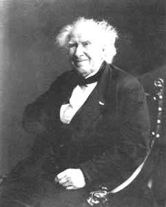
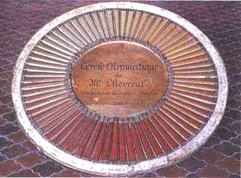
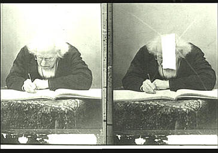
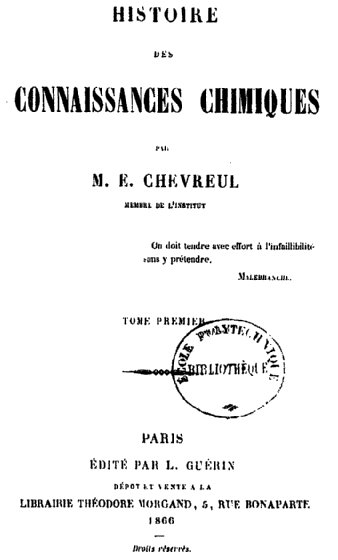
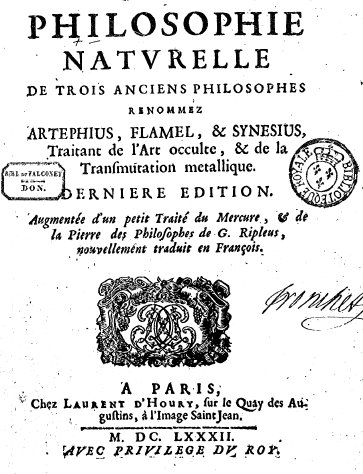
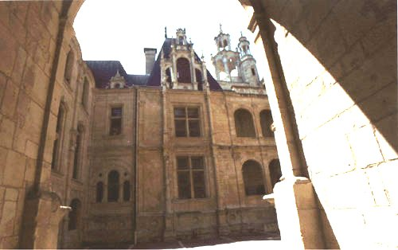
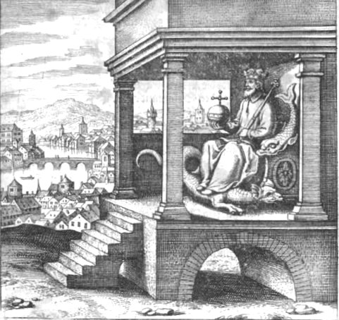
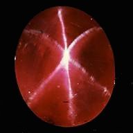
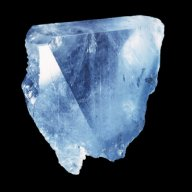
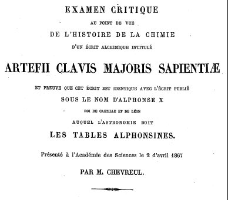

Philosophie hermétique : I. Eugène Chevreul, critique d'Artéphius Artéphius et Eugène Chevreul, à propos de la Clavis Majoris Sapientiae : 1. Mémoire de l'Académie des Sciences - 2. Extraits du Journal des Savants - Fonds Chevreul
¯
Les rapports entre Artéphius, et trois adeptes de Normandie :
Grosparmy, Valois et Vicot [cf. aussi le Trésor des Trésors et les Cinq Livres]
¯
Le Livre Secret du très ancien Philosophe Arthéphius
traitant de l'Art occulte et de la Pierre Philosophale
revu le 2 février 2004
Plan :I. Introduction - II. Eugène Chevreul - III. Mémoire de l'Académie des Sciences, avril 1867 - IV. Mémoires du Journal des Savants : - Ier article { §1 - Les Traités [1er Traité - 2ème Traité - 3ème Traité] - Les Faits [1er fait - 2ème fait (traductions A - traductions B et C -)] - §2 - manuscrits (mss) A - mss B - mss C : les traités de : Vicot - Valois - Grosparmy] - mss D [Séguier] - §3 - Les Adeptes de Normandie [Grosparmy - De Valois - Vicot] } - IIème article { - Clavis Majoris Sapientiae et doctrine d'Artéfius - §1 - Génération des métaux et des minéraux - §2 - Génération des Êtres vivants - §3 - Moyens prescrits par Artéfius...} -IIIème article {§1 - Opinions de Platon et d'Aristote sur l'origine de la matière - §2 - Formation du monde d'après Platon. } - suite du IIIème article -{ §3 - Des quatre éléments de la matière d'après Platon : articles 1 - 2 - 3 - §4 - Réflexion sur la différence des œuvres divines et des œuvres humaines. - conclusion} - 2ème suite du IIIème article { §5 - De la matière réduite à un seul élément - §6 - Eléments réduits à une propriété unique - §7 - Deux ordres de combinaison pour les métaux - - Dernières considérations sur l'alchimie - Du principe des semblables en Esthétique } - extraits d'un Mémoire de l'Académie de 1870 : EXAMEN CRITIQUE au point de vue de l'histoire de la chimie, d'un écrit alchimique intitulé: Artefii clavis majoris sapientiæ; et preuve que cet écrit est identique avec l'écrit publié sous le nom d'Alphonse X, roi de Castille et de Lion auquel l'astronome doit les tables Alphonsines : introduction - à propos de quelques alchimistes : Geber - Avicenne - Aristoteles [pseudo] - Bernard Le Trévisan - V - Le Livre Secret d'Artéphius [annoté et commenté] - Notes complémentaires - Ferguson [extraits de la Bibliotheca Chemica] : sur Artephius - sur Daustin -
Nous présentons aux lecteurs le texte du Livre Secret d'Artéphius traitant du dissolvant secret sur lequel insistent tant Fulcanelli et Eugène Canseliet. Isaac Newton s'est aussi intéressé à cet écrit : on peut citer le manuscrit Keynes MSS 17 et 64 [cf. B.J. Dobbs, Fondements, Trédaniel, 1981 et mss alchimiques de Newton]. Il consiste en transcriptions autographes du « Livre secret d'Artéphius » et de « l'Epître de John Pontanus, dans laquelle il porte témoignage du livre d'Artéphius » B.J. Dobbs a comparé ces manuscrits avec les versions anglaises de ces oeuvres publiées en 1624. Bien qu'il ne donne pas référence des pages, Newton sans aucun doute se servit de ces ouvrages. Mais il apporte des corrections (en se référant au Theatrum chemicum probablement, en ce qui concerne l'Epître de Pontanus). Par endroits, il omet les parenthèses explicatives d'Artéphius. Les corrections sur Artéphius portent sur des mots isolés ou de courtes phrases qui n'existaient pas dans la version anglaise publiée ; elles concernent également des variantes dans la lecture de certaines phrases. Ces variantes semblent avoir été toutes ajoutées après que la transcription originale fût faite par Newton, car elles se trouvent dans les interlignes, alors que les lignes suivent fidèlement la version publiée en 1624, cf. infra figure XI. Le texte est introduit par deux communications du chimiste Eugène Chevreul (1786-1889). Professeur au Museum d'Histoire naturelle (1830) puis directeur de cet établissement (1864), il a réalisé la synthèse des corps gras et inventé la bougie stéarique [dont parle aussi, curieusement, Fulcanelli]. On lui doit également une théorie des couleurs : voyez la biographie qui lui est consacrée et les sections spéciales sur son apport à l'alchimie. Eugène Canseliet lui a rendu hommage dans son Alchimie expliquée sur ses Textes classiques :
"...C'était en tout cas celui que se décernait le grand chimiste Michel-Eugène Chevreul qui fut le parfait modèle du désintéressement scientifique et de qui provient le précieux fonds alchimique de la bibliothèque du Muséum d'Histoire naturelle de Paris..."
Il vaut donc que nous nous arrêtions un instant sur cet esprit encyclopédique qui a écrit aussi bien sur Jacques-Joseph Ebelmen, hélas trop tôt disparu et... Artéphius ! L'intérêt de Chevreul pour l'alchimie n'a d'égal, à nos yeux, que celui d'Isaac Newton ou celui de Marcelin Berthelot, même si tous trois faisaient, à notre avis, fausse route quant au but que poursuivaient, réellement, les alchimistes ; il semble que Berthelot soit passé le plus près de la vérité dans ses Origines de l'Alchimie... mais ceci est une autre histoire.
Sites consultés sur Eugène Chevreul :
http://www.colorsystem.com/projekte/fr/17chef.htm
http://www.pourlascience.com/numeros/pls-253/livres.htm
http://www.multimania.com/histoirechimie/Lien/CHEVREUL.htm
FIGURE I
Eugène Chevreul à 100 ans, cliché Nadar, in le Journal illustré, août 1886Aucun chimiste n’eut peut-être autant d’influence sur l’évolution de l’art que le Français Michel Eugène Chevreul (1786-1889) — bien qu’il ne se soit guère intéressé à la façon dont les artistes comprennent et traitent les couleurs. Après avoir reçu une formation de chimiste, Chevreul fut nommé en 1824 directeur de la Manufacture des Gobelins. Il s’intéressa au problème de la teinture — donc aux couleurs. Devant surveiller la fabrication des colorants, il eut l’idée que les problèmes les plus délicats et les plus importants n’avaient rien à voir avec la chimie, mais bien plutôt avec l’optique : lorsqu’il arrivait qu’une couleur ne produisît pas l’effet escompté, cela ne venait pas des pigments, mais des tons colorés qui se trouvaient à proximité. Chevreul décida de traiter scientifiquement la chose à fond et fit paraître en 1839 son essai sur l’apparence des couleurs. Le titre de l’ouvrage est parfaitement explicite : De la loi du contraste simultané des couleurs. Chevreul y formule, entre autres, deux principes : « Lorsque l’œil perçoit en même temps deux couleurs avoisinantes, elles paraissent aussi dissemblables que possible, tant du point de vue de la composition optique que de leur valeur tonale. » Et encore : « Dans l’harmonie des contrastes, la composition complémentaire est supérieure à toutes les autres. »
L’ouvrage de Chevreul influença les écoles artistiques connues comme l’Impressionnisme, le Néo-impressionnisme et le Cubisme orphique. Robert Delaunay (1885-1941) utilisa plus que les autres dans ses tableaux des « écrans simultanés ». Bien que l’œuvre de Chevreul soit restée théorique et n’ait jamais été conduite à son terme, elle influença autant les conceptions d’Eugène Delacroix (1798-1863) que celles de Georges Seurat (1859-1891) sur les couleurs et sur l’art de les traiter. Chevreul montre, dans son ouvrage de 1839, qu’une couleur donne à une couleur avoisinante une nuance complémentaire dans le ton. Il s’ensuit que les complémentaires opposés s’éclairent mutuellement et que les couleurs non-complémentaires paraissent ”salies”, comme lorsqu’un jaune placé près d’un vert prend une nuance violette. Les lois du contraste chromatique occupèrent Chevreul dans sa recherche d’une bonne organisation des couleurs, dont il avait besoin pour la teinture des laines. Il mit donc au point le cercle chromatique à soixante-douze parties représenté ci-contre, qui définit les nuances par les différentes modifications qu’une couleur subit en tirant vers le blanc (élévation de son intensité) ou vers le noir (diminution de son intensité). Dix degrés sont ainsi possibles selon Chevreul. Il faut bien remarquer que dans son cercle chromatique, le chimiste place chaque couleur saturée à un degré différent de son secteur : le jaune pur est plus près du centre que le bleu pur ; le rouge pur est au quinzième degré de l’échelle. Les valeurs colorées des pigments prennent donc une place plus juste que dans les précédents systèmes. Dans le cercle chromatique de Chevreul, on relève, à côté des trois couleurs primaires (le rouge, le jaune et le bleu), trois couleurs secondaires (l’orange, le vert et le violet, qui sont aussi les trois mélanges primaires) et six mélanges secondaires. Les secteurs ainsi obtenus sont divisés en cinq zones et chaque rayon est divisé en vingt échelons, comme une sorte d’échelle qui donne les divers degrés de clarté. La notation codée donne les proportions des couleurs : 9B/1C signifie, par exemple, que l’on aura, pour la couleur considérée, neuf parties de noir (Black) pour une partie de couleur (Color). Avec sa demi-sphère, Chevreul a essayé de donner une représentation matérielle des couleurs dans l’espace. L’axe noir devient alors rayon, capable de parcourir et d’explorer les différents degrés. Chevreul était convaincu que les multiples nuances et leurs harmonies se laisseraient exprimer par des rapports entre nombres et il voulait mettre dans les mains de tous les artistes qui utilisent la couleur un instrument de mesure adéquat. Malheureusement, si riches d’influence qu’aient été les systèmes d’harmonie que Chevreul nommait « harmonie d’analogues » et « harmonie de contraste », le chimiste n’a jamais pu découvrir la loi de l’harmonie des couleurs : c’est que, tout simplement, elle n’existe pas. Voici à cet égard quelques lignes sur le contraste simultané des couleurs que nous avons empruntées à J. Pelouze :
CONTRASTE SIMULTANÉ DES COULEURS.Avant de faire connaître les principes généraux de la teinture, nous présenterons un résumé des travaux importants que M. Chevreul a publiés sur le contraste simultané des couleurs. On est resté jusqu'à ces derniers temps dans l'impossibilité de déterminer d'une manière fixe le classement des innombrables nuances que présentent les objets naturels, ou des modifications de couleur que les arts leur font subir. On avait pris le parti de les comparer à des couleurs types qui elles-mêmes pouvaient éprouver des variations. On avait ainsi l'amarante, le rose rouge, le cerise ; les couleurs de feu, de grenade, de langouste, de chair, de capucine, de souci, d'orange, de brique, de marron, de ventre de biche ; le mordoré, le jonquille, le cassis, l'olive, la tannée, le fauve ; le vert-canard, le vert-bouteille, le vert-perroquet, le vert-pré, le vert naissant, le vert d'osier, le vert-émeraude, le vert-ceillet ; les nuances bronze, tête de nègre, savoyard, pensée, gris de lin, etc.
Souvent les dénominations des couleurs types ne présentaient à l'esprit aucun rapport avec les couleurs. Nous citerons le bleu de roi, le bleu Marie-Louise, le bleu de France, le bleu de Berlin, le bleu d'azur; le pourpre, le cramoisi, le rouge écarlate, le rouge d'Andrinople ou des Indes ; le vert russe, le vert américain, le vert céladon, etc. M. Chevreul, en étudiant l'influence que les couleurs produisent sur l'organe de la vue, a établi des points de départ beaucoup plus précis.
¯Le nom de Michel-Eugène Chevreul est plus connu pour des raisons postales et toponymiques que scientifiques : armé de patience et d'un Minitel, le chimiste Jean Jacques, un des auteurs du premier volume considéré ici [Michel-Eugène Chevreul, un savant des couleurs, sous la direction de G. Roque, B. Bodo et F. Viénot], a montré en 1988 que Chevreul est, après Marcelin Berthelot, le chimiste français du XIXe siècle qui a donné son nom au plus grand nombre de voies publiques. Quel était ce personnage auquel viennent d'être consacrés deux ouvrages ? Il est né à Angers en 1786, et mort à l'âge de 103 ans, à Paris. Son activité scientifique fut considérable : il fut l'auteur d'environ 800 notes, mémoires ou livres, et, en 1885, âgé de 99 ans, il publiait encore une note dans les Comptes rendus de l'Académie des sciences de Paris ! Son activité protéiforme a concerné non seulement la chimie, la science des couleurs, mais aussi l'agriculture, l'alimentation, la teinture, l'histoire de la chimie, la théorie de la connaissance, la baguette divinatoire et les tables tournantes (il était très critique)...[bizarrement, le commentateur omet les travaux de critique historique de Chevreul sur l'alchimie. Ils couvrent pourtant plus de 500 pages, outre que Chevreul a légué un fonds remarquable de livres traitant d'alchimie, à la bibliothèque du Museum d'Histoire Naturelle]
Son centenaire, en 1886, est un événement national : 52 discours sont prononcés, une statue est inaugurée, une médaille est frappée, une réception à l'Hôtel de ville de Paris est suivie d'un banquet de 1000 couverts et d'une retraite aux flambeaux sur les grands boulevards, un entretien que Chevreul accorde à Nadar, illustré de photographies expressives, est le premier reportage photographique paru dans la presse française (il est publié par le Journal Illustré).Tous les journaux relatent les manifestations du centenaire.

FIGURE II
Michel-Eugène Chevreul, photographié par Nadar en 1883Avant tout, Chevreul a été l'un des grands chimistes de son temps. C'est l'incontesté créateur de la chimie des corps gras, qu'il a commencé à étudier dès 1812 et à laquelle il consacra en 1823 ses Recherches sur les corps gras d'origine animale. Ce traité, avec les Considérations générale sur l'analyse organique (1824), fait de Chevreul un des pionniers de la chimie organique, discipline alors naissante. Ainsi, en 1825, Chevreul dépose avec Louis-Joseph Gay-Lussac un brevet sur la préparation des bougies stéariques, qui allaient remplacer avantageusement les chandelles fuligineuses ; ce travail aura une importance pratique considérable quand l'industriel Adolphe de Milly aura l'idée de perfectionner les mèches de coton en les imprégnant d'acide borique. C'est aussi le début de sa grande carrière : en 1824, il est nommé directeur des Ateliers de teinture de la Manufacture des Gobelins, poste qu'il occupera jusque en 1883. Élu à l'Académie des sciences en 1826, il est nommé professeur de chimie appliquée aux corps organiques au Muséum national d'histoire naturelle en 1829 ; il y enseignera durant 60 ans. La nomination aux Gobelins marquera profondément l'activité de Chevreul. À ses débuts, il s'était initié, auprès de son maître Nicolas Vauquelin, à la chimie des colorants végétaux alors utilisés en teinture, tels l'indigo, la gaude et la garance ; dès sa prise de fonctions aux Gobelins, il est intéressé par les phénomènes de perception des couleurs et par les effets produits en nous par leur juxtaposition. Il comprend ainsi que les plaintes concernant la stabilité de certaines couleurs, notamment les bleus, les violets clairs et les gris, sont justifiées : elles correspondent à une instabilité des pigments colorés ; en revanche, pour d'autres couleurs, tels les noirs utilisés pour les ombres des draperies bleues ou violettes, la stabilité des couleurs utilisées n'est pas en cause. En 1828, il présente ces résultats à l'Académie des sciences dans un mémoire intitulé Sur l'influence que deux couleurs peuvent avoir l'une sur l'autre quand on les voit simultanément ; puis, en 1839, il publie un livre au titre interminable - un procédé dont il usera largement - et qui reste connu par son début : De la loi du contraste simultané des couleurs... Il y étudie systématiquement des phénomènes voisins du suivant : quand on juxtapose deux objets colorés, chacun d'eux paraît, non pas de la couleur qui lui est propre, celle qu'il aurait si on le regardait isolément, mais d'une autre couleur. Cette couleur nouvelle résulte d'une modification de la couleur propre de l'objet par la couleur complémentaire de celle qui lui est contiguë.
Chevreul est revenu souvent sur la définition et les propriétés des couleurs complémentaires ; en 1868, il écrivait :« Définissons maintenant la couleur complémentaire d'une autre couleur, celle qui neutralise en même temps qu'elle est neutralisée, soit que, les couleurs étant des rayons solaires, elles reforment de la lumière blanche, c'est-à-dire incolore, soit que les couleurs étant matérielles, elles produisent du gris ».
C'est en pensant aux couleurs matérielles (les couleurs des peintres) que Chevreul indique que sont respectivement complémentaires le rouge et le vert, l'orangé et le bleu, le jaune tirant sur le vert et le violet, l'indigo et le jaune orangé. Sic transit gloria mundi : le bicentenaire de la naissance de Chevreul est passé aussi inaperçu, en 1986, que le centenaire avait été fastueux. Puis seulement deux colloques ont marqué le centenaire de sa mort, en 1989 : celui qui s'est tenu à Angers a concerné la chimie des corps gras ; le second, à Paris, a été une rencontre interdisciplinaire autour de son oeuvre et, tout particulièrement, de ses travaux sur la vision des couleurs et de leurs répercussions sur l'histoire de l'art. Huit ans plus tard, paraissent les actes de ce colloque, en même temps qu'un livre important sur Chevreul et les peintres, par Georges Roque, un des responsables de l'organisation du colloque parisien. Les actes montrent que ce colloque fut interdisciplinaire, comme le voulaient les organisateurs. Les communications autour du premier thème, « Chevreul, l'homme de laboratoire et l'homme de la méthode », donnent une excellente vision du chimiste, de son activité et de sa place dans la communauté scientifique de l'époque. Les deux autres thèmes concernent plus directement les travaux consacrés à la couleur. Mentionnons les articles spécialement intéressants sur la théorie de la vision, et les prolongements informatiques du travail de Chevreul, celui très surprenant (c'est un compliment) sur l'art des jardins et celui de G. Roque sur Chevreul et les peintres. Cet article servit de base à son livre, que nous évoquerons après avoir souligné la qualité des illustrations du premier volume, parmi lesquelles on trouve certaines des photographies de Nadar et de belles reproductions de cercles chromatiques de Chevreul.

FIGURE III
L'un des cercles chromatiques de ChevreulL'ouvrage de G. Roque est un développement considérable de sa contribution au colloque parisien. La richesse de la documentation et de l'appareil critique font penser à l'adaptation réussie d'un travail de thèse. L'ouvrage est à la fois un livre d'histoire de l'art et un ouvrage d'histoire des sciences. Dans la première partie, en plus d'indications biographiques sur la carrière de chimiste de Chevreul, l'auteur présente la méthode qui servit à l'établissement de la loi du contraste simultané des couleurs. La seconde partie du livre montre comment les peintres ont accueilli la loi du contraste simultané. Avant d'y venir, mentionnons l'influence pratique des conceptions de Chevreul sur des artisans, tels les peintres d'enseignes ou de dioramas, les fabricants de papiers peints et les spécialistes de l'art des jardins, pour qui la manipulation des couleurs est un outil professionnel. Chevreul écrivit que les peintres ne l'avaient pas attendu pour reproduire correctement les couleurs, mais il était convaincu que la prise en compte du contraste simultané pouvait leur éviter de longs tâtonnements. Si l'influence pratique des théories de Chevreul sur la peinture de Delacroix reste discutée, on sait que le peintre s'intéressait à ces théories, qu'il avait acquis, vers 1850, un carnet de notes prises au cours de Chevreul et qu'il avait manifesté l'intention, qui ne s'est pas réalisée, de le rencontrer. Les rapports entre la peinture des impressionnistes et la loi du contraste simultané restent très controversés ; en revanche, les néo-impressionnistes, tels Georges Seurat et Paul Signac, se réfèrent très explicitement à Chevreul, et Robert Delaunay revendique pour sa peinture, à partir de 1912, le terme de « simultanée ». [texte de Georges BRAM]
Le chimiste français Michel Eugène Chevreul, né à Angers, vient à Paris en 1803 et devient l’élève puis le préparateur de Vauquelin ; il publie en 1807 ses premiers travaux sur l’action de l’acide nitrique sur le liège et ses études sur les matières colorantes. En 1811, il aborde le problème de la constitution des corps gras qui le rendra célèbre, car il éclaire un domaine peu connu de la chimie. Son premier mémoire (1813) fournit de précieuses indications pour la chimie organique, qui n’a pas encore obtenu les faveurs des chimistes, surtout préoccupés alors de chimie minérale. En 1823, il publie un ouvrage fondamental, Recherches chimiques sur les corps gras d’origine animale , où il expose la première théorie scientifique du processus de saponification et établit la composition réelle des graisses et des huiles. Une des conséquences pratiques de cette découverte sera la fabrication des bougies de stéarine (1825), qui vont remplacer les fumeuses chandelles de suif. ¯

FIGURE IV
Chevreul à 100 ans, photographié par Nadar en 1886, en train d'écrire son nom, dans le registre de Nadar, au-dessous de celui de PasteurEn 1810, il est aide naturaliste de Vauquelin au Muséum d’histoire naturelle, trois ans plus tard professeur de physique au lycée Charlemagne et, de 1821 à 1840, examinateur à l’École polytechnique. En 1824, il est nommé directeur des teintures à la Manufacture royale des Gobelins (poste qu’il quittera en 1884) ; il y installe un laboratoire et y perfectionne les contrastes des couleurs : De la loi du contraste simultané des couleurs (1829), Théorie des effets optiques que présentent les étoffes de soie (1846). Son cours est publié en 1829 sous le titre Leçons de chimie appliquée à la teinture . Ses études sur la décomposition de la lumière par le prisme et sur le cercle chromatique intéressent beaucoup les peintres impressionnistes. Il succède à Vauquelin en 1829 dans la chaire de chimie appliquée au Muséum d’histoire naturelle, dont il devient le directeur de 1864 à 1879. Le 31 août 1886, une grande cérémonie célèbre le centenaire du « Nestor de la chimie », qui vécut sous deux empereurs, trois républiques et quatre rois.
¯
Les textes que l'on trouvera ici comportent d'abord la séance du mardi 2 avril 1867 de l'Académie des sciences ; il s'agit d'une note de critique sur Artefius et le second texte expose le même travail, mais beaucoup plus développé ; il est publié dans le Journal des Savants, en trois livraisons. Le lecteur trouvera dans la section bibliographie des texes alchimiques faisant partie du fonds Chevreul du Museum d'Histoire Naturelle. Pour la commodité de la transcription au format web, nous avons scindé les études sur Artephius en plusieurs volets ; l'un d'abord où nous donnons le Mémoire de l'Académie des Sciences ; plusieurs autres ensuite, qui reprennent les articles du Journal des Savants. Nos commentaires sont en caractère vert, taille 8, gras. Plus loin, le lecteur trouvera, en illustration de ces travaux, le texte intégral du Livre Secret de la Philosophie occulte attribué à Artephius et le texte numérisé, en latin, de la Clavis Majoris Sapientiae qui tient sept pages dans la Bibliotheca Chemica Curiosa de Manget . Par ailleurs, nous donnons dans d'autres sections les textes de Nicolas de Valois et de Nicolas Grosparmy, deux des trois alchimistes de la région de Caen qui semblent avoir été impliqués dans la rédaction d'extraits et d'emprunts faits à la Clef de la Plus Grande Sagesse, attribuée d'abord à Alphonse X.
III. Mémoire à l'Académie des Sciences
HISTOIRE DE LA CHIMIE. - Note de critique historique et littéraire, concernant deux écrits alchimiques publiés sous le nom d'Artefius et sous celui d'Alphonse X, par M. CHEVREUL.
« L'Académie sans doute sait trop bien apprécier l'importance de toute recherche qui conduit à la vérité, pour qu'il soit nécessaire de justifier le temps que j'ai donné au travail dont je dépose le résultat sur le bureau afin qu'il paraisse dans le recueil de ses Mémoires ; cependant je rappellerai ce que j'ai dit ailleurs de l'histoire de l'esprit humain, c'est qu'elle n'a de vérité et d'utilité qu'à la condition d'être complète, c'est-à-dire de comprendre deux parties dont l'une se compose d'erreurs, d'aberrations, d'absurdités même et l'autre de vérités ; cette histoire n'est donc utile qu'à la condition de présenter les deux parties, non isolées, mais unies ensemble, telles en un mot que le temps les a tissées pour ainsi dire : c'est à l'historien à défaire ce tissu pour isoler le vrai du faux, afin de montrer à tous ce qui devient un élément scientifique de raisonnement, et ce qui doit être banni de la science comme cause d'erreur. Mais par qui cette tâche sera-t-elle accomplie ? Par ceux qui, au goût des recherches littéraires, réunissent le mérite d'avoir concouru aux progrès des sciences naturelles par des découvertes réelles, eux seuls sachant comment ils les ont faites et les qualités de l'esprit qu'elles exigent. Or, ce sont ces qualités de l'esprit qui ont présidé à ces grandes découvertes que le public et le commun des gens du monde ignorent, parce que les auteurs de ces grandes découvertes ont généralement gardé le silence sur la manière dont leur esprit a procédé pour parvenir au but qu'ils ont heureusement atteint, après des efforts multipliés et variés. Peut-être ont-ils eu raison de se taire ; car après tant de jugements dictés par l'ignorance ou par l'envie, n'est-il pas permis de croire qu'une histoire fidèle de leurs découvertes aurait plutôt prêté à amoindrir leur génie qu'à l'exalter par l'éloge ? Quoi qu'il en soit, je ne regrette point le temps donné à mon travail, surtout en considérant le résultat auquel il m'a conduit au point de vue de l'histoire. Pourrait-on croire, si l'on n'en avait pas la preuve, que l'ouvrage dont je présente l'examen ait été publié jusqu'à ce jour sous le nom de deux auteurs différents, et ce dans le même recueil, le Theatrum chemicum, imprimé à Strasbourg en 1660 ? On le trouve dans le tome IV, p. 198, avec ce titre
Artefii incipit liber qui Clavis majoris sapientiae dicitur
et dans le tome V, p 766, il est reproduit sous le titre suivant:
Sapientissimi Arabum philosophi Alphonsi, Regis Castellae, etc., liber philosophiae occultioris (praecipuè metallorum) profundissimus : cui titulum fecit Clavis sapientiae. Scriptus anno benedictae gratiae, et benigna miserationis nobis orsae, etc.N'est-il pas curieux de trouver dans des écrits historiques sur la Chimie, sous le nom d'Artefius, un compte rendu de l'ouvrage que j'ai examiné, et sous le nom d'Alphonse X un compte différent du premier ? Et cependant les deux oeuvres sont identiques, les deux comptes rendus sont de la même plume, et il est dit dans le tome V du Théâtre chimique, p. 766
« ...Inter alia vero quam plurima, librum etiam istum, qui Clavis sapientiae nuncupatur, de lingua arabica per quendam suum scutiferum in linguam propriam castellinam vifelicet transferri curavit. »
L'écuyer, scutiferum, était celui d'Alphonse X. En résumé, Alphonse X, né en 1226 et mort en 1284, a fait traduire le livre Clavis majoris sapientiae de l'arabe en langue castillane ; dès lors, on ne peut plus douter que Artefius était Arabe et qu'il appartenait au XIIe siècle, comme on l'a dit généralement. N'est-ce pas un fait important pour la critique scientifique, l'histoire de la philosophie et l'histoire de l'esprit humain, que l'ouvrage d'un alchimiste arabe ait passé pendant six siècles pour avoir été l'oeuvre d'Alphonse X, fils du roi Ferdinand le SAINT ? qu'aucunes remarques n'aient été faites sur ce que le nom d'un roi chrétien était attaché à une oeuvre où l'on considère l'esprit, et l'âme même, comme les parties les plus subtiles de la matière ? et que le nom du roi auquel la science astronomique doit les Tables Alphonsines, exécutées, d'après ses ordres, à grands frais par des juifs de Tolède, et portant la date de 1252, année de son avènement au trône, se trouve inscrit en tête d'un ouvrage où l'on présente comme réelles toutes les extravagances de l'astrologie judiciaire ? Et ici je reproduirai, comme circonstance atténuante pour la mémoire du roi Alphonse X et de ses contemporains, une Lettre que m'écrivit Arago relativement à une erreur de Galilée. En relevant l'erreur de six siècles pendant lesquels un même écrit a été attribué à Artefius et à Alphonse X, je me garderai de toute réflexion critique, dans la conviction où je suis des difficultés que présente la composition d'une histoire de la Chimie, car je ne balance point à dire que j'aurais pu la commettre. Mais à cette occasion, en réclamant l'indulgence pour mes écrits, je demande qu'on veuille bien ne les juger qu'après examen, et en ce cas je reconnais à tous ce droit de critique, parce qu'à mon sens il est la conséquence de la publication, et dès lors l'auteur jugé n'est point fondé à se plaindre du jugement. Il en est autrement d'un procédé qui a été employé pour donner le change au public sur l'Histoire des Connaissances chimiques, dont le premier volume a paru : on a prétendu que le titre n'était pas d'accord avec le texte ; en définitive, c'est l'accusation d'un titre mensonger. Ceux qui l'ont portée savent-ils que cet ouvrage m'occupe depuis plus de trente ans, ou ont-ils des idées opposées aux miennes sur la manière d'écrire l'histoire de la Chimie ? Je n'en sais rien. Quoi qu'il en soit, n'approuvant pas le mode généralement suivi jusqu'ici, avec ma conviction que l'utilité d'une histoire de ce genre exige autre chose que des citations textuelles où le plus souvent des mots ont pour nous un sens plus ou moins différent de celui qu'ils avaient pour les contemporains des écrits auxquels ces citations ont été empruntées, je pense qu'avant de tirer aucune conséquence des textes cités, il y a nécessité d'examiner les sens que les mots dont nous parlons peuvent avoir eus aux diverses époques de la science, et que, dans le cas où la critique a signalé des différences, celles-ci doivent être énoncées, puisque avant tout, en retraçant la succession des idées, elles deviennent ainsi la base même de l'histoire. Que l'on veuille bien se rappeler le travail historique inséré dans les Comptes rendus sur l'histoire des travaux dont l'air a été l'objet, et l'on y verra l'application de cette manière d'envisager l'histoire des sciences chimiques.
Que l'on veuille bien voir ensuite que cette application repose sur l'idée fondamentale de ma distribution des connaissances humaines du domaine de la philosophie naturelle, laquelle, partant de l'idée du fait, montre comment l'étude dont il est l'objet dans les sciences naturelles devient la mère du vrai scientifique, et comment elle mène à l'erreur, lorsque le fait que j'ai défini une abstraction, celle-ci vient à être réalisée en entité par une étude restée incomplète, parce qu'elle s'est arrêtée en chemin avant d'avoir touché le but. Que l'on applique cette manière de voir à l'histoire du mot éléments, et l'on en verra la généralité. Le travail auquel je me suis livré sur Artefius, et que je dépose sur le bureau, est un complément de l'histoire des travaux dont l'air a été l'objet. Il montre combien le sens que l'auteur arabe donne au mot élément diffère de celui que lui ont donné généralement et les prédécesseurs et les successeurs d'Artefius. Je conçois sans peine que l'opinion que je viens d'émettre sur le mode de composer une histoire des sciences chimiques ne soit pas celle de tout le monde ; dès lors les critiques qu'elle peut susciter n'ont pas lieu de me surprendre. Mais avec mes profondes convictions, je désire n'être jugé qu'après examen : conséquemment, qu'on veuille bien ne pas proclamer que le texte du premier volume que j'ai publié sur l'Histoire des Connaissances chimiques est en opposition avec le titre qu'il porte.

FIGURE V
frontispice des Connaissances Humaines, t. I , Morgand, 1866
Certes, si cet ouvrage ne touchait que moi, ce qu'on en peut dire me serait fort indifférent; mais il existe un éditeur intéressé, et c'est à son égard que je désapprouve un jugement prématuré ou un acte malveillant dont les conséquences ont été :
1)- d'interrompre l'impression du deuxième volume, consacré à l'histoire des peuples anciens et du Moyen Âge envisagée au point de vue chimique ;
2)- de suspendre celle du troisième volume, consacré à un résumé des sciences occultes, y compris l'alchimie ;
3)- de déterminer la publication du quatrième volume, commençant l'histoire des six époques des connaissances chimiques.
Je puis, hélas! faire un mauvais livre ; mais, grâce à Dieu, le reproche d'y attacher un titre mensonger ne peut m'atteindre.
IV. Mémoires du Journal des Savants, décembre 1867 - janvier 1868 - octobre 1868]
DU TRAITÉ ALCHIMIQUE D'ARTEPHIUS INTITULÉ : CLAVIS MAJORIS SAPIENTIAE [Theatrum Chemicum, t. IV, p. 198 - J. Jacobi Mangeti . . . Bibliotheca Chemica et Curiosa, t. I, p. 503 ]
- § I. De la reproduction du même traité sous la dénomination : Sapientissimi Arabum Phillosophi Alphonsi, regis Castellae, et liber philosophae occultioris (praecipus metallorum) profundissimus, etc. [Theatrum Chemicum, t. V, p. 766] Traduction française du traité d'Artefius, donnée dans plusieurs manuscrits comme l'oeuvre de Grosparmy, alchimiste normand
- § II et § III. Notes relatives à des manuscrits de Grosparmy, de Valois et de Vicot, et à leurs auteurs.
Beaucoup d'hommes sérieux trouvent perdu le temps donné à l'étude des livres de l'Antiquité, et surtout du Moyen Âge, écrits sous l'influence des sciences dites occultes, et dès lors les travaux qui en sont le résultat n'ont, à leur sens, aucune utilité ; mais cette conclusion ne peut être fondée, s'il est vrai que quelque estime soit accordée à l'histoire de l'esprit humain ; car jamais on ne doit méconnaître que l'exposé des erreurs, des aberrations, des absurdités même, auxquelles l'homme s'est laissé aller, fait partie essentielle de cette histoire, et l'écrivain qui la passerait sous silence, narrateur infidèle du réel, serait, auprès de ses lecteurs, le rapporteur partial d'une cause qui, présentée incomplètement, aurait pour terme l'erreur et non la vérité ! Quand on envisage l'esprit humain tel qu'il est en réalité, quelquefois il atteint à une hauteur imprévue, mais le plus souvent il marche dans l'ornière, et longtemps on l'a vu, et même encore on le voit, méconnaissant sa faiblesse, croire qu'il s'élève et qu'un vaste horizon se découvre à ses yeux, lorsqu'en réalité, dupe de l'imagination et sous le charme d'un mirage trompeur, il a négligé la méthode : sans doute elle n'est pas la mère des grandes découvertes, mais elle seule peut donner aux auteurs de ces découvertes la certitude d'avoir trouvé la vérité, certitude qui, les empêchant de prendre l'ombre pour le corps, l'apparence pour le réel, les préserve aussi d'erreurs que peut-être ils eussent commises, en ne recourant pas à un critérium propre à leur donner la conviction, ce fruit si doux à la conscience, en philosophie tout aussi bien qu'en morale. C'est à ce point de vue qu'il importe d'étudier le passé relativement au mode dont l'esprit humain a procédé pour connaître la vérité, et, à cet égard, rien ne m'a plus vivement frappé dans ces derniers temps qu'un écrit intitulé la Clef de la plus Grande Sagesse, attribué à un alchimiste arabe du nom d'Artephius que l'on fait vivre au XIIe siècle, parce qu'il cite Avicenne, qui vécut de 980 à 1036, et qu'à son tour il est cité par Roger Bacon, dont la vie s'écoula de 1214 à 1292. Cet écrit se recommande à un esprit curieux du passé par le degré des généralités qu'il comprend et le petit nombre des prétendus principes auxquels il ramène la création de la matière, la distinction de ses propriétés, la génération des minéraux, des plantes et des animaux, et surtout encore les influences astrales et la transmutation. Si les traités de Geber et un écrit d'Avicenne sur les minéraux présentent un certain nombre de faits exacts, du ressort de la chimie et de la géologie, je conviens que la Clef de la plus grande sagesse d Artefius ne renferme guère que des erreurs. Mais l'ensemble des vues qui s'y trouvent exposées, tout erronées qu'elles sont, l'intimité de leur liaison, le vaste horizon quelles embrassent, font qu' en les résumant on résume les connaissances du Moyen Âge, constituant la partie fondamentale des sciences dites occultes. En effet, Artefius parle de la création de la matière, de quatre genres de natures, de la transmutation, de la génération des métaux, et des minéraux [c'est pour nous l'objet même de l'alchimie], qu'il distingue de ceux-là ; de celle des corps vivants, plantes et animaux. Enfin, en reconnaissant la plus forte influence au grand monde, le Ciel, sur le monde inférieur, la Terre, ou, en d'autres termes, l'influence des astres sur les choses et les êtres vivants de notre globe, il montre avec bien plus de netteté d'idée que l'on se faisait autrefois du genre de cette influence, qu'on ne la trouve exposée ailleurs. Enfin, en parlant des relations des astres avec les êtres terrestres, il étend ses vues jusqu'à définir l'état de l'homme sain et l'état de l'homme malade. Sans doute la transmutation, ce but de l'alchimie [les alchimistes n'ont, après tout, que glissés aux hommes l'idée de la transmutation, cachant par là le sujet réel de l'alchimie et les hommes ont interprétés à leur convenance - faisant mesurer ainsi leur capacité de folie - ces livres], et les influences astrales, dont il parle, empruntées à l'astrologie judiciaire, ces fruits de la méthode a priori sont des erreurs, et l'examen critique qu' on en fait n'accroit pas le nombre des vérités ; mais la revue de ces opinions signalées avec tout leur relief et si différentes des opinions émises conformément à la méthode a posteriori expérimentale, n'est pas stérile pour la philosophie ; il y a utilité à connaître ces erreurs, qui, tant qu'elles durèrent, apportèrent de si grands obstacles au progrès des idées vraies, et cet examen, en montrant l'esprit de l'homme plus accessible à l'erreur que disposé à chercher lui-même la vérité, conduit le philosophe à trouver l'aspect le plus convenable sous lequel il doit lui présenter les idées vraies qu'il veut lui faire accepter ; d'ailleurs un examen approfondi de ces erreurs explique, en bien des cas, la difficulté qu'on rencontre à convaincre tel homme du monde, dont l'intelligence a été cultivée, de vérités à l'admission desquelles, à son insu, certaine disposition d'esprit met obstacle, ainsi que des erreurs qu'il a reçues antérieurement, erreurs qui, par leur origine remontant au Moyen Âge, appartiennent à celles que nous signalons avec l'intention d'en combattre les conséquences.
Artefius a joui d'une grande réputation parmi les alchimistes. Trois traités portent son nom :1er TRAITÉ : Artephii antiquissimi philosophi de arte occulta, atque lapide philosophorum liber secretus.
Il a été imprimé avec une traduction en 1612 [L. Du Fresnoy a indiqué à tort 1609 ; évidemment c'est une erreur, et il a dit en outre, que ce traité est imprimé dans le tome IV du Théâtre Chimique, tandis que c'est le deuxième traité, Clavis Majoris Sapientiae], le privilège dit pour la première fois. Il est un des trois traités de la philosophie naturelle non encore imprimés, etc.

FIGURE VI
frontispice des Trois Traitez, etc. Laurent d'Houry, 1682
Ce recueil, publié par P. Arnauld, sieur de la Chevalerie, Poitevin, a été réimprimé en 1659 et en 1682 [cf. figure V]. Le traité d'Artefius est traduit en français dans la bibliothèque des philosophes chimiques de Salmon. [vol. II, p.112]
2ème TRAITE : Artefii clavis maioris sapientiae
Lenglet du Fresnoy parle d'une traduction de ce traité sans date, ni lieu d'impression.
3ème TRAITE : Artefii de vita proroganda
Il existe deux traductions imprimées du premier traité : le liber secretus ; la plus ancienne, trois fois reproduite par l'impression dans les trois éditions du recueil d'Arnauld, sieur de la Chevalerie, et la seconde également trois fois reproduite dans les trois éditions de la Bibliothèque des Philosophes Chimiques de Salmon. Comment se fait-il qu'on n'ait parlé que d'une seule traduction imprimée du second traité, Artefii clavis majoris sapientiae, mentionnée par Lenglet du Fresnoy, et si rare d'ailleurs que je n'ai pu en voir un seul exemplaire, malgré toutes les recherches auxquelles je me suis livré ? [réflexion qui semble montrer la place que l'alchimie - ou du moins la philosophie hermétique - prenait dans la vie intellectuelle de Chevreul. Il est possible que son fils, Henri, n'ait pas peu contribué à lui fournir des ouvrages mais nous n'avons là-dessus rien d'assuré] La raison me semble en être que le premier traité purement pratique a dû être recherché par les alchimistes opérateurs, tandis que le second, exclusivement théorique, ne l'a guère été que des alchimistes spéculatifs bien moins nombreux et bien moins empressés que les premiers ; cependant on se tromperait de croire que la Clef de la plus grande sagesse ait été dédaignée. Deux faits ne me permettent pas de douter de la réputation qu'elle avait auprès d'un certain nombre de personnes convaincues de la réalité de l'alchimie.
- Le premier fait concerne la croyance où l'on a été, jusqu'à ces derniers temps, qu'Alphonse X, roi de Castille et de Léon, le prince qui chargea des Juifs de Tolède de rédiger les tables astronomiques auxquelles la reconnaissance des savants donna la qualification d'Alphonsines, avait composé un traité d'alchimie. Or cette opinion n'est pas fondée ; car l'écrit attribué à Alphonse X n'est pas autre chose que le livre de Artefius : Artefii clavis majoris sapientiae, ainsi que je rai reconnu récemment.
- Le second fait est l'existence de traductions françaises manuscrites que je possède, parmi lesquelles il s'en trouve une qui est donnée comme l'oeuvre originale d'un sieur de Grosparmy.
L'importance de ces deux faits n'est pas sans intérêt aux yeux de la critique la plus élevée, soit qu' on veuille écrire une histoire détaillée et approfondie des écrits alchimiques, soit qu'on veuille, sans entrer dans les détails, se faire une idée exacte de ce qu'étaient ces écrits en réalité : manière de voir que rendra évidente l'examen des deux faits signalés auquel je vais me livrer.1er fait. - La clef de la sagesse attribuée à Alphonse X
Cet ouvrage est incontestablement d'Artefius : il suffit, pour en acquérir la certitude, de lire le traité qui porte le nom de l'alchimiste arabe dans le IVe tome du Theatrum chemicum, p.198 ; et, dans le tome V, p. 766, le traité qu'on a attribué à Alphonse X. Je dis attribué, parce que, si l'on eût lu la préface (proaemiolum) du livre Sapientissimi Arabum philosophi Alphonsi, etc., jamais l'erreur que je relève n'eût été commise. Effectivement, le texte dit :
« qu'il ordonna (le roi Alphonse) que le livre qui est appelé la Clef de la sagesse fût traduit de la langue arabe «en propre langue castillane par son écuyer. »
Preuve incontestable que l'original avait bien été composé en langue arabe [... inter alia vero quam plurima, librum etiam istum, qui CLAVIS SAPIENTIAE nuncupatur, de lingua arabica per quendam suum scutiferum in linguam propriam Castellanam videlicet transferri curavit . . .].
Comment ai-je été conduit à reconnaître l'identité des traités attribués l'un à Artefius, l'autre à Alphonse X ? D'une manière fort naturelle. Le cinquième et dernier article sur l'Histoire naturelle générale des règnes organiques d'Isidore Geoffroy Saint-Hilaire [Journal des Savants, année 1864, p. 648 - dans cet article, Chevreul donne des réflexions tout à fait remarquables sur les oeuvres de Jean d'Espagnet, auteur considérable sur lequel on sait fort peu de choses - 1, 2 ; nous y reviendrons] avait pour objet de combattre l'opinion selon laquelle l'auteur de cet ouvrage prétendait que les alchimistes considéraient les minéraux comme des êtres vivants [c'est pourtant une vérité hermétique : certains minéraux, les gemmes précieuses tout particulièrement, croîssent dans les entrailles de la Terre pourvu que les conditions requises soient obtenues ; nous en parlons dans la section des blasons alchimiques]. Après avoir montré la contradiction de cette manière de voir avec les idées généralement professées par les alchimistes les plus renommés, idées que, depuis longtemps, j'avais coordonnées en un résumé très précis de ce qu'on peut appeler la théorie alchimique, j'ajoutai de nouvelles citations conformes à ma manière de voir et tout à fait contraires à celles que je combattais ; parmi ces citations se trouve [Journal des Savants, année 1864, p. 662] le résumé final du traité attribué à Alphonse ; il était si bien resté dans ma mémoire que, lorsque j'examinai les écrits d'Artefius pour mon Histoire des connaissances chimiques, l'identité des deux traités me fut démontrée, et plus loin, §3, j'aurai l'occasion de donner une nouvelle preuve de l'erreur d'Isidore Geofroy Saint-Hilaire.
2ème fait. - Trois traductions françaises de la Clef de la sagesse
Je possède trois traductions françaises manuscrites du traité Artefii clavis majoris sapientiae, qu'il serait, à tous égards, difficile d'attribuer à un même auteur ; je les distinguerai donc par les lettres A, B et C, afin de prévenir toute confusion.
Ce manuscrit in-4° relié, d'une écriture parfaite, comprend, en soixante pages, la traduction du traité imprimé dans le IV volume du Theatrum chemicum, p. 198, et dans le 1er volume de la Bibliothèque chimique de Manget (p. 503 ) [il s'agit de la Bibliotheca Chemica Curiosa, vol. I, p. 503]. Il a pour titre : la Clef majeure de sagesse et science des secrets de nature d'Artephius (sic). Comme le texte, il se divise en trois chapitres, mais le manuscrit comprend, en outre, soixante deux pages sous le titre : ensuit la pratique de la théorique cy-dessus ecritte par le même auteur. Cette partie pratique ne se trouve pas à la suite des deux textes latins précités ; mais nous la retrouvons dans les traductions B et C. [il s'agit du MS. 2026 du Museum d'Histoire Naturelle]
Depuis une vingtaine d'années, [ce qui signifie que Chevreul s'intéressait de près à l'alchimie au moins depuis 1840] je possède cinq gros volumes in-folio reliés, composés chacun de manuscrits alchimiques de sujets très variés, et d'écritures fort différentes. Un des volumes, qui n'a pas moins de 1183 pages, renferme deux traductions B et C de la Clef de la plus grande sagesse.
Elle commence à la page 1133 du volume. Elle se compose, comme la traduction A, de deux parties. La première partie a pour titre : La clef maïeure d'Artephius (sic), sa théorie. Elle comprend dix pages. La seconde partie, comprenant huit pages, a pour titre : 2ème partie ou pratique dArtephius. Ces deux parties rappellent bien le texte des deux parties de la traduction A ; elles correspondent donc évidemment au même original ; cependant la deuxième partie de la traduction B présente quelque différence. Quoi qu'il en soit, je ferai remarquer que la seconde partie de la traduction de A et celle de la traduction de B, qui sont données comme des traités de pratique, n'ont rien de commun avec le traité pratique d'Artefius que j'ai mentionné précédemment, sous le titre de 1er TRAITE. Artephii antiquissimi philosophi de arte occulta, atque lapide philosophorum liber secretas. [nous n'avons pu trouver trace du MS. dans le catalogue du Museum d'Histoire Naturelle ; il pourrait donc s'agir d'une partie du MS. 2030.]
La traduction C, qui se trouve dans le même volume que la traduction B, a pour titre (p. 139) : Clef maïeure de sapience et science des secrets de nature, où il est amplement traitté des qualités des métaus et de leur transmutation, par Nicolas de Grosparmi à son ami Nicolas de Valois. [il s'agit du MS. 2030 du Museum d'Histoire Naturelle]
[Nicolas de Valois est cité à plusieurs reprises par Fulcanelli ; ainsi, dans les DM, II, p. 39 où il nous dit :
" C'est cette eau prisonnière qui crie sans cesse : Ayde moy,je t'ayderay, c'est-àdire eslargis moy de ma prison, et si une fois tu m'en peux faire sortir, je te rendray maistre de la forteresse où je suis. L'eau donc qui est dans ce corps enfermée est la mesme nature d'eau que celle que nous lui donnons à boire, qui est appellée Mercure Trismegiste, dont entend parler Parmenides, quand il dit : Nature s'esjouit en Nature, Nature surmonte Nature et Nature contient Nature. Car ceste eau enfermée se resjouyt avec son compagnon qui le vient deslivrer de ses fers, se mesle avec iceluy et enfin, convertissant ladite prison en eux, rejetant ce qui leur est contraire, qui est la préparation, sont convertis en eau mercurielle et permanente... C'est donc à bon droict que nostre Eau divine est appelée la Clef, Lumière, Diane qui esclaire dans l'espoisseur de la nuict. Car c'est l'entrée de tout l'OEuvre et celle qui illumine tout homme." (Nicolas Valois, Les Cinq livres. Livre I : De la clef du Secret des Secrets)
Il s'agit ici de la préparation du Mercure, c'est-à-dire de cette eau permanente, feu aqueux pour les uns, eau ignée pour d'autres, l'Entrée ouverte au Palais du roi pour tous... Ailleurs encore, p. 115 :
"Quant à la nature mercurielle du support de l'étoile (qui est le ciel des philosophes), Nicolas Valois nous la donne bien à entendre dans le passage suivant :
Si le titre d'un livre a été trompeur relativement au nom de l'auteur qu'il porte, c'est sans doute le titre que je viens de reproduire ; car, si la première partie de l'ouvrage, la théorie, n'offre pas la traduction textuelle du latin d'Artefii clavis majoris sapientiae, elle en retrace fidèlement les idées. Il en est de même de la deuxième Partie, la pratique, relativement à la deuxième partie des deux traductions françaises A et B. Si on ne lit pas le noms d'Artefius dans la traduction C présentée comme une oeuvre originale de Grosparmy, une note du copiste du manuscrit de Valois, insérée à la fin du traité, et avant le traité donné sous le nom de Grosparmy, ne laisse aucun doute sur la conformité des idées censées exposées par Grosparmy avec celles d'Artefius et leur source (page 137), car le copiste a écrit le nom de l'alchimiste arabe. Cette Clef de sapience, donnée comme l'oeuvre de Grosparmy, n'est pas, sans doute, la reproduction textuelle de la traduction française B commençant à la page 1133 du même volume, mais elle comprend, en réalité, toutes les idées principales exposées sous le nom d'Artefius, conformément à la note précédente. Cette note précède donc l'oeuvre attribuée à Grosparmy, sieur de Flers, et la copie d'un manuscrit de Grosparmy, seigneur et baron de Flers, que je désignerai plus loin, manuscrit A , renfermant quatre traités désignés par les numéros 1, 2, 3 et 4. Le manuscrit dont je parle est le numéro 3. Je reviendrai sur ce manuscrit, lorsque je parlerai, à la fin de l'article, des personnes des trois adeptes normands, de Grosparmy, de Vallois et de Vicot.
Après avoir exposé ce que je me proposais de dire de la partie bibliographique du traité Artephii clavis majoris sapientiae, je profiterai de quelques pages qui me restent à remplir, sans excéder la longueur des articles de ce journal, pour donner quelques détails sur de Grosparmy et deux alchimistes que l'histoire lui associe sous les noms de Valois et de Vicot ou Videcoq, les deux premiers gentilshommes, l'autre prêtre, et tous les trois normands, ajoute l'histoire. Je tire ces détails des manuscrits de ma bibliothèque, qui sont au nombre de quatre, et dont j'ai eu déjà l'occasion de parler dans ce journal, comme n'ayant point été imprimés [Journal des Savants, 1861, p. 758, 759, 760 - la référence est fausse. Il s'agit de l'année 1851. Le passage dont parle Chevreul se réfère à des considérations sur Claude-Alexandre Séguier, cf. Cambriel.] : je les désignerai par les lettres A B C D.
Il fait partie du volume in-folio dont j'ai parlé précédemment à propos des traductions françaises manuscrites B et C du traité de la Clef de la plus grande sagesse, d'Artefius. Il commence à la page 23 et finit avec la page 507. Il comprend :
- 1° Les cinq livres de Nicolas Valois, compagnon du seigneur Grosparmi, de la page 23 à la page 137 inclusivement ;
- 2° Clef maïeure de sapience et science des secrets de nature où il est amplement traitté des qualités des métaux et de leur transmutation, par Nicolas de Grosparmi, à son ami Nicolas de Valois ; de la page 139 à la page 182 inclusivement. C'est le traité d'Artefius dont j'ai parlé ci-dessus, sous la désignation de traduction B ;
- 3° Le manuscrit de Grosparmi, sieur de Flers, commence avec la page 187 et finit avec la page 254 inclusivement ;
- 4° les trois livres de Pierre Vicot Prestre, serviteur de Grosparmy, comte de Flers et de Nicolas de Valois, gentilhomme, compagnon. de Grosparmy. Ils commencent à la page 257 et finissent à la page 507 inclusivement.« Ces trois philosophes, dit le texte, d'une mesme union, amitié, fidélité et concorde, firent le sacré magistère et leurs livres pour leurs successeurs, afin de laisser à la postérité lumière entière de cette science qui y est plus clairement enseignée que partout alleurs dans les autres livres.»
- La clef du secret des secrets de philosophie du serviteur Prestre. [correspond au MS. 2027 du Museum d'Histoire Naturelle]
Il comprend :
- 1° La clef du secret des secrets, de Nicolas de Valois, compagnon de M. de Grosparmy. Le traité de Valois, de ce manuscrit B , est un extrait du même traité du manuscrit A, mais souvent avec inversion d'ordre des propositions, et on y trouve des expressions de français moderne remplaçant des expressions anciennes, par exemple, fourneau au lieu de fournel ;
- 2° La clef majeure de sapience et science, des secrets de nature où il est simplement traité des qualitez des métaux et de leur transmutation ; par Nicolas de Grosparmy et [il n'est pas douteux que c'est une faute du copiste, car, dans le manuscrit A, il y a à au lieu de et] son ami Nicolas de Valois. [il s'agit du MS. 2030 du Museum d'Histoire Naturelle]Ce traité reproduit sans doute le traité de la Clef de la sagesse du manuscrit A, mais l'auteur du manuscrit B reconnaît d'abord que l'Oeuvre originale est celle d'Artefius [folio 175 - le MS. va du folio 173 au folio 207 inclus], que Grosparmy l'a abrégée et l'a éclaircie surtout dans la deuxième partie concernant la pratique, pratique qui ne se trouve pas dans les textes latins d'Artefius du Theatrum chemicum et la Bibliothèque de Manget. Le manuscrit B ne renferme pas le traité de Vicot ; mais il a le mérite de donner des renseignements sur les manuscrits du comte de Flers, que je n'ai pas vus ailleurs. J'y reviendrai à la fin de cet article, § III.
Il se compose de trois volumes reliés, dont deux renferment le Traité de Vicot et le troisième, le Traité de Valois et le Traité de Grosparmy. [il s'agit du MS. 2028 du Museum d'Histoire Naturelle. Ex libris Clavier fait référence à Étienne Clavier (1762-1817).]
- Le premier volume porte le titre :
La clef du secret des secrets de philosophie où premier livre de Pierre Vicot, ou le serviteur Prestre, serviteur de Nicolas de Grosparmy, comte de Flers et de Noël (sic), Le Valois, gentilhomme compagnon de Grosparmy. [il s'agit du MS. 2027 du Museum d'Histoire Naturelle]
Le second livre est dans le premier volume.
- Le second volume porte ce titre Livre III°, du même auteur :
Secret compendium ou mémorial final en forme de récapitulation sur mes précédents livres.
Si le traité de Vicot, du manuscrit C, n'est pas toujours la copie exacte du manuscrit A, il en est incontestablement une reproduction, sauf que l'on a cru devoir adoucir certains passages, d'après diverses considérations, et, à cet égard, je préfère à ce manuscrit le manuscrit A. Le troisième volume du manuscrit C comprend, comme je l'ai dit :
- 1° La Clef du secret des secrets de Nicolas Valois, compagnon de Grosparmy. Il reproduit le traité de Nicolas Valois du manuscrit B , mais quelques pages accessoires ont été omises ;
- 2° Oeuvre ou traité premier de Nicolas de Grosparmy, de Normandie. Livre Ier. Abrégé de théorique, seconde partie, pratique. Ce traité de Grosparmy reproduit le traité du manuscrit A sauf les deux derniers chapitres de la seconde partie pratique. Le manuscrit C ne reproduit pas la traduction française de la Clef de la plus grande sagesse d'Artephius. Les trois volumes du manuscrit C ont été reliés avec des feuillets blancs intercalés : dans les deux volumes de Vicot on a écrit, postérieurement au manuscrit, des remarques, des réflexions, des indications d'expériences alchimiques parmi lesquelles se trouve l'indication d'une observation faite, en mars 1829, sur une expérience ; il est utile peut-être de rappeler que Clavier mourut en 1817 : cette observation ne le concerne donc pas.
Le titre général est : Icy sont les livres des trois adeptes qui firent, à Rouën, la pierre philosophale. Ils comprennent:
- 1° Livre Ier :
Du noire.
Sur l'oeuvre de la pierre philosophale, par Nicolas Valois, compagnon de Grosparmy et de maistre Pierre Vicot, leur serviteur et compagnon.
Dédié à son fils.
Ce manuscrit n'est pas la reproduction textuelle du manuscrit A, mais il en comprend la plus grande partie avec quelques expressions moins anciennes. Il est terminé par la même pièce de vers que les manuscrits A et B commençant :
« Si tu veux savoir la Manière. »
- 2° Livre VIe [parce qu'il vient après le Ve Livre de Valois] : Pratique de l'oeuvre mineralle, par Nicolas de GrosParmy.
À son ami Nicolas de Valois.
Ce traité est la partie pratique qui succède à la Clef majeure de sapience d'Artefius, dans les manuscrits A et B. Ce traité a été publié sous le nom de Grosparmy.
Aprés viennent :
La pratique de l'Oeuvre végétale - La pratique de l'Oeuvre animale.
Quant au traité du manuscrit A, indiqué sous le n°3, il manque dans le manuscrit Séguier.
- 3° les trois livres de maître Pierre Vicot prestre, serviteur de Grosparmy, comte de Flers, et de Nicolas de Vallois, gentilhomme, compagnon de Grosparmy, indiqués sous ce titre dans le manuscrit A, le sont aussi dans le manuscrit D.
La clef de quelque secret de philosophie qui est le premier titre de M. Pierre Nicot (sic) prestre, serviteur de Nicolas de Vallois, gentilhomme, compagnon de Grosparmy, lesquels sont trois d'une même union, amitié, fidélité et concorde, firent la pierre des philosophes et leurs livret pour leurs successeurs.
Ce manuscrit ne reproduit guère que les dix-sept premières pages du manuscrit A de Vicot, qui en comprend deux cent quarante-sept. [il s'agit du MS. 2029 du Museum d'Histoire Naturelle]
N'est-il pas naturel de se demander, quand on sait le grand nombre des manuscrits portant les noms des trois adeptes de Normandie, pour quoi ils n'ont point été imprimés, et comment, dans la plupart des livres relatifs à l'alchimie, ces noms ont été omis, je dis dans la plupart, car je ne connais guère que le Dr Hoefer qui en ait parlé [Histoire de la Chimie, tome II, p. 127. Deux manuscrits sont cités : l'un appartient à la Bibliothèque impériale, manuscrit 1642, fonds Saint-Germain, l'autre à la bibliothèque de l'Arsenal, 166, in-4°. Cf . critique de l'Histoire de la Chimie de Hoefer, par Chevreul, en 15 articles] .
[Depuis, est paru un livre de Lucien Gérardin, l'Alchimie (Art, Culture, Loisirs, 1972), qui donne de précieux renseignements biographiques et bibliographiques ; nous en extrayons ces passages - cf. par ailleurs les notes d'introduction du Trésor des Trésors de Grosparmy :
« Des groupes d'alchimistes existèrent de tout temps : rappelons-nous l'évêque grec Synesius et le grand prêtre Dioscorus, ou encore ce petit cénacle de la Haute-Italie révélé au XIIIe siècle par un manuscrit latin de la Bibliothèque nationale. Rien de mystérieux à cela : les hommes de science éprouvent le besoin de se réunir pour échanger leurs idées. Et quoi de plus naturel qu'un ou plusieurs disciples viennent apprendre auprès d'un maître plus avancé en savoir : l'exemple d'Albert le Grand et de Thomas d'Aquin reste de toutes les époques. Tout ceci n'implique nullement l'existence de sociétés secrètes, au sens de la franc-maçonnerie. Un trio d'alchimistes qui travaillait à Flers en Normandie, au début du XVe siècle, illustre cette collaboration pour l'accomplissement du Grand Oeuvre. Il s'agit du seigneur de Grosparmy, de son ami Nicolas Valois et de leur chapelain le prêtre Vicot. A la lecture de leurs oeuvres, il ressort nettement que Nicolas Valois fut l'âme du groupe, le seigneur de Grosparmy jouant les mécènes, se piquant de traiter de science. Vicot l'illuminé, à l'affût de recettes nouvelles, essayait de découvrir celle enfin capable de faire de l'or ! Aucune des oeuvres des adeptes de Flers ne fut imprimée; cependant il en existe de multiples copies manuscrites généralement très bien exécutées [la critique textuelle indique le Mss. 3019 de la Bib. de l'Arsenal (Paris) comme le meilleur. Les Mss. français 12298-9, B. N., restent les plus beaux et contiennent de remarquables illustrations sur vélin]. Ces copies, et surtout les plus anciennes, contiennent des notices historiques, témoignage de la curiosité que nos Normands ont provoquée. Leurs oeuvres auraient été composées de 1430 à 1450 alors que toutes les copies que possèdent les bibliothèques sont au plus tôt du XVIIe siècle : le fait paraît surprenant, bien qu'il existe une explication simple que voici. Le prêtre Vicot n'a laissé aucune trace dans les archives des chartriers seigneuriaux. Aurons-nous plus de chance avec Nicolas Valois ? Peut-on le rattacher à la maison des Le Valois, seigneurs d'Escoville, localité située à une soixantaine de kilomètres au nord de Flers ? Les Le Valois apparaissent au XVe siècle en la personne de Jean Le Valois. Son fils, Nicolas Le Valois, né en 1494 et marié en 1534, fit construire un fastueux hôtel orné de sculptures symbotiques dans le goût du temps. Aucune filiation, hélas ! ne se retrouve entre ces Le Valois et notre Nicolas séparé par trois générations : coupure impossible à combler par la seule existence de sculptures symboliques sur l'hôtel d'Escoville. [...]

FIGURE VII
Caen, l'hôtel d'EscovilleLa famille de Grosparmy, en revanche, se signale dès le XIIIe siècle. Un Nicolas Grosparmy vécut à l'époque où les traités d'alchimie furent écrits. Il refuse en 1436 de rendre hommage au roi d'Angleterre qui avait conquis le pays. Dépossédé de sa seigneurie, il la recouvre lorsque l'envahisseur est chassé en 1453. Dès cette époque, dans la région, de nombreuses forges travaillaient le fer ; le XXe siècle continua d'exploiter les mines de carbonate de fer de La Ferrière-aux-Etangs près de Flers. Cet indice se révèle très important : les alchimistes voient dans les mines le modèle naturel que devait reproduire le travail au laboratoire et recommandent d'oeuvrer sur cette matière première, vivante à leurs yeux d'une étrange vie minérale. La notice historique que recèle le meilleur manuscrit des Cinq Livres de Nicolas Valois éclaire définitivement le mystère de la date tardive des copies :
« Grosparmy écrivit l'an 1449 et mourut sans enfant mâle ; il laissa deux filles dont l'aînée fut mariée en Lorraine au sieur de Moussi,et la cadette au comte de Flers de Normandie. Valois laissa un fils que Pierre Vicot appelle le « preux et vaillant Chevalier », pour lequel ledit Vicot fit ses trois livres, comme Valois, père dudit chevalier en avait fait trois aussi, que Vicot divisa en cinq parties pour le susdit chevalier, qui ne s'appliqua point à la philosophie.»
Les filles mariées de Grosparmy firent partage de la succession de leur père; le sieur de Moussi eut les manuscrits écrits sur du vélin et bien reliés, en lesquels y en avait un qui s'appelait le Livre d'Or parce que sa couverture était de plaques d'or fait par projection, à la condition que tout descendant de la famille ait la possibilité d'en prendre copie. Louis de Pellevé, comte de Flers, au début du XVIIe siècle, trouva dans les vieux titres de sa maison cette clause du partage. Quelle aubaine pour un seigneur à court d'argent ! Sur-le-champ, il décida de faire :
«...copier en Lorraine les dits manuscrits chez les descendants du sieur de Moussi et, pour cet effet, il envoya un gentilhomme de sa confiance et de ses amis, nommé Boisgefroy, qui demeura quatre ou cinq mois en Lorraine pour faire les copies. Il eut pour ses peines cent écus et l'on dit qu'il retint une copie à l'insu du comte de Flers ».
Les archives du chartrier de Flers confirment cette notice: les familles Grosparmy et Mouchy (ou Moussi ou Mouhy, l'orthographe des noms étant alors ignorée) furent en rapport, et le prêtre Vicot aurait été donné aux Grosparmy par les Mouchy. Connue dès le règne de Hugues Capet, une des branches de cette famille du Vexin normand essaima en Lorraine et parce que des Mouchy furent gouverneurs de Metz au XVIe siècle. Il est plausible que Nicolas Grosparmy, chassé de sa terre par les Anglais, se soit réfugié chez eux en Lorraine et que sa fille s'y soit mariée. En 1450, le seigneur de Flers était Raoul de Grosparmy : on peut faire l'hypothèse valable que ce représentant d'une branche de la famille avait fait hommage aux Anglais pour conserver la seigneurie. Nicolas, chef de famille exilé, aurait consenti au mariage de sa fille cadette avec Raoul, cousin plus ou moins éloigné. La pensée des trois alchimistes de Flers reste connue par leurs ouvrages. Nicolas Grosparmy composa deux traités: l'Abrégé de Théorique et le Secret des Secrets, traduction assez libre de la Clef d'une plus grande Sagesse, de l'alchimiste arabe Artéfius. Le prêtre Vicot, de son côté, rédigea Trois Livres, plus le Grand Olympe, traduction versifiée assez personnelle des Métamorphoses d'Ovide. Les Cinq Livres de Nicolas Valois constituent finalement ce qu'ils ont légués de plus intéressant. Nicolas Valois y insiste sur l'impérieuse nécessité d'une base théorique avant tout essai pratique, car :
« celui qui n'entend pas bien ce qu'il cherche ne peut arriver, comme font tant d'alchimistes ignorants qui, sur des recettes sophistiquées, perdent leur temps et leur argent sans rien trouver de ce qu'ils cherchent. Au contraire, celui qui chemine en des lieux qui lui sont familiers arrivera tôt ou tard là où il désire aller, même s'il s'égare par moments.»
La seule théorie que connaît l'alchimiste de Flers reste, bien entendu, celle des deux Principes Soufre et Mercure ; Paracelse n'inventa le Sel, troisième Principe, que cent ans plus tard [remarque : nous avons eu plusieurs occasions pour dire que le principe SEL de Paracelse est semblable à l'ARSENIC de Geber qui désigne la matière saline ou proprement corporelle de la Pierre]. Les idées de Nicolas Valois sur la génération des métaux dans le sein de la terre ne sont pas sans rappeler ce qu'en avait dit, un millénaire plus tôt, Apollonius dans son Livre du Secret de la Création des Etres. Qu'on en juge plutôt :
« Les principes des métaux sont seulement le Soufre et le Mercure, c'est-à-dire la chaleur et pureté de la Terre pour Soufre, et la vapeur humide pour Mercure, et c'est cette vapeur humide qui nettoie et purifie le Soufre, de son côté terrestre, grossier et impur, le réduisant à la suite d'une série de distillations en une matière grasse, en certains lieux particuliers de la Terre, en des lieux fermés où la chaleur du feu central est retenue par la disposition naturelle des voûtes [la voûte qui renvoie à arcanum constitue un indice en faveur du tartre vitriolé, encore appelé arcanum duplicatum qui la fait se réverbérer sur la matière]. » [Cinq Livres ; livre second]
Si le prêtre Vicot ne songeait probablement qu'à faire de l'or, on ne peut refuser à Nicolas Valois des connaissances plus profondes. Il conclut en ces mots ces Cinq Livres :
« Sache donc qu'au commencement une rosée perpétuelle coule du ciel sur la terre, rosée qui engendre dans les entrailles de cette dernière les métaux et les minéraux, et à sa surface les végétaux et animaux de toutes les espèces, dont le plus excellent est l'homme. C'est ce qu'il te faut bien savoir et connaître pour comprendre combien de choses sont dans la nature et d'où elles tirent leur origine primordiale, afin de découvrir ensuite où consiste la puissance universelle des choses » où réside caché tout notre secret.» [livre Cinq, chap. II]
Cette recherche de la puissance universelle des choses dépasse singulièrement les préoccupations très orientées du chercheur de pierre philosophale. Encore que notre alchimiste enseigne à préparer cette dernière en ces termes, empruntés à l'Assemblée des Philosophes :
« D'un par un qui n'est qu'un sont faits trois. Ces trois sont faits deux et les deux, non sans un long combat qui doit être terminé par la prudence de l'ouvrier, deviendront un seul, clair, beau et transparent, cet un qui guérira tous les défauts de ses frères estropiés. »
[cette phrase est entièrement cabalistique : un renvoie à seul, unique, en grec ioV, c'est-à-dire rouille ou vert-de-gris, oxyde en un mot : il faut donc chercher deux oxydes. Le long combat est le 3ème oeuvre où ces oxydes, préalablement réincrudés en sulfates, subissent une disparition temporaire qui correspond à l'une des putréfactions de Le Breton ; c'est l'éclipse du soleil de Lulle ; la prudence de l'ouvrier, c'est E. Canseliet lui-même qui l'évoque dans son Alchimie expliquée sur ses Textes classiques ; nous extrayons ce texte de la section sur la Pierre :
"Comme l'infortuné inventeur du radium, Fulcanelli savait très bien que le feu de son fourneau ou de ses brûleurs était incapable de provoquer une transmutation. La sublimité de l'arcane mit sa prudence en éveil, et c'est pourquoi il ne dépassa pas le niveau d'argumentation du feu secret des anciens alchimistes. C'est la raison pour laquelle aussi, nous avons disserté, une nouvelle fois, sur la grande inconnue de réalisation physico-chimique".
Nous avons là un superbe trait de cabale d'E. Canseliet. D'abord, il s'agit presque d'un aveu ; il est clair qu'aucune transmutation n'est possible. Ensuite, l'expression « sublimité de l'arcane » renvoie directement à la faculté de volatilisation de l'un des composants du Mercure : l'arcanum duplicatum, encore appelé tartre vitriolé ou sel polycreste. Quant au degré d'argumentation, c'est encore de Mercure que parle E. Canseliet car argumenter, en grec, se dit sullogoV [rassembler ses esprits] ; il s'agit donc là d'une remarque sur le lien du Mercure. Ce lien, c'est la Prudence qui en est l'hiéroglyphe ; que le lecteur reprenne nos observations sur cette Vertu et il mesurera effectivement, en liaison avec ce que nous en disons dans la section sur les blasons alchimiques, toute la sublimité de l'arcane.]
Si vous trouvez la recette trop obscure, n'oubliez pas ce conseil de l'adepte normand :
« La patience est l'échelle des philosophes et l'humilité la porte de leur jardin. Et Dieu fera miséricorde à celui qui persévérera sans orgueil et sans envie.»
[cette dernière phrase est très souvent citée par les alchimistes ; on s'en est expliqué dans l'analyse de la planche I du Mutus Liber]
Les âges sont voisins au sein du trio des alchimistes de Flers : il s'agit de ce que nous appellerions aujourd'hui une équipe de recherche dans un laboratoire. [...]
La cause n'en est-elle pas que la spéculation y domine trop sur la pratique, et que leurs adeptes s'accordent à justifier l'obscurité de leurs écrits, en même temps qu' ils renvoient le lecteur à un certain nombre d'écrits alchimiques. J'extrais les renseignements que j'ai promis sur les personnes des trois alchimistes normands, de leurs écrits d'abord et ensuite de remarques touchant le manuscrit du comte de Flers qui sont insérées dans le manuscrit B ; in-4° (folio 204, page 87).« Ils estoient trois qui ont possédé l'oeuvre, M. de Grosparmy .trysayeul de M. le comte de Flers, Nicolas de Valois, son ami, et Pierre Vitcoq ou Vicot, son chapellain. »
[Addendum aux trois compagnons ; cf. Le Cosmopolite : Grosparmy, Valois et Vicot offrent un exemple remarquable de compagnonage. On ignore à peu près l'époque où ils vivaient ; peut-être faut-il les placer à la fin du XVe siècle ou au début du XVIe siècle. il paraît que d'anciens historiens de l'alchimie n'évoquent pas ce trio, parmi eux Gmelin, Lenglet-Dufresnoy, P. Borel, Nazari, Bergman. Leurs ouvrages n'ont point été imprimés. Comme nous l'avons écrit dans l'Introïtus, VI, en commentaire, ces oeuvres se trouvent dans deux manuscrits, l'un appartenant à la Bibliothèque royale - ms 1642 du fonds de Saint-Germain - l'autre à celle de l'Arsenal - ms 160. in-4, comme l'indique Chevreul supra. Ce dernier ms, du XVIe siècle, se fait remarquer par la beauté et par l'élégance de son écriture ; c'est un des plus beaux manuscrits de la bibliothèque de l'Arsenal. On y lit sur le verso de la 1ère feuille, ces lignes tracées par une main étrangère :
"Grosparmy était un gentilhommedu pays de Caux en Normandie ; il y avait, dit-on, trouvé la pierre philosophale dans son château, où il y avait une vieille tour qui fut abattue longtemps après sa mort, et dans laquelle le comte de Flers, son héritier, avait, dit-on, trouvé la poudre de projection qu'a faite Grosparmy et son ami Valois. L'abbé Vicot était précepteur des fils de Grosparmy, et il mettait en vers les découvertes alchimiques du seigneur chez qui il demeurait."
Le traité de N. Grosparmy, très intéressant pour l'histoire de l'alchimie, est divisé en deux livres ; le premier est intitulé Abrégé de théorique, le second, le Trésor des trésors. Dans le même manuscrit (n°160), ce traité est suivi des cinq livres de Nicolas Valois, compagnon du seigneur Grosparmy. Après celui-là, vient le livre du prestre Vicot :
"Ce livre-cy estoit doré et escrit en parchemin et lettres d'or, et relié aux quatre coins de quatre grands clous d'or ; et en iceluy est déclaré ce que ces meissieurs [Grosparmy, Valois, Vicot] avaient un peu caché, dont ce présent est la copie et l'original. Donc, ceci soit gardé sous le silence, et qu'il ne soit montré à prsonne s'il n'est parfaict philosophe et homme de bien, en peine d'encourir les tourments et peines éternelles par l'ire de Dieu."
F. Hoefer ajoute, avec toute raison, que ceci rappelle l'histoire du livre d'or du Juif Abraham, dont parle Nicolas Flamel et qui, en fait, n'a jamais existé comme la montré Fulcanelli. Enfin le manuscrit n° 160 est terminé par un poème alchimique : le Grand Olympe ou Philosophie poétique, attribuée au très renommé Ovide, traduit du latin en langue française. En voici un extrait :
"Après vient Saturne le noir - Que Jupiter de son manoir - Issant, déboute l'empire - Auquel la lune aspire - Aussi fait bien dame Vénus, - qui est l'airain, je n'en dis plus ; - Sinon que Mars, montant sur elle, - Sera du fer l'ange mortelle, - Après lequel apparaistra - Le Soleil, quand il renaistra - [...]"
Il s'agit là de régimes planétaires du 3ème oeuvre qui suivent [Saturne] la dissolution initiale. Voyez notre Olympe Hermétique, la Matière et le traité du Cosmopolite, ou encore les Douze portes de Ripley pour ce sujet.
Le manuscrit A, n° 3, est incontestablement de M. de Grosparmy ; le copiste du manuscrit B dit que l'auteur le destinait au public. Le manuscrit A, n°3 [il suit immédiatement le n°2, qui est une traduction libre de la Clef maieure de Sapience . . . d'Artefius], porte au titre, un avertissement ainsi conçu [cf. aussi article d'Alfred de Caix, Quelques alchimistes normands] :
Grosparmy, sieur de Flers.
« Ensuite la copie d'un manuscrit fait par monsieur de Gros parmy (sic), sieur et baron de Flers et ayant acquis la dite baronnie et fait construire le chasteau du dit lieu. Lequel manuscrit contient théorie et pratique, et en dit autant que tous les autres livres ; néanmoins qu' il soit bien couvert, toutte l'oeuvre y est contenue ; estant bien entendu : ce qui se petit faire par le moien des autres livres cites au présent. Au nom du grand dieu Trin, un qui a créé toutes choses de rien, qui vit et règne sans commencement et sans fin: A tous les disciples de philosophie naturelle Salut et dilection »
chapitre Ier
« Sçachant tous que je Nicolas Grosparmy, natif du pays de Normandie par la volonté de Dieu; allant par le monde de region en region, depuis l'aage de douze ans jusques à l'aage de vingt-huict ans : cherchant et desirant sçavoir l'art d'alchimie qui est la plus subtille partie de philosophie naturelle qui traitte et enseigne de la très parfaitte transmutation des métaux et des pierres précieuses ; et comme tout corps malade peut être ramené et réduit en santé. Ledit temps durant, ay enquis comme l'un des métaux se peut transmuer en l'espèce de l'autre, et en ce faisant ay soutenu moult de peines et de dépences, injures et reproches ; et en ay abandonné la communication du monde et la pluspart de ceux qui se disoient mes meilleurs amis, pour ce qu'ils m'avoient en dedain, moy estant en nécessité, en me voulant détourner de l'inquisition du dit art, pour ce qu'il leur sembloit que je m'y occupois, et que je ne m'arestois à mes autres affaires et pour ai celle chose paruenir,ay quis, et esté avec maint compagnon cherchant le dit art comme je faisois, cuidant le trouver par leur moien ; et pour auoir amitié et entrée auec eux, me suis fait leur seruiteur, et ay soutenu la plus part de la peine de leurs ouurages, et ay veu et estudié plusieurs livres auxquels la science est contenue en deux manières, lune fauce et l'autre vraie...»
De Grosparmy dit qu'il termina son écrit le 29 de décembre 1549 [Manuscrit A, p. 254]. Pour peu qu'on ait lu et qu'on se rappelle les écrits où le comte Bernard le Trévisan et Denis Zachaire [Journal des Savants, 1851, page 494 et suiv. - cf. Cambriel, critique de Chevreul] parlent des peines et des déceptions de tout genre [nous avons supputé à diverses reprises qu'il s'agit d'allégories masquant des procédés techniques, cf. section du rébus de St-Grégoire] qu'ils ont éprouvées longtemps avant d'être parvenus au but de leurs désirs, on verra l'analogie de leurs écrits avec le récit bien plus bref que Grosparmy fait de ses voyages et de ses études alchimiques.
« Nicolas de Grosparmy (dit l'auteur des remarques du manuscrit B), a fait la maison des comtes de Flers, en basse Normandie, trés illustre et trés riche, et l'original de tous ses écrits est entre les mains du comte de Flers, lesquels tient si chers et avec raison qu'il se les cache à luy mesme »
De Valois, comme de Grosparmy, raconte ses peines [cf. la section du rébus pour l'explication cabalistique des peines, lamentations, etc.] et ses déceptions, et comment, avec ses compagnons, après avoir renoncé à tout commerce avec les alchimistes, ils se recueillirent dans la solitude méditant en lisant de bons livres, comme ceux d'Arnaud, de Raymond Lulle :
« Mais un de nous tellement porté aux particuliers sophistiques, pour voir tous-les-jours nouvelles choses qui lui éblouissaient les yeux, ne les voulut quitter. Or j'avais bien 45 ans quand cela arriva en l'an 1520 (il était donc né en 1475) et, au bout de 20 mois, nous vismes ce grand Roy assis sur son trône Royal faisant en premier projection sur le blanc, puis sur le rouge. (p. 31) . . .

FIGURE VIII
De Lapide philosophorum, Lambsprinck, 9ème figure [in Musaeum Hermeticum, 1678, p. 337 ]
Comptant le, temps que j'étais en chemin que j'ay laissé par écrit jusqu'à la perfection de l'oeuvre, il ne fallut plus que 18 mois, auquel temps ledit oeuvre fut accompli, encore qu'il eut été manqué une fois. » (p. 32)
Je passe aux citations du manuscrit in-4°, B.
« M. de Valois (dit l'auteur des remarques), qui estoit de la maison d'Ecoülles, est père du petit chevalier [auquel sont adressés les Cinq Livres (Manuscrit A, n°1)], a composé cinq liures reliez en un mesure uolume, où il y a au. commencement une grande figure ronde enluminée et deux fourneaux admirables de M. de Grosparmy, par le moyen des registres duquel on peut éclore des oeufs et fondre l'or; lequel liure il faisoit en forme de testament â son petit-fils, le chevalier...Nicolas de Valois, second amy et compagnon de science et de possession de l'ellixir, a basti une maison très-splendide à Caen, laquelle tu as veüe, et a laissé quatre terres nobles à ses successeurs dont l'aîné porte le nom de Sr d'Ecoüille Valois, grand seigneur en Normandie près la ville de Caën...Les quatre terres que M. de Valois avait acquises il les a basties magnifiquement ; chaque bastiment ne se feroit pas pour cinquante mil escus : dans l'une il y a une chapelle où sont les hiéroglyphes de l'oeuvre. Il auoit en première noce espousé une dame Hennequin, qui, par son contract de mariage, ne deuoit remporter de douaire que quinze cent liures ; mais le douaire de la seconde femme a esté de plus de vingt mil liures. Ecoüilles, Fontaine, Flers, et la maison de Caen. Il a, de plus, composé un liure très-excellent et très-rare traittant de la philosophie hermétique, tout plein de figures hiéroglyphiques, lequel est intitulé: Hebdomas hebdomadum cabalistarum magorum bracmanorum antiquorum que omnium philosophorum impteriae continens . . .
L`auteur des remarques ajoute :
« Monsieur de Valois mourut malheureusement sufoqué d'une huitre qu'il avait auallée entière. »
Dans l'intérêt de la vérité j'ajouterai que le volume in-folio que j'ai désigné manuscrit A contient un écrit par ordre alphabétique, intitulé :
Recueil par extrait de quelques philosophes adeptes, par ordre alphabétique, où sont reportez quelques-uns de leurs passages, avec quelques traits de l'histoire de leur vie, par messire Jean Vauquelin, cher. sgnr. et Patron des Yvetaux. 1700.
Cet écrit commence à la page 659 et finit à la page 1060. Il est intéressant pour le sujet que je traite, car la date de 1700 témoigne que l'auteur était né au dix-septième siècle, et que, comme Normand, gentilhomme et alchimiste, il avait eu toute la facilité possible pour recueillir des faits exacts relatifs à de Grosparmy, de Valois et Vicot, qui vivaient dans le seizième siècle [Vauquelin a écrit un opuscule : De la pierre philosophale et ce qui a convaincu Mr de Yvetaus de sa possibilité. Ce texte, dont l'original se trouve à la page 119, du manuscrit "Traité des sels", a été repris et commenté en janvier 1987, dans le premier numéro de Chrysopoeia, la revue publiée par la Société d'Etudes de l'Histoire de l'Alchimie (45, rue Saint-Maur, F75011 Paris)]. Je ne doute pas, d'après la note suivante que porte le volume :
« ce livre m'a esté donné par Mons. des Yveteaux, en 1714, que messire Jean Vauquelin ne soit l'auteur du recueil des nombreux écrits composant ce volume. Eh bien, messire Jean Vauquelin, à l`article Valois (p. 1038), dit que Valois acheva le grand oeuvre en la ville de Caen, où les hiéroglyphes de la maison qu'il y fist bastir, et que l'on y voit encore en la place Saint Pierre vis-à-vis la grande église de ce nom, font foy de sa science. »
[voici quelques renseignements biographiques sur Vauquelin ; ils sont extraits du remarquable ouvrage sur les Transmutations alchimiques, de Bernard Husson (J'ai Lu, 1974) qui, malheureusement, ne donne aucun renseignement sur Grosparmy, Vicot ou Valois. Ces trois alchimistes sont cités dans l'introduction de A. Poisson à son ouvrage sur les symboles alchimiques ; L. Figuier semble les ignorer :
« Appartenant à une riche famille établie en Normandie depuis le xve siècle, Jean Vauquelin était fils cadet d'Hercules Vauquelin, l'un des premiers personnages de cette province, à l'époque où il vint s'y retirer (1651). La mort du cardinal de Richelieu en 1642, dont il avait eu l'honneur et la chance d'être l'un des intimes, avait coupé court à une carrière jusque-là brillante. Hercules avait en effet été intendant-général du Languedoc, en 1641, et la charge de Conseiller d'Etat qu'il obtint en 1644 ne l'a pas consolé de s'être vu préférer un protégé de Mazarin à l'intendance d'Auvergne sur laquelle il avait des vues. Il quitta donc Paris, où naquit Jean Vauquelin, en juillet 1651, pour aller s'établir au château d'Hermanville, domaine de son épouse, où il séjournera jusqu'à sa mort, en 1678, après l'avoir fait ériger en marquisat. Son fils aîné, Louis Hercules, devait en hériter. Jean Vauquelin, second fils sur qui son père se déchargeait de ses affaires hérita en 1678 du domaine des Yveteaux et de son beau château, joyau de l'architecture militaire au xvie siècIe, heureusement préservé des terribles destructions qu'a subies la Normandie lors de la dernière guerre. La succession estimait ce domaine à 70 000 livres. Jean Vauquelin le revendra 150 000 livres en 1700. La différence entre ces sommes semble moins due à une dévaluation de l'unité monétaire entre ces deux dates, qu'à une sous-évaluation de la valeur réelle du domaine. Son attribution définitive à Jean Vauquelin ne se fit pas sans gros et longs procès avec son frère, le marquis d'Hermanville. Ces procès obligèrent le seigneur des Yveteaux, qui s'était marié en 1679, à venir séjourner à Paris en compagnie de sa femme. Ils s'installèrent rue Saint-André des Arts, jusqu'en 1682. Peu après le décès de sa jeune épouse, consécutif à ses secondes couches, en août 1682, Jean Vauquelin retourna avec sa fille en Normandie qu'il ne devait plus quitter. Etabli au château des Yveteaux jusqu'en 1700, il lui déféra ensuite sa demeure de Caen, où il mourra 1716. En 1705 et 1706 il avait été le Président de l'Académie des Belles-Lettres de la ville. »Si l'auteur des remarques du manuscrit B a raison, lorsqu'il parle d'une chapelle bâtie dans une des terres de M. de Valois, où sont les hiéroglyphes de l'oeuvre, le gentilhomme alchimiste en aurait décoré deux de ses constructions.on trouve aussi des hiéroglyphes spirituels dans le cimetière des Innocents que Flamel fit bâtir. Cf. Figures hiéroglyphiques]
Le manuscrit A n°4 donne quelques détails sur Vicot et sur Nicolas de Valois, que je reproduirai, parce qu'ils ne manquent pas d'intérêt au point de vue de l'histoire de l'alchimie. À la mort de Nicolas de Valois, son fils, le petit chevalier, allait encore à l'école, et étudiait en philosophie. Son père lui légua ses livres hermétiques, et recommanda au prêtre Vicot, son serviteur, son collaborateur et son ami, d'initier son fils en la science alchimique. C'est pour remplir les intentions d'un père mourant que Vicot adresse son traité composé de trois livres au petit chevalier.
- Le PREMIER LIVRE, très-concis, est une exposition de l'esprit de l'alchimie ; c'est là qu'est le passage contre les médecins qui prescrivent l'or ou l'argent MORTS à leurs malades, au lieu de l'or ou de l'argent rendus vire par l'art alchimique.
- Le LIVRE SECOND est divisé en théorie et en pratique : la théorie comprend 18 chapitres et une récapitulation; La pratique est divisée en trois parties:- Première partie, des instruments praticants et matériels, -« QUI FRAUDEM QUAERIT ET HABET COR IMPURUM, A ME RECEDAT. »
- Deuxième partie, pratique philosophique;
- Troisième partie, pratique du livre: il est dit, au titre de ce livre :« qu'il estoit doré et écrit en parchemin et lettres d'or et relié aux quatre coins de quatre grands clous d'or. et en icelui est déclaré ce que, les maistres avoient un peu caché dont le présent est la copie de l'original. Donc ceci soit gardé sous silence et qu'il ne soit montré à personne, s'il n'est parfait philosophe et homme de bien, et en peine d'encourir les peines éternelles par l'ire de Dieu. » [on remarque la très nette analogie avec la description du Livre d'Abraham Juif que N. Flamel prétend avoir découvert ; il s'agit en fait d'une allégorie de la matière première ainsi que l'a montré Fulcanelli]
- Le LIVRE TROISIEME, « où est tout et déclaré plus nettement qu'aux autres, et est en forme de récapitulation par-dessus tous ses autres livres â cause de l'amour qu'il (Vicot) porte à ce noble et petit chevalier (le fils de Nicolas de Valois). »
Ces détails sont conformes à ceux que nous trouvons dans les remarques du manuscrit in-4° B :
« M. Vicot, chapelain de M. de Grosparmy et son ancien serviteur domestique, à cause de l'amour extrême qu'il auoit porté à son feu maistre Nicolas de Vallois, a composé un gros volume qu'il appelait le liure doré, dont la moitié estoit de lettres d'or et auoit quatre gros clouds d'or sur la couuerture, et est pareil en grosseur à celui de Nicolas de Valois ; il commence par ces mots : qui fraudem quaerit et habet cor impurum, (il faut ajouter) a me recedat (p. 297 du manuscrit A). « Et c'est le second liure, car son premier est un petit liure qui s'appelle La clef des secrets de philosophie, et son troisième est appellé Secret, compendium ou mémorial final en forme de récapitulation; mais son quatrième est les Fables du grand olimpe en vers, avec leur explication. »
Enfin je ne puis terminer cet article sans remplir la promesse que j'ai faite (p. 771), de donner une preuve nouvelle de l'erreur commise par lsidore Geoffroy Saint-Hilaire, quand il a avancé que les alchimistes considéraient les minéraux comme des êtres vivants, contrairement à l'opinion d'après laquelle j'avais résumé leur théorie en disant
« qu'ils considéraient l'or et l'argent de la nature, tels qu'ils sont dans la terre, comme des natures privées de la vie, et que. leur art consistait à la donner à une petite quantité d'or ou d'argent, de sorte que, ce but atteint, la pierre philosophale était faite » ;
car il suffisait de la mettre en contact avec des métaux vils pour que ceux-ci se changassent en argent ou en or, selon qu'on avait animé l'un ou l'autre de ces métaux, et cette conversion était comparée au levain qui change la pâte de farine en sa propre substance. Je reproduis textuellement l'alinéa 16 du chapitre II du IIIème livre de Vicot (manuscrit n° 4, page 427).
« 16. Sçache donc que chaque chose engendre son semblable, car la semence de l'or fait l'or, et la semence d'argent fait argent. Mais l'or, l'argent et l'argent vif vulgaires sont morts, et les nostres sont vifs. c'est-à-savoir qu'ils opèrent comme chose vivante, c'est pourquoy CE N'EST PAS LES vulgaires qui sont les nostres, MAIS LES VIFS sont pourtant descendus des MORTS, car nostre or, nostre argent et nostre argent vif sont tirés de l'or, argent et argent vif vulgaires, que l'on voit tous les jours. »
L'or vivant de la pierre philosophale avait non seulement la propriété de transmuer les métaux vils en or, mais la propriété de maintenir la santé du corps de l'homme et de combattre ses maladies. Dès lors l'alchimiste avait un profond mépris [cf. à ce sujet Paracelse] pour le médecin qui prescrivait des préparations d'or ordinaire à l'exclusion de l'or alchimique. Le passage suivant du livre de Vicot (manuscrit A n° 3, alinéa 148, page 295) en est la preuve :
« (148). De plus, ces asnes de médecins mettent dans les restaurans et confections des fragments d'or et de perles, ne jugeant pas qu' en tel estat que l'homme prend l'or il le rend au même estat, en quoy ces pendarts font, bien voir qu'ils ont connoissance que dans l'or il y a une grande vertu, mais jamais ne profitera rien, tant qu'elle sera attachée à son corps, duquel elle ne pourra jamais estre séparée par autre voie que par celle de nostre philosophie, et ces méchants, qui ne conoissent point cette science admirable, jettent des blasphèmes contre elle et ressemblent au renard*, qui méprisait les raisins pour n'y pouvoir atteindre. » [*le manuscrit porte les mots suivants tracés avec une encre dont la couleur est différente de celle qui aavit éét employée précédemment]
Ces nouvelles citations s'ajoutent à toutes les preuves que j'ai données de l'exactitude du résumé en termes précis de la prétention des alchimistes, prétention qui mettait la puissante de leur science au-dessus de la puissance qu'ils reconnaissaient aux influences astrales, puisque, s'ils regardaient celle-ci comme capable d'amener les métaux vils terrestres à l'état de métal parfait, or ou argent, ils refusaient à ces deux métaux pris à l'état naturel, la faculté d'opérer la transmutation, parce que, pour l'opérer, il fallait qu'ils fussent VIFS et qu'ils ne pouvaient recevoir la VIE que de l'art alchimique [cette vie ou bien mieux, cette animation, est l'ouverture des métaux, c'est-à-dire leur transformation en « chaux métallique »]. L'explication que j'ai donnée de l'alchimie montre donc parfaitement encore l'extrême différence qu'ils mettaient entre la préparation médicinale de l'or vulgaire mort, et la préparation de ce même métal qui avait reçu la vie de l'art alchimique.
E. Chevreul
DU TRAITÉ ALCHIMIQUE D'ARTEFIUS intitulé :
CLAVIS MAJORIS SAPIENTIAE
Je ne puis que me féliciter de l'accueil fait aux articles publiés depuis longtemps dans ce journal sur l'histoire de l'alchimie et de la chimie. D'accord avec les savants versés dans la science de l'Orient, Étienne Quatremère, Champollion le Jeune et Letronne, j'ai combatu l'opinion d'après laquelle l'alchimie remonterait à la plus haute antiquité, parce qu'elle aurait été pratiquée, a-t-on dit, dans le sanctuaire des temples de l'Égypte des Pharaons. Je crois être d'accord encore avec mes honorables collègues, MM. Barthélemy Saint-Hilaire, Littré et Franck, lorsque je rattache le développement de l'alchimie à la culture des sciences et des doctrines si diverses qui occupèrent. durant plusieurs siècles, les savants de l'école d'Alexandrie, de l'Égypte des Lagides. L'alchimie, parait-il, se répandit en Grèce, à Byzance surtout, puis en Arabie. Enfin l'opinion, rappelée dans le précédent article, de l'objet de l'alchimie, que j'ai définie la prétention de donner la vie à l'or et à l'argent, avec l'intention de multiplier indéfiniment ces métaux qualifiés de parfaits aux dépens des métaux vils, est généralement adoptée aujourd'hui. L'époque que j'assigne à l'origine de l'alchimie est en parfait accord avec la distinction que j'ai établie entre sa partie spéculative et sa partie expérimentale d'après le fait que les écrits alchimiques présentent à la fois des vues abstraites et des expériences ; mais nul rapport réel n'existant entre les premières et les secondes, l'alchimie ne peut être mise au nombre des sciences expérimentales, car l'idée qu'éveille en nous cette expression est une liaison incontestable entre des phénomènes mis en évidence par l'expérience, et l'explication théorique que nous donnons des causes qui les produisent, liaison que nous admettons tant que des faits bien observés ne viennent pas contredire la théorie. La conséquence de cette négation de rapport réel entre la partie spéculative de l'alchimie et sa partie expérimentale, est d'isoler absolument la première de la seconde pour l'étudier comme une hypothèse purement gratuite [c'est pourtant ce qu'a fait C.G. Jung dans sa Psychologie et Alchimie (Buchet-Chastel, 1970)], et d'apprécier ainsi ce qu'elle est en réalité et à quoi elle se rattache dans les branches du savoir humain. Je dis sans hésiter, la partie spéculative de l'alchimie appartient aux sciences dites occultes : en me servant de cette expression, conformément à l'usage, je ne puis trop protester sur ce qu'elle a d'inexact en raison. Car toute science vraie, réelle, nous était cachée avant que nous ne la connussions, et elle l'est encore dans les parties qui nous restent à connaître. D'où je conclus qu'une science dite occulte n'est pas une science.
Au fond qu'était l'alchimie ? la prétention de satisfaire par des préparations, en un mot, par des moyens matériels, aux désirs les plus ardents de l'homme, ceux de la richesse et de la santé : or ces moyens matériels étaient la pierre philosophale et des panacées, remèdes à tous maux et capables de prolonger la vie. Les alchimistes étendaient leur prétention, sinon tous, du moins un grand nombre, à la préparation des pierres précieuses [c'est pour nous l'objet même de l'alchimie : la génération des gemmes orientales. Mais que l'on ne s'y trompe pas ; l'essentiel de l'alchimie n'est pas là mais dans la philosophie qui se dégage des textes.]. Rien, dans les idées des premiers alchimistes, ne correspondait à quelque chose de positif capable de satisfaire l'esprit, parce que ce quelque chose aurait appartenu au domaine du raisonnement. Il fallait bien, dans la voie où l'on s'engageait, chercher un fil conducteur ? Mais où le trouver, sinon dans les sciences occultes ? Voilà l'origine de la partie spéculative de la théorie alchimique, et la raison qui m'a fait dire que, pour en comprendre clairement la signification, il fallait en rechercher les éléments dans les sciences occultes, et que dès lors il était nécessaire de résumer l'ensemble des sciences occultes de manière à en montrer l'intime liaison avec la partie spéculative de l'alchimie en même temps que l'extrême distance qui sépare cette partie de de la partie expérimentale. Celle-ci sort certainement des ateliers et des laboratoires des arts chimiques ; autrement, comment, avec l'intention de changer profondément la matière dans ses propriétés, aurait-on recouru à des opérations purement mécaniques ne modifiant que la forme et les autres propriétés physiques de la matière, au lieu de recourir à ces opérations où le feu , l'air et l'eau, agissent pour la réduire en cendre, en verres incolores et verres colorés [nous avons étudié ce point dans la section du Mercure, § Art sacré], où des matières pulvérulentes d'apparence terreuse apparaissent à l'état de métaux brillants cassants ou ductiles. C'est donc l'étude de ces phénomènes qui a enfanté la chimie, et non des idées purement hypothétiques puisées dans les sciences occultes. La chimie, comme je l'ai dit depuis longtemps, est la fille des arts chimiques et non la fille de l'alchimie, comme on l'a trop longtemps répété [Fulcanelli ne dit pas autre chose ; à ce sujet le lecteur pourra consulter le site de Rubellus Petrinus où est résumée l'affaire Fulcanelli ; nous avons eu la surprise d'y lire que Canseliet et Julien Champagne s'étaient intéressés à l'art des vitraux :
« Tous ces gens s'occupent d'alchimie, c'est une véritable mode. Les groupements les plus divers proposent des cours d'hermétisme. Les Frères Charconac, amis de Dujols, emploient aussi Champagne dans leur librairie, sur les quais, à Paris. Son travail consiste à recevoir les ouvrages provenant de bibliothèques privées, généralement de province, à les évaluer et à les ranger. Ce n'est pas pour déplaire à cet érudit, toujours à l’affût de livres anciens traitant d'alchimie. Or, un jour où il affaire à classer des livres, un exemplaire rare des écrits de Newton lui passe entre les mains. Il l'ouvre et découvre un manuscrit qu'il estime de 1830, de six pages, notes prises par un expérimentateur au cours de ses expériences et relatant son succès. Champagne dérobe les précieux feuillets et les emmène chez lui afin de les étudier. Il s'agit, à sa grande joie, et il se réjouit déjà à l'idée de pouvoir lui-même obtenir un pareil résultat, de manipulations alchimiques permettant la réalisation des fameuses couleurs bleues et rouges utilisées pour les vitraux de Chartres. Il va, dès lors, se pencher sur le manuscrit et tenter de le décrypter en passant de nombreuses heures au laboratoire, mais en vain. C'est alors qu'un jour de 1913, tandis qu'il se trouve à La Closerie-des-Lilas, selon son habitude, il aperçoit René Schwaller, dont il connaît le grand intérêt pour l'alchimie et les connaissances en chimie. Il l'aborde pour lui proposer la lecture du manuscrit et une éventuelle collaboration. » ].
Après mes longues études sur l'histoire de l'alchimie, je me crois assez familier avec ce sujet pour dire combien ma marche a été lente, incertaine, sinon difficile, ne voulant, sur un passé absolument fini, rien avancer qui n'eût pour moi quelque certitude, et cornbien je me trouvai soulagé après la lecture du traité Artefiis clavis majoris sapientiae ; car c'est en l'étudiant d'une manière toute particulière en même temps que je le traduisais du latin en français, que la raison de l'origine de l'alchimie m'apparut clairement sans incertitude telle que je viens de l'exposer en quelques pages. En effet l'idée qu'il prend, dit-il, chez Platon et Aristote, d'une matière absolument privée de propriétés, mais susceptible de les recevoir toutes du dehors, la distinction de quatre natures simples, la sécheresse, l'humidité, la froidure et la chaleur, qui, unies en proportions diverses, constituent chacun des quatre éléments, le rôle immense qu'il fait jouer au principe des semblables, voilà des propositions puisées aux sources des sciences occultes, aux écrits de Platon et des néoplatoniciens, qui, une fois admises en principes, rendent parfaitement claire la conception de l'alchimie. C'est après avoir relu le Timée de Platon et les écrits des néoplatoniciens d'Alexandrie [cf. Idée alchimique, V là-dessus], que le jour s'est fait dans mon esprit pour apercevoir l'origine d'un grand nombre d'idées que professèrent l'Antiquité et le Moyen Âge ; émanations de la méthode A PRIORI la plus pure, elles ont parcouru des siècles, et l'influence n'en est point encore usée. En revenant sur le passé, en comparant le nombre des publications dont le traité pratique d'Artefius, De lapide phitosophorum liber secretas, a été l'objet relativement à celui des publications du traité d'Artefius, Clavis majora sapientiae, tout théorique ou plutôt spéculatif, j'ai vu combien le nombre des opérateurs alchimistes a dû dépasser celui des alchimistes auxquels on pouvait appliquer l'épithète de savants ; cependant les deux faits que j'ai mis en lumière, à savoir :- 1° Le traité Clavis majoris sapientiae,considéré, pendant plus de six siècles, comme l'Oeuvre d'Alphonse X, roi de Castille ;
- 2° Le même traité attribué à l'adepte Grosparmy, gentilhomme normand, à la vérité dans des manuscrits non imprimés, sont une preuve sans réplique de la valeur, qu'on attachait au traité d'Artefius, certainement à cause de la manière claire dont il a exposé la doctrine alchimique.Les plus hautes questions occupent Artefius ; mais, en lisant son livre, on reste convaincu que le but où il tend est moins de discuter ces questions, à l'instar des philosophes, que d'en tirer des raisons conformes à la manière dont il se représente la transmutation et veut l'expliquer à ses lecteurs. Aussi, en remontant à la création de la matière par Dieu, en reconnaissant qu'il la créa absolument passive, ou simplement réceptacle (receptivum), ni grande ni petite, ni épaisse ni subtile, ni mobile ni pouvant être en repos, ne devant pas être définie par un nom, ni assimilée à aucune chose, Artefius la considérait comme apte à recevoir toutes les propriétés imaginables d'une cause extérieure, et, dés lors, il préparait parfaitement ses lecteurs à admettre la transmutation. Après la matière, la lumière fut créée ; et des deux vinrent la chaleur et le mouvement, puis apparurent la froidure et la siccité, et l'humidité, qu'il considère comme le résultat de parties égales de chaleur et de froidure. Avant de tirer aucune conséquence de ces propositions, ajoutons la distinction par Artefius de quatre genres de natures:
I. Le SIMPLE - II. Le SIMPLE DU SIMPLE III. - Le COMPOSÉ DU SIMPLE IV. - Le COMPOSÉ DU COMPOSÉ.
- Ier Genre, le SIMPLE. Il comprend deux natures : L'une active, la chaleur; L'autre passive, la froidure ; [le premier genre est équivalent aux deux principes des alchimistes : l'agent et le patient. L'agent est le SOUFRE ; le patient le CORPS ou SEL de Paracelse ou ARSENIC de Geber. Quant au Mercure, il est le MOYEN mais il n'entre pas en ligne de compte ici]
- IIème Genre, le SIMPLE DU SIMPLE. Il comprend quatre natures : celle de la chaleur ; celle de la froidure ; Celle de l'humidité ; Celle de la siccité ; [Cf. la FIGURE I de l'ATLAS des connaissances humaines ; il s'agit en quelque sorte des CORPS élémentés, cf. traités de Grosparmy et de Nicolas de Valois]
- IIIème Genre, le COMPOSÉ DU SIMPLE. Ce sont quatre éléments: I° Le feu ; 2° L'air ; 3° L'eau ; 4° La terre. [ce sont les Quatre Eléments de la tradition selon Empédocle, Platon et Aristote]
- IVème Genre, le COMPOSÉ DU COMPOSÉ [titre d'un des ouvrages d'Albert le Grand]. Ce sont les corps engendrés des éléments, à savoir, 1° Le corps de l'âme corporelle ; 2° Le corps de l'esprit corporel ; 3° Le corps corporel du corps. [il s'agit là d'éléments combinés : 1° = le SOUFRE quintessencé - 2° = le MERCURE préparé et animé - 3° = la résine de l'Or, appelée parfois premier Mercure par les alchimistes. Nous le nommons le christophore - « ce qui porte l'Or ». On peut encore les appeler des PRINCIPES PRINCIPIÉS.]Avant d'aller plus loin, expliquons la différence extrême de l'idée d'Artefius sur la matière telle qu'il l'imagine, créée par Dieu sans propriétés, et la manière dont nous nous la représentons a posteriori, c'est-à-dire d'après les faits naturels à la connaissance desquels nous conduisent l'observation et l'expérience. Artefius appuie son opinion de la création de la matière sans propriétés, de celles de Platon et d'Aristote. J'avoue qu'en recourant au Timée [on pourra consulter A. J. Festugière : la Révélation d'Hermès Trimégiste, au chapitre V intitulé Le Timée et les Lois (II. Le Dieu cosmique, Les Belles Lettres, Paris, réed. 1990) et lire le Timée dans la traduction de Luc Brisson - GF Flammarion, 2001], je n'ai rien vu qui indiquât une création de la matière par Dieu, mais bien explicitement l'arrangement d'une matière-chaos en un ensemble harmonieux que Platon comparait à un animal, tant l'intelligence suprême avait heureusement coordonné les parties du tout ensemble. Platon ne dit pas explicitement : Dieu créa la matière, car il s'énonce de la manière suivante :
« Dieu, voulant que tout soit bien et que rien ne soit mauvais, autant que cela est possible, prit la masse des choses visibles qui s'agitait sans mouvement, sans forme et sans règle, et du désordre en fit sortir l'ordre, pensant que l'ordre était beaucoup meilleur...Dieu, voulant faire le monde semblable à ce qu'il y à de plus beau et de plus parfait parmi les choses intelligibles, en fit un animal visible, un, et renfermant en lui tous les autres animaux, comme étant de la même nature que lui... »
Quant à Aristote, il admettait une matière existant de toute éternité. Voici ses paroles :
« Dans un sens la matière périt et naît, et, dans un autre sens, elle ne naît ni ne périt. Ce qui périt en elle, c'est la privation ; mais, en puissance, elle ne naît ni ne périt en soi. Loin de là : il y a nécessité qu'elle soit impérissable et incréée. Car j'appelle matière ce sujet primitif qui est le support de chaque chose, et d'où vient originairement et non par accident la chose qui en sort » [Physique d'Aristote, traduite par Barthelemy Saint-Hilaire, t. I, p. 494]
Quoi qu'il en soit, la méthode A POSTERIORI s'abstient de parler de l'origine de la matière ; elle l'étudie avec ses propriétés, et, depuis longtemps, l'homme est bien forcé d'avouer qu'il ne la connaît que par ces mêmes propriétés. Parler donc de son essence, de sa quintessence, avec les alchimistes, en faisant allusion à autre chose qu'aux propriétés que nous connaissons et à celles qu'il nous est donné dé connaitre, c'est abandonner la méthode a POSTERIORI expérimentale; pour se jeter dans une voie qui n'a conduit à aucun but réel, qui n'a ajouté à ce que nous savons aucune connaissance positive [sauf si l'on admet, ainsi que nous le proposons comme hypothèse, que les alchimistes voyaient dans « l'ouverture des métaux » un autre état de la matière, sous forme oxydée, qu'à l'époque ils nommaient des « chaux métalliques »].
Rappelons d'abord que j'ai fait trois groupes de propriétés : des propriétés physiques, des propriétés chimiques et des propriétés organoleptiques, puisque l'homme ne connaissant dans la matière que des propriétés, et ne les connaissant bien qu'après avoir étudié chacune d'elles séparément, j'ai appelé ces propriétés et leurs rapports des abstractions, et, comme chacune d'elles est une partie séparée d'un tout, d'un ensemble concret, j'ai appelé ces abstractions des faits, parce qu'en définitive elles sont les seules choses de la matière qui soient accessibles à notre connaissance. [il est assez remarquable de considérer que les vues de Chevreul peuvent être sans problème extrapolées jusqu'à la philosophie quantique] On voit aisément, maintenant, que les deux PREMIERS GENRES DE NATURES distinguées par Artefius, ne sont que des abstractions, des propriétés isolées de la matière par l'esprit; car évidemment les quatre natures que comprend le DEUXIEME GENRE, le SIMPLE DU SIMPLE, ne sont autres que les quatre propriétés qui, longtemps avant Artefius, ont servi chacune de caractère à chacun, des quatre éléments ; la chaleur caractérisant le feu, la froidure, l'air, l'humidité l'eau, enfin la terre. Mais, en cherchant comment Artefius a constitué son TROISIEME GENRE, les composés du simple, avec les quatre éléments, en considérant ceux-ci comme des choses concrètes, à l'instar de la manière, dont nous considérons aujourd'hui les espèces chimiques, on en trouve bientôt la raison dans la maniére dont il avait envisagé la chimie. Effectivement, les quatre éléments comprenaient chacun les quatre natures du DEUXIEME GENRE, le SIMPLE DU SIMPLE ; ce qui les distinguait c'était la différence des proportions respectives, par exemple :- L'élément FEU se composait de chaleur et de siccité unies en proportion égale avec de la chaleur et de l'humidité, laquelle résultait de l'union de parties égales de chaleur et de de froidure [pour nous, le Mercure philosophique joint au Rebis : c'est le Compost philosophal] ;
- L'élément AIR était représenté par du feu, plus de l'humidité [les éléments du double Mercure] ;
- L'élément EAU l'était par la composition de l'air, plus de la froidure et de l'humidité ;
- L'élément TERRE l'était par la composition de l'eau, plus de la froidure et de la siccité [la terre de nature alumino-siliceuse ou christophore].Artefius admettant la passivité absolue de la matière au moment de sa création, on conçoit avec facilité comment les quatre éléments, tout concrets qu'ils étaient selon lui, ayant reçu du dehors les mêmes prépriétés, mais chacun en des proportions différentes, étaient susceptibles de se transformer l'un dans l'autre par des causes quelconques, susceptibles d'amener un changement dans les proportions respectives des natures simples Passons au QUATRIEME GENRE, le COMPOSÉ DU COMPOSÉ, et voyons comment Artefius explique la génération de leurs différentes sortes.
- (A) L'élément feu s'unit avec l'élément air à partie égale, et le résultat de l'union est le corps de l'âme corporelle. [c'est-à-dire l'oxyde dissous dans le Mercure : le métal est dans un état « brûlé » : c'est la 2ème putréfaction de Le Breton, cf. Clefs de la Philosophie Spagyrique]
- (B) L'élément eau, en s'unissant avec l'âme corporelle, produit le corps de l'esprit corporel. [le 1er Mercure ou Sel des Sages, assimilable à la résine de l'or]
- (C) L'élément terre, en s'unissant avec le corps de l'esprit corporel, produit le corps corporel du corps. [pas de correspondance précise ; c'est le type même de la tautologie, par l'absurde d'une logique qui n'est qu'une pure vue de l'esprit. Sinon, l'alinéa C désigne la Pierre constituée elle-même]Conséquemment, tout en admettant, la matérialité de l'esprit et de l'âme, Artefius les considère comme les parties les plus subtiles de la matière, et, selon lui, l'âme renferme plus de feu que l'esprit ; en cela, Artefius s'accorde avec beaucoup de spiritualistes qui considéraient l'esprit comme une substance intermédiaire entre l'âme et la matière, nécessaire à leur union mutuelle. [on mesure ici la confusion totale de Chevreul qui passe totalement à côté des définitions que nous avons retenues de l'ESPRIT : double Mercure ; du CORPS, c'est-à-dire du squelette alumino-siliceux de la Pierre et enfin de l'ÂME ou teinture de la pierre, un oxyde métallique ; ces vues sont conformes, selon Fulcanelli, à la doctrine hermétique]
On voit que les deux PREMIERS GENRES d'Artefius ne comprennent rien de concret, mais des abstractions réalisées en entités, causes de phénomènes susceptibles d'affecter nos sens, lorsque ces abstractions, ces entités, coexistent dans des choses concrètes, comprises dans les deux DERNIERS GENRES, les éléments et les composés des composés. Puisque la matière a été créée sans propriétés, selon Artefius, mais qu'elle est apte à en recevoir de l'extérieur indifféremment de toutes sortes, on conçoit très-bien la possibilité que des astres exercent de l'influence sur les corps terrestres [E. Canseliet s'est expliqué de cette possibilité : les astres, dit-il dans son Alchimie expliquée sur ses Textes classiques, ne sont là que comme allégorie ou comme signe et ne participent en rien au microcosme alchimique].
Mais de quelle cause fait-il dépendre ces influences du ciel sur la terre ? Du principe des SEMBLABLES, par lequel un astre d'une nature donnée tend, en vertu de cette nature, à l'imprimer, à la communiquer à un corps qui se trouve dans une position favorable à recevoir cette infiuence. Le principe des SEMBLABLES explique, d'après Artefius, tout ce que l'esprit conçoit se faire par union ; de sorte que les contraires, comme la chaleur et la froidure, ne s'unissent que par un intermédiaire qui est l'humidité [c'est l'eau ignée ou le feu aqueux qui, toujours, a désigné chez les alchimistes le Mercure philosophique]. Or, dans cette conception, il y a une pétition de principe, puisque Artefius regarde l'humidité comme le résultat de l'union à partie égale de chaleur et de froidure.Lorsqu'on admet les trois propositions d'Artefius que nous résumons ainsi :
- 1. La matière créée sans propriétés, mais avec l'aptitude d'en recevoir de toutes sortes par des causes agissant du dehors ;
- 2. Les éléments formés chacun des quatre natures simples (ou de quatre propriétés), mais en proportions diverses ;
- 3. Le principe des SEMBLABLES,On conçoit clairement l'influence des astres sur les corps terrestres, et la Transmutation des métaux vils en métaux précieux, l'or ou l'argent, n'est plus qu'un cas particulier d'un fait très-général. Aussi rien de plus simple que la conception de l'influence des astres de notre système solaire sur les corps inorganiques terrestres, à laquelle il rapporte la génération des métaux et des minéraux. Après l'avoir expliquée telle qu'il la conçoit, je parlerai de la génération des plantes et des animaux. Mais il m'importe de faire remarquer que tous les néo platoniciens, Plotin entre autres. n'admettaient pas l'influence des astres sur les êtres terrestres, comme l'avaient imaginée les Chaldéens [terme générique qu'emploie Cicéron pour qualifier les astrologues, cf. De la Divination, Les Belles Lettres, 1992]; grands partisans de l'astrologie judiciaire [c'est-à-dire appliquée à l'homme en particulier], ils admettaient une action directe et efficace de la part des astres sur l'homme, sur son honneur ou son malheur, sur sa santé ou sa maladie [des études récentes semblent mettre en évidence une liaison entre certaines positions astrales et la survenue d'un « coup dur » chez un individu è notre article sur les époques climatériques], selon la position des astres dans le ciel à un moment de sa vie. Des prières, des sacrifices, certaines pratiques, pouvaient détourner les maux qui le menaçaient [cf. les notions de gnostique optimiste ou pessimiste que nous abordons au début de nos Principes]. Plotin, en rejetant cette puissance des astres, admettait que, comme signes [nous sommes parfaitement d'accord ; pour autant qu'il serait concevable que l'astrologie annoncât un événement, elle n'agirait que dans le sens d'une « balise » ou d'une sorte de panneau indicateur], ils pouvaient faire connaître des événements futurs à ceux qui savaient les interpréter, de même que, selon lui, le vol des oiseaux dévoile l'avenir aux augures sans que ces oiseaux aient la moindre influence sur les événements [Ennéades de Plotin, traduction de Bouillet, t. I, p. 169 et 170]. Plotin croyait donc à la réalité des signatures, aux inductions que l'on pouvait déduire de certaines similitudes des corps célestes avec des corps terrestres, inductions tout à fait conformes au principe des semblables, Plotin admettait que l'univers est un, et que, soumis à une harmonie unique , comme le sont toutes les parties d'un animal, toutes les parties de l'univers étaient des signes : évidemment Plotin pensait avec Platon que le monde est un animal un et visible. [la cosmologie moderne tend en effet à montrer qu'à un moment donné, toutes les particules de l'univers ont dû être en contact l'une avec l'autre, extrêmement peu de temps après le « big bang »] Artefius parait avoir admis l'astrologie judiciaire dans toute son étendue, ainsi que nous le verrons plus loin, lorsque, à propos de la génération des animaux, il donne le moyen de faire descendre l'esprit d'un astre dans un objet terrestre en plaçant à cheval sur cet objet ou son image une croix dont la matière est celle de l'astre même. Une fois la création de la matière réalisée, Artefius admet la génération des métaux et des minéraux aussi bien que celte des plantes et des animaux, et il étend les influences astrales aux corps inorganiques, métaux, minéraux, pierres précieuses [cette influence n'est bien sûr que de pure forme et permet aux alchimistes de déguiser les opérations chimiques en allégories qui confondent les mercantis], aussi bien qu'aux plantes et aux animaux.
§ I. Génération des métaux et minéraux
Artefius conçoit la puissance d'un astre sur une substance minérale terrestre d'une manière fort simple d'après les natures respectives de ces astres. Il dit :
« - Le plomb vient de Saturne ; sa nature est comme celle de Saturne ;
- L'étain vient de Jupiter ; sa nature est comme celle de Jupiter ;
- Le fer vient de Mars ; sa nature est comme celle de Mars ;
- L'or vient du Soleil.; sa nature est comme celle du Soleil ;
- L'argent vif vient de Mercure ; sa nature est comme celle de Mercure ; .
- L'argent vient de la lune ; sa nature est comme celle d e la lune ;
- Le cuivre vient de Vénus ; sa nature est comme celle de Vénus. »C'est ainsi que j'ai traduit le latin d'Artefius,
« Plumbum enim de parte Saturni, sua natura est ut sua nutura etc. » [on mesure ici le fossé qui sépare Chevreul, traducteur avisé, autorisé, des autres traducteurs qui donnent « Antimonium » au lieu de « Plumbum » ; pourtant, le texte latin dit bien antimonium mais n'oublions pas que Chevreul avait plusieurs versions du Liber secretus... Pas un alchimiste ni historien de l'alchimie ne s'est étonné de ce paradoxe.]
Peut-être pensera-t-on qu'il eût été plus correct de traduire de parte Saturni, par du côté, au lieu de vient de. La raison de ma préférence se trouve dans la prescription des moyens, quil donne plus loin en parlant de la génération des animaux, de faire descendre l'esprit d'une planète dans un objet terrestre. On doit former, prescrit-il d'abord, une croix de la matière (corpore) de la planète ; puis prendre un encensoir de la matière de la croix (postea accipimus thuribulum de minera illa de qua fecimus crucem). Je pense donc que, s'il s'agit de l'esprit de Saturne, la croix comme l'encensoir doivent être faits avec du plomb. Telle est la raison de ma traduction de parte Saturni. Que dit Artefius encore ? c'est que, si les influences astrales n'étaient pas diverses, tous les corps minéraux terrestres seraient or ! En définitive, l'influence d'un astre sur un objet terrestre est déterminée, CONFORMÉMENT AU PRINCIPE DES SEMBLABLES, par la nature de l'astre. Mais nous verrons qu'Artéfius ne borne pas cette influence ce au seul métal de la planète ; mais, qu'il y admet une influence due à sa couleur, à son odeur, à sa saveur, et, encore à des parfums, à des herbes de la nature de cette même planète. Avant d'avoir étudié l'ouvrage d'Artefius, Clavis majoris sapientiae, je n'avais pas compris l'influence d'un astre sur un corps terrestre inanimé pour le changer en une certaine substance, tandis qu'après avoir vu comment il considère la relation de chaque planète avec un métal, et l'importance immense qu'il attache au principe des semblables, toutes les influences astrales m'ont paru d'une conception facile au point de vue de l'alchimie et de l'astrologie. [Du moins faut-il ici bien faire le distinguo entre d'une part de pseudo influences célestes léguées par les écrits hermétiques et d'autre part les planètes prises en tant que hiéroglyphes célestes spirituels de la vérité hermétique telle que la conçoit Fulcanelli]
Les métaux peuvent être changés en minéraux et ceux-ci en métaux, comme les éléments peuvent l'être l'un dans l'autre, ainsi qu'on le conçoit aisément, puisqu'ils sont formés chacun des quatre natures simples. Artefius compte trois causes de leurs différences spécifiques:
- 1° La diversité de proportion des natures simples ;
- 2° La diversité d'énergie de chaque nature simple qui peut se manifester à quatre degrés ;
- 3° La diversité de subtilité ou de fixité ;Si Artefius se sert du mot génération pour les métaux et les minéraux, aussi bien que pour les plantes et les animaux, et si, parlant d'un oeuf minéral, formé des quatre éléments, il ajoute que toute génération est impossible sans conjonction d'un mâle et d'une femelle, et qu'en conséquence le feu est selon lui le mâle de l'eau, comme l'air l'est de la terre, il est, à mon sens, fort remarquable qu'il ait signalé de la manière la plus éclatante la différence tout à fait extrême de ce prétendu oeuf minéral avec, non pas seulement l'oeuf animal, mais l'oeuf végétal ou la graine.
En effet, n'est-ce pas remarquable que le philosophe qui admet la création de la matière par la parole de Dieu, qui ne voit dans l'esprit et l'âme que les parties les plus subtiles de la matière, qui, après avoir paru assimiler les corps inorganiques aux plantes et aux animaux en parlant d'un oeuf minéral, signale lui-méme la différence extrême de cet oeuf d'avec l'oeuf végétal et l'oeuf animal, n'est-ce pas remarquable qu'au début d'un tel sujet, partant de l'observation la plus juste, il énonce la pensée la plus élevée ! N'est-ce pas du plus haut intérêt, dans l'étude des opinions humaines, lorsque Artefius, l'homme a priori, ramené au fait par la méthode a posteriori, reconnaissant l'impossibilité de faire une plante avec de l'eau et de la terre, quoiqu'elle soit formée pense-t-il, de ces éléments, n'est-ce pas, dis-je, du plus haut intérêt dans l'étude des opinions humaines de l'entendre proclamer la nécessité indispensable d'un oeuf pour la production d'un être vivant ? et que dès lors, avant d'entrer dans les détails, il paraisse rejeter toute idée de génération spontanée en disant : l'oeuf minéral ne peut subir de transformation sans broiement ni dissolution, tandis que la graine renfermant la plante en puissance, la trituration détruisant l'organisation détruit la plante. Disons maintenant comment les premiers minéraux, les premières plantes et les premiers animaux furent,seion lui, engendrés ou plutôt générés. La matière créée sans propriétés reçut de causes extérieures celles qui nous la rendent sensible. Ces causes extérieures furent les astres pour la terre. Chaque planète, se trouvant dans un signe du zodiaque en communication directe avec la terre, engendra des minéraux, puis elle se mit en mouvement et cela continua. Les minéraux produits d'abord s'altérèrent. Les astres se montrèrent de nouveau, et des plantes furent engendrées des minéraux même. Ce mouvement cessa, les plantes furent altérées, le mouvement revint et les astres déterminèrent la génération des animaux aux dépens des plantes. [suit tout un développement, pp. 55-56 sur la génération des animaux et de l'homme, moins immédiatement utile à notre sujet et sur lequel le lecteur nous permettre de passer outre ; nous redonnons le texte au moment où Chevreul analyse la nature de l'âme selon Artéphius. Nous reprenons au haut de la p. 57]C'est la nature de l'Âme. Elle résulte de partie de froidure et d'humidité avec partie égale de chaleur et d'humidité,
- 2° Une égalité apparente des quatre humeurs, à savoir :
Le sang, chaud et humide, de la nature de l'air ;
La bile, chaude et sèche, de la nature du feu ;
Le flegme, froid et humide comme l'eau ;
La mélancolie, froide et sèche, de la nature de la terre.
L'égalité de ces humeurs est la cause de la conjonction de l'âme avec le corps. [en cabale hermétique, ces éléments sont à considérer comme des régulateurs du calorique : au départ, la chaleur est élevée -sang-, la fusion intervient alors -bile, phlegme-, puis la température doit décroître très progressivement -mélancolie]Tout le monde sait l'intime liaison de l'idée d'harmonie dans la pensée du philosophe avec les nombres ou plutôt les rapports qu'ils expriment ; aucun des lecteurs de Platon n'ignore l'importance que leur accorde le philosophe grec et ne peut s'étonner dès lors de la manière dont Artefius envisage la santé et la maladie de l'homme, parce qu'elle est parfaitement conforme à la composition qu'il attribue à son corps. La santé parfaite résulte de l'égalité occulte et de l'égalité apparente des quatre humeurs, parce que, selon Artefius, la conjonction de l'âme avec le corps est parfaite.Si donc l'égalité cesse absolument, l'âme devient libre du corps et la mort a lieu [en alchimie, on appelle cela « brûler les fleurs » ; le degré du calorique ayant été trop réglé ou le refoidissement n'ayant pas été suffisamment lent, soit le Mercure s'évapore avant la cristallisation, soit le principe Soufre ne peut pas s'infuser dans la toison d'or]
Mais, si l'égalité n'est troublée qu'en certaines limites, il y a malaise, trouble ou maladie. Et la santé revient si le médecin est assez heureux pour rétablir l'égalité. Artefius est déiste incontestablement lorsqu'il parle de la matière créée par Dieu ; cependant, tout en admettant l`existence de l'âme et de l'esprit, il leur attribue une nature matérielle, et, de plus, alchimiste musulman, il parle du DIABLE (Diavolus) et lui reconnaît le pouvoir de prendre possession d'un corps humain [en cabale, le Diable, Lucifer, symbolise la planète du levant, synonyme de Vénus-Aphrodite et qui, retournée sur son axe, symbolise l'albâtre des Sages : stibium]. Mais quel genre d'influence le diable va-t-il exercer ? Artefius la fait dépendre simplement de la composition élémentaire qu'il lui suppose, laquelle est représentée par du feu et de l'air. Si donc le diable entre dans le corps d'un homme affecté d'une maladie bilieuse, la maladie est aggravée, parce que la bile chaude et sèche de la nature de l'air, dominant dans la maladie bilieuse, se trouve exaltée par le fait de la présence du diable, composé de feu et d'air. Et la prédominance peut aller jusqu'à la mort en rompant la conjonction de l'âme avec le corps. Quel remède Artefius prescrit-il pour chasser le diable du corps où il se trouve ? C'est de faire descendre dans le possédé la lumière d'une planète. Et pourquoi ? C'est que le diable est invisible, parce que le feu, plus subtil que l'air, en pénétrant celui-ci, devient latent. Dès lors, la lumière, étant contraire à la nature occulte du diable, lutte contre sa puissance et, si elle va jusqu'à la surmonter, le possédé revient à la santé.
§ III. Moyens prescrits par Artefius pour faire descendre la LUMIERE, l'ESPRIT d'une planète, dans un être terrestre
Rien ne témoigne plus fortement de l'importance que l'Antiquité et le Moyen Âge ont attribués au principe des semblables, que les moyens prescrits par Artefius pour faire descendre la lumière, l'esprit d'une planète sur une chose, sur un être terrestre. Ici il est question de la nature minérale de la planète, de sa couleur, de son odeur, de ses parfums, de sa saveur, de ses herbes ; et l'auteur montre tout ce sujet subordonné au principe des semblables. L'homme qui sert d'intermédiaire entre la planète et cet objet terrestre sur lequel il appelle la lumière, l'esprit céleste, se prépare à l'oeuvre en se mettant, autant que possible, en harmonie de ressemblance avec l'astre ; il se prépare par une alimentation fortifiante, il revêt des habits de la couleur de la planète, et, en quelque lieu qu'il se trouve quand elle se lève, il doit se tenir debout, prier humblement le Créateur d'accomplir son désir, et, une fois accompli, il lui en rend grâce. Après s'être assuré que l'astre n'entre pas dans son signe par une planète contraire, qu'il fasse une croix de la matière (corpore) de la planète U. Sa longue branche sera évidée de manière qu'on puisse la mettre à cheval sur l'objet terrestre. Cet objet pourra être une image allégorique au sujet de l'oeuvre. Par exemple, dit Artefius, une figure de lion ou de serpent, s'il s'agit d'ennemis à combattre et à vaincre, ou d'un oiseau, s'il s'agit d'échapper à un grand péril, ou encore d'une chaire (cathedra) s'il s'agit d'honneurs désirés. Avant de passer outre, pourquoi cette croix de la matière de la planète ? C'est, selon Artefius, que tout objet sensible ayant longitude et latitude, deux lignes qui se coupent à angle droit présentent une disposition de parties communes à tout ce que nous voyons ou touchons. Un encensoir fait de la matière de la croix, n'ayant qu'un trou à son sommet sera chargé de parfums de la nature de la planète, et la fumée en sera dirigée dans la partie évidée de la croix. Enfin un lit propre, brillant et découvert, sera placé en plein air au lieu où l'on opère; et tout autour on aura répandu des plantes de la nature de la planète, après avoir pris la précaution d'éloigner tout objet qu'on aurait jugé susceptible de nuire à l'effet désiré. Artefius entre dans des détails que je ne reproduis pas, et dit qu'on peut se représenter l'esprit de la planète descendant sur l'objet terrestre par deux chandelles allumées, dont l'une, venant d'être éteinte, est placée parallèlement contre l'autre, et de manière que la mèche encore fumante se trouve au-dessous de la flamme. La chandelle éteinte se rallume alors au moyen de la fumée qui prend feu dès qu'elle a touché la flamme de la chandelle qui n'a point cessé de brûler. [Artéphius avait-il la notion de gaz ? Car il est parfaitement exact que l'on peut rallumer une chandelle que l'on vient d'éteindre, simplement en approchant de la mèche éteinte, sans la toucher, une flamme -]
Tous ces détails de l'écrit d'Artefius, que je n'ai pas vus ailleurs, justifieront sans doute l'importance que j'attache à son livre Clavis majoris sapientiae, pour peu qu'on cherche à se rendre compte de la pensée de ceux qui se proposaient de faire descendre la lumière, l'esprit d'une planète dans une chose, dans un être terrestre. Le dénombrement des choses matérielles, telles que la partie minérale de la planète servant à faire une croix [c'est-à-dire de résoudre les éléments de la planète - comprenez le métal indiqué symboliquement par la planète - en les passant au creuset ; cf. humide radical métallique -] et un encensoir, les plantes de la nature de cette planète, les propriétés organoleptiques qu'il lui reconnaît comme la couleur, la saveur, l'odeur et les parfums, enfin la forme de croix suggérée exclusivement par l'idée de deux lignes qui se coupent à angle droit, idée que présente à la moindre réflexion tout objet sensible à la vue ou au toucher, sont des détails qui montrent la généralité du principe des semblables, et i'importance qu'on y attachait.[suit un article étendu sur les opinions de Platon, d'Aristote sur l'origine de la matière. On trouvera cet article que nous avons ajouté ultérieurement, après en avoir saisi son importance envisagé du point de vue de sa signifiance hermétique]
DU TRAITÉ ALCHIMIQUE D'ARTEFIUS
intitulé :
ARTEFII CLAVIS MAJORIS SAPIENTIAE.
TROISIÈME ARTICLE. [voir pour le premier article, le cahier de décembre 1867, p. 767 ; pour le deuxième, le cahier de janvier 1868, p. 45]
DES OPINIONS SUR LA MATIÈRE DE PLATON, D'ARISTOTE, DES SAVANTS DU MOYEN ÂGE ET DES CHIMISTES MODERNES.
§ I. Opinions de Platon et d'Aristote sur l'origine de la matière.
Artefius, après avoir dit que la matière fut créée par Dieu avant toute chose, a, en ajoutant conformément à l'opinion d'Aristote et de Platon, avancé une proposition inexacte. Platon dit :
« Dieu, voulant que tout soit bien et que rien ne soit mauvais, autant que cela est possible, prit la masse des choses visibles qui s'agitait sans mouvement, sans forme et sans règle, et du désordre en fit sortir l'ordre, pensant que l'ordre était beaucoup meilleur....Dieu, voulant faire le monde semblable à ce qu'il y a de plus beau et de plus parfait parmi les choses intelligibles, en fit un animal visible, un et renfermant en lui tous les autres animaux, comme étant de la même nature que lui... » [Timée, trad. de Cousin, tome XII]
Ce que les paroles de Platon expriment, c'est l'ordre que Dieu porta dans le chaos par le fait de la création de la FORME sons laquelle l'univers nous apparaît, et, sous le charme de l'admiration que lui cause le spectacle de l'ordre qui régit l'économie animale, il s'écrie : L'univers est un animal un et visible ! Aristote considère la matière comme incréée et impérissable; car il dit :
« Dans un sens la matière périt et naît ; et, dans un autre sens, elle ne naît ni ne périt. Ce qui périt en elle, c'est la privation; mais, en puissance, elle ne naît ni ne périt en soi. Loin de là, il y a nécessité quelle soit impérissable et încréée...car j'appelle matière ce sujet primitif qui est le support de chaque chose, et d'où vient originairement et non par accident la chose qui en sort. »
Ces passages empruntés à Platon et à Aristote prouvent bien que Artefius a eu tort d'avancer que les deux philosophes grecs ont attribué explicitement la création de la matière à Dieu; mais ce qu'on ne doit pas perdre de vue, c'est l'mfluence très-grande que tous les deux ont accordée à là forme.
§ II. Formation du monde d'après Platon.
Platon présente, dans le Timée, à ses lecteurs les pensées générales auxquelles il rattache l'ensemble des parties principales de l'univers, soit qu'il s'agisse de choses passives une fois produites ou de causes actives. Avant tout, il admet que Dieu a présente à la pensée une image modèle de l'univers, qu'il va, sinon créer de rien, du moins organiser en le tirant du chaos et lui donnant la forme que nous voyons. L'idée générale qu'il attache au monde est celle de l'animal : en effet, la constance avec laquelle, depuis des siècles, la forme spécifique du moindre des animaux se perpétue, dans les circonstances où nous vivons, ne donne-t-elle pas à l'esprit l'idée la plus haute de la parfaite harmonie de l'ensemble des parties d'un tout que rien autre ne présente d'une manière aussi frappante que magnifique ! [Van Helmont a exposé une doctrine semblable par le système des archées -] Partant du principe qu'aucune chose produite ne peut être intelligente, si elle n'a'pas d'âme, Platon met l'intelligence dans l'âme et l'âme dans le corps; et, ne voulant pas que le plus vieux obéisse au plus jeune, la formation de l'âme précède celle du corps. [l'alchimiste, dans son creuset, ne fait pas autre chose. L'intelligence - ou l'Esprit - est le Mercure dans lequel se sublime le Soufre, c'est-à-dire l'âme.] Consacrant spécialement cet article à l'histoire de la matière, telle que l'Antiquité et le Moyen Âge l'ont considérée, et telle que nous la considérons depuis Lavoisier, je devrais, à la rigueur, passer immédiatement à l'exposé des idées de Platon sur la formation des quatre éléments, mais, dans l'article précédent, j'ai parlé et dû parler de l'opinion d'Artefius sur les corps en général, les corps privés de la vie aussi bien que les plantes et les animaux, et, dès lors, je ne puis me dispenser de dire quelques mots des opinions de Platon relatives à la nature de l'âme et à la formation des corps telles qu'il les a exposées dans le Timée. Selon Platon il existe dans l'âme une essence indivisible et une essence divisible corporelle: en outre, ces deux essences, étant contraires, exigent,pour s'unir, une essence intermédiaire résultant de l'union même des contraires. [remarquez le parallélisme strict avec l'union des contraires des deux principes de l'alchimie : le Corps et l'Âme, l'Esprit servant de tiers-agent -] Toute réflexion de ma part sur l'opinion de Platon serait déplacée, surtout si l'on considère combien les philosophes anciens et les érudits modernes, qui l'ont examinée, sont loin de s'entendre sur lesens même de ses paroles; cependant une remarque ne sera pas superflue, c'est la pétition de principe relative à l'essence intermédiaire formée des deux essences extrêmes qu'il s'agit de réunir; mais, si l'on se rappelle une critique analogue faite dans l'article précédent (janvier 1868, p. 52), lorsque Artefius, après avoir distingué quatre natures simples, celles de la chaleur, de la froidure, de l'humidité et de la siccité, à propos de la difficulté de l'union des contraires, dit que, pour unir ensemble la chaleur avec la froidure, il faut un intermédiaire formé de partie égale de cette même chaleur et de cette même froidure, la pétition de principe devient évidente, et, en outre, comme je l'ai fait remarquer, l'opinion d'Artefius prête à une critique dont l'opinion de Platon est à l'abri; car, en considérant la nature de l'humidité comme le résultat de l'union de partie égale de chaleur et de froidure, celte nature, devenue binaire, doit cesser de compter parmi les natures simples [Mémoire présenté à l'Académie des sciences, le 2 d'avril, année 1867]. Quoi qu'il en soit de la critique, il est certainement curieux de voir ce qu'a dit Platon de la manière dont Dieu procéda au mélange des trois essences dont l'âme se compose.
« Il les mélangea toutes en une seule espèce, forçant violemment, malgré la difficulté du mélange, la nature de l'autre à s'unir avec celle du même; et, mêlant ces deux natures avec l'essence, et des trois choses en ayant fait une seule, il divisa encore ce tout en autant de parties qu'il convenait, de sorte que chacune de ces parties offrit un mélange du même, de l'autre et de l'essence. » [Timée, de H. Martin, tome I, p. 97]
Platon dit plus loin (p. 113) que Dieu opéra le mélange qui forme l'âme du monde dans un vase. Certes rien de ce qu'on peut opérer mécaniquement ne se rapproche autant de l'intimité des principes de la combinaison chimique, que l'idée de Platon d'un mélange intime produit par un moyen mécanique ! [Fulcanelli dit que l'on touche ici au plus haut secret de l'oeuvre, quand il envisage, dans les Mystères, le vase de nature -] L'âme une fois formée, Dieu forma en dedans le monde du corps et l'unit harmoniquement avec l'âme, les deux centres coïncidant : l'âme ainsi répandue dans l'espace, du centre aux extrémités du ciel, enveloppe celui-ci, et, tournant sur elle-même, établit le divin commencement d'une vie perpétuelle et sage pour toute la suite des temps [Timée, p. 99]. Voilà l'âme du monde conçue par Platon. [l'âme du monde se rapporte donc à l'espace pris en tant que tel. Voyez Duhem, Idée alchimique, V -] Passons à la formation des astres. La Terre, le plus ancien des astres nés dans le ciel [Timée, tome I, p. 109], s'enroule autour de l'axe du monde. Viennent ensuite la Lune, le Soleil, Lucifer (Vénus), Mercure, Mars, Jupiter et Saturne [tome II, p. 64]. Le Temps est né avec le ciel; la Lune, le Soleil et les cinq autres planètes sont nés pour fixer et maintenir les nombres qui le mesurent [tome I, p. 103]. Platon qualifie d'animaux les astres, la terre comprise. Il y a plus, produits par Dieu, ils sont ses enfants, des divinités aussi bien que les étoiles [tome I, p. 105 et 109]. Ces enfants de Dieu, dieux eux-mêmes, ne sont point immortels ni indissolubles absolument, et pourtant Platon assure qu'ils ne mourront jamais, ni ne seront dissous. Platon compte quatre espèces (catégories) d'animaux :
- La race céleste des dieux qui ne mourra pas, — est la première ;
- Les trois autres, mortelles, sont :La seconde, espèce ailée et volant dans les airs ;[ce qui rassemble l'Air et l'Eau est le fait que les animaux qui y vivent sont en suspension et comme affranchis de la gravitation. Les animaux se meuvent dans les deux cas dans un milieu intermédiaire -]
La troisième, vivant dans les eaux ;
La quatrième, marchant sur la terre [tome I, p. 113].
Il ajoute que les dieux reçurent de Dieu, leur père, la mission de former les trois espèces mortelles destinées à porter le ciel à sa perfection; et que, pour la remplir, ils reçurent un mélange de substances moins parfaites que les substances qui étaient entrées dans la formation de l'âme du monde et dans la formation d'eux-mêmes, Dieu pensant, selon Platon, que, s'il eût formé lui-même ces trois espèces, elles eussent été égales aux dieux, ses enfants. Chaque astre reçut une part du mélange propre à la formation des trois espèces mortelles. L'homme fut formé par les dieux d'un principe immortel, siège de l'intelligence, et invisible, et des quatre éléments agissant au hasard et sans règles, visibles et tangibles [p. 115 et 117]. Après avoir parlé (p. 154) de la formation de l'âme, j'ai insisté (p. 155) sur la pensée émise par Platon de l'importance qu'il attachait à l'intimité du mélange des trois essences qui concourent à sa formation, mélange qu'il opéra dans un vase, comme je l'ai dit. J'ai parlé ensuite de la formation des dieux dont la nature composée n'est pas absolument immortelle ni indissoluble, mais qui ne doit ni mourir ni se dissoudre (p. 156). J'insiste maintenant sur la différence attribuée par Platon entre la formation des dieux et celle de l'homme. Les parties qui constituent le corps humain ne sont point unies par des liens indissolubles comme ceux qui unissent les parties des dieux[Timée de H. Martin, page 117.,..., « ils (les dieux ses enfants) prirent donc le principe immortel de l'animal mortel, et, imitant celui qui les avait faits eux-mêmes, ils empruntèrent au monde des parties de feu, de terre, d'eau et d'air, qui devaient lui être rendues un jour; ils les unirent ensemble, non par des liens indissolubles comme ceux par lesquels Dieu, avait joint les parties de leur propre corps, mais par des chevilles multipliées et imperceptibles »],
car elles ne se tiennent qu'au moyen de chevillés multipliées et imperceptibles, structure absolument mécanique et bien différente de cette intimité du mélange des trois essences constituant l'àme.
[voici ce que l'on peut dire de ce système, envisagé sous l'angle hermétique et appliqué à l'alchimie : les planètes sont les messagers des dieux. Ils contiennent un élément mercuriel - Air et Eau plus ou moins mêlés - et de la Terre et du Feu en quantités variables, là encore. Le dieu tutélaire, celui qui spiritualise la planète, est l'objet d'un mythe qui permet d'ordonner la marche à suivre et le code d'accès au décryptage du texte allégorique. Voyez notre humide radical métallique et l'Atlas des connaissances humaines de Chevreul.]
Certes, entre l'expression de liens indissolubles inhérents aux parties du corps des dieux, et l'expression de chevilles multipliées et imperceptibles, qui réunissent les parties du corps de l'homme jusqu'à sa mort, il y a, dans la pensée de Platon, une différence réelle ; car les parties du corps des dieux étant indissolubles à toujours, s'il n'a pas eu l'idée nette que nous avons aujourd'hui de l'intimité de l'union dans des corps constituant une combinaison chimique, [nous sommes d'accord avec Chevreul, même s'il exprime, en la circonstance, une idée préconçue...] pourtant il faut bien reconnaître qu'en parlant auparavant de L'INTIMITE DU MÉLANGE des trois essences de l'âme,il y a là entre les choses unies une union bien différente, par son extrême intimité, de l'union des parties du corps de l'homme attribuée à de fines chevilles, et même de l'union des parties des corps des dieux résultant de liens indissolubles dont l'action, s'exerçant à l'extérieur, est tout à fait mécanique et bien différente de l'intimité du mélange des trois essences de l'âme.
DU TRAITÉ ALCHIMIQUE D'ARTEFIUS intitulé
ARTEFII CLAVIS MAJORIS SAPIENTlAE.
SUITE DU TROISIEME ARTICLE. [voir, pour le premier article, le cahier de décembre 1867, p. 767 ; pour le deuxième, le cahier de janvier 1868, p. 45 ; pour le troisième, le cahier de mars, p. 153]
§ III. Des quatre éléments de la matière d'après Platon.
On a tant dit et répété que, chez Platon, l'imagination l'emporte sur la raison ; que ses écrits tiennent plus de l'éclat du poète que de la logique sévère du philosophe, qu'en développant toute ma pensée je crains le reproche d'avoir été séduit par le brillant de la forme plutôt que par la solidité du fond; cependant, n'ayant jamais dissimulé une conviction lorsque j'en ai jugé l'exposé utile, je vais poursuivre l'examen des opinions de Platon sur la matière et les éléments qui la constituent. Quand on étudie la pensée de Platon sur la matière, après avoir réfléchi aux opinions dont elle a été l'objet dans l'Antiquité et le Moyen Âge, en tenant compte des idées qu'on se fait actuellement des diverses espèces chimiques en lesquelles les êtres matériels ont été réduits, depuis Lavoisier, l'étendue de l'esprit du philosophe grec est réellement frappante : plusieurs passages du Timée, écrits du point de vue le plus élevé, témoignent de la conscience qu'il avait de l'insuffisance de ses connaissances pour résoudre toutes les questions qu'entrevoyait son génie; et cette réserve met dans tout son jour, à mon sens, la justesse profonde de son esprit, puisqu'il sentait ce qui lui manquait encore pour justifier des prévisions dont la valeur scientifique ne pouvait bien être appréciée qu'après Lavoisier. Mon interprétation des pensées de Platon sur la matière exige de ma part de distinguer avant tout que le philosophe grec a envisagé son sujet à deux points de vue :
- A. A posteriori, c'est-à-dire en observant les phénomènes que la matière présente immédiatement; en d'autres termes, au point de vue empirique.
- B. A priori, c'est-à-dire dépassant l'observation, en la considérant au point de vue métaphysique, de manière a en montrer des propriétés nettement définies et en parfait accord avec l'harmonie du monde, telle qu'il l'avait conçue.(A.) De la matière envisagée par Platon au point de vue a posteriori.
Commençons par faire remarquer que Platon, en considérant explicitement les quatre éléments de la matière comme corporels, parce qu'ils sont visibles et tangibles, les a évidemment caractérisés par les deux propriétés que les savants modernes considèrent comme les attributs essentiels de la matière, à savoir l'étendue limitée, sensible à la vue (et au toucher), et l'impénétrabilité, sensible au toucher. Les quatre éléments abandonnés à eux-mêmes ne produisent rien de raisonné, par ce qu'il n'appartient qu'à l'âme seule d'agir comme cause intelligente. Qu'arrive-t-il à Platon quand il veut connaître les éléments tels que la nature les offre à notre étude ? C'est qu'observateur attentif des divers phénomènes que chaque élément lui présente, son esprit convaincu de l'impossibilité où il est de définir d'une manière précise cet élément à cause des aspects variés sous lesquels il les voit, devant cette impossibilité, il recule, et, observateur scrupuleux, fidèle alors au pur empirisme, il s'arrête aux apparences. Je reproduis le passage de Platon auquel je fais allusion, tel que M. Henri Martin le traduit [tome I, p. 133]
« Voilà la vérité sur son compte ; mais il faut l'expliquer plus clairement : or c'est bien difficile, surtout à cause des questions que, pour cela, il faut d'abord se poser sur le feu et sur les trois autres espèces de corps. Car lequel d'entre eux doit réellement porter le nom d'eau, plutôt que celui de feu, et pourquoi l'un quelconque d'entre eux doit-il porter l'un de ces noms plutôt que tous les autres ou que chacun d'eux ? Répondre à cette question d'une manière certaine et irréfragable, c'est bien difficile. Comment y procéderons-nous, et quelle solution vraisemblable pourrions-nous donner à ce doute embarrassant ? D'abord, ce que maintenant nous appelons eau, nous croyons voir qu'en se condensant cela devient des pierres et de la terre ; en se fondant et se divisant, du vent et de l'air : que l'air enflammé devient du feu, et que réciproquement le feu condensé et éteint reprend la forme d'air ; que l'air rapproché et épaissi se change en nuages et en brouillards, qui, encore plus comprimés, s'écoulent en eau ; que de l'eau se reforment la terre et les pierres, et qu'ainsi, à ce qu'il paraît, ces corps s'engendrent périodiquement les uns des autres. Ainsi, puisqu'on ne peut se représenter chacun d'eux comme étant toujours le même, oser soutenir fermement que l'un quelconque d'entre eux est celui qui doit porter tel nom à l'exclusion de tout autre, NE SERAIT-CE PAS VOULOIR S'ATTIRER LA RISÉE ? C'est impossible et il est bien plus sûr de nous en tenir à l'idée suivante : quand nous voyons quelque chose qui passe sans cesse d'un état à un autre, le feu par exemple, nous ne devons pas dire que cela est du feu, mais qu'une telle apparence est celle du feu, ni que ceci est de l'eau, mais qu'une telle apparence est celle de l'eau » [c'est une illustration du passage incessant des éléments l'un dans l'autre ou à travers l'autre. Or, ce qui pourrait paraître trivial prend ici un intérêt remarquable par la mise en phase avec la doctrine alchimique en ce qu'elle a de plus orthodoxe. Aussi est-ce bien bizarre que l'on attribue plutôt à Aristote les idées alchimiques et non pas surtout, et spécialement, à Platon ; d'ailleurs on relève chez Platon des traits d'orphisme qui plaident en faveur de ces relations souterraines que la pensée de Platon développe, au regard de la doctrine hermétique. Ces pensées ont été reprises plus tard par le père Kircher - (1601-1680) - à qui l'on doit un Mundus Subterraneus et par Becher - (1635-1682) -, auteur d'une Physica Subterranea. Une comparaison entre les deux ouvrages serait passionnante...]
Cette longue citation a tant contribué à me faire apparaître Platon sous un jour où jamais je ne l'avais envisagé auparavant, que je ne puis m'empêcher de rappeler des idées depuis longtemps émises, afin que mes lecteurs, ayant sous les yeux les éléments de mon jugement puissent apprécier eux-mêmes si mon admiration pour l'auteur du Timée ne repose pas sur des raisons solides, plutôt que sur des sentiments irréfléchis inspirés par l'imagination poétique du philosophe. Je résumerai sous la forme de trois propositions des idées émises il y a longtemps et reproduites déjà dans ce journal.
Trois propositions de M. Chevreul indispensables pour comprendre ce qu'il dira ensuite de Platon.
Les quatre éléments des Anciens correspondent aux quatre états d'agrégation des particules ou molécules de la matière, de sorte que l'état solide correspond à la terre, l'état liquide à l'eau, l'état gazeux à l'air, l'état éthéré ou impondérable au feu. Cette proposition explique certains faits de l'histoire des sciences dont, sans elle, on ne se rendrait pas compte.
Avant de rapporter à une cause agissant comme une force attractive, et l'union de molécules homogènes, simples ou complexes, en agrégat solide ou liquide, et l'union de molécules hétérogènes produisant un composé chimique, l'idée de la combinaison chimique n'existait pas, et la cause à laquelle on attribuait ces unions se confondait avec celle des phénomènes mécaniques dont on faisait dépendre la production d'une force qui agit extérieurement. C'est donc de 1717 et de 1718 que la combinaison a pu être réellement distinguée du simple mélange, grâce à Newton et à François-Étienne Geoffroy. Cette distinction appartient surtout à Newton, lorsqu'il rapporta le phénomène de l'attraction à une force inhérente à la matière même. Comment conçoit-on l'intimité de la combinaison chimique dans le système atomique où l'on admet qu'un atome ne pénètre pas un autre atome, c'est-à-dire qu'il y a simplement juxtaposition comme dans lemélange ? D'une manière fort simple : les propriétés d'un composé, par exemple de l'acide sulfurique, ne sont ni celles du soufre, ni celles del'oxygène, mais la résultante représentée par les propriétés de 3 atomes d'oxygène et celles de 1 atome de soufre; de sorte que, tant que l'acide sulfurique se maintient, c'est par celte résultante qu'il agit; mais, s'il se décompose, deux actions différentes se manifestent, celle de 3 atomesd'oxygène et celle de 1 atome de soufre. Indépendantes l'une de l'autre, elles appartiennent à deux espèces chimiques agissant isolément comme le feraient des corps simplement mélangés.
La distinction des propriétés des espèces chimiques en propriétés physiques, en propriétés chimiques, en propriétés organoleptiques, faite en 1824, m'a été d'une grande utilité; et c'est surtout dans les quinze années qui viennent de s'écouler que j'ai pu en apprécier toute l'importance, lorsque j'ai dit, si nous observons les propriétés des deux premiers groupes avec les organes de nos sens, cependant nous avons la certitude qu'elles existent et se manifestent hors de nous et indépendamment de nos organes, tandis que les propriétés organoleptiques du troisième groupe sont en nous. Quand nous disons : la fleur du rosier de bengale est rose, la fleur de l'oranger a une odeur agréable, le sucre une saveur douce, évidemment nous transportons, par un langage figuré, des effets, des sensations de nos propres organes, des propriétés intérieures, à la fleur du rosier, à la fleur de l'oranger et au sucre, qui sont les causes de ces effets, de ces sensations; et nous sommes encore impuissants à apercevoir aucune liaison d'intimité entre les effets et leurs causes. Les couleurs, les odeurs, les saveurs, sont donc en nous et non dans les corps, mais les causes de ces sensations sont dans ces corps. Il en est de même de nos aliments et des poisons, ils éveillent, ils mettent en évidence des propriétés de nous-mêmes. Les propriétés organoleptiques, les propriétés physiques et les propriétés chimiques sont donc bien différentes; car la forme cristalline, la transparence, les mouvements produits par le magnétisme et l'électricité, la chute des corps en vertu de la pesanteur, sont évidemment indépendants de nous; ces propriétés existent bien dans des corps étrangers à notre propre personne; et il en est de même de deux corps produisant des phénomènes en vertu de l'action chimique, par exemple, des morceaux de sucre se dissolvant dans un verre d'eau.
Conséquences des trois propositions.
Le grand avantage de la distinction des deux premiers groupes de propriétés est de faire saisir à l'esprit l'extrême différence du simple mélange d'avec la combinaison chimique, produite par une force inhérente aux molécules dont l'action ne dépasse pas le contact apparent des corps qui y prennent part, de manière à former un composé, parfaitement homogène, dont les propriétés diffèrent plus ou moins de celles que manifestaient les corps avant la combinaison. Antérieurement à l'époque de cette distinction, les phénomènes chimiques s'expliquaient par des causes purement mécaniques. [pourtant, Fulcanelli a montré que si, dans un premier temps, l'alchimie suit les règles de la chimie, à partir d'un certain niveau, qui correspond à la Grande Coction, l'alchimie suit les règles de la physique et que la Pierre résulte plutôt d'actions de type mécanique que de type chimique, à proprement parler -]
Enfin, si la distinction des propriétés organoleptiques n'a pas expliqué en quoi les propriétés qui s'y rattachent se distinguent essentiellement des propriétés physiques et des propriétés chimiques, elle a prévenu bien des erreurs en montrant la différence de phénomènes absolument indépendants de nous se passant à l'extérieur d'avec des phénomènes qui se passent en nous, de propriétés dont les organes sont le siège même.
Applications des trois propositions.
Dès qu'une observation quelque peu attentive se porta sur le monde extérieur, l'on dut distinguer le corps solide, le corps liquide, le corps gazeux et le feu. Il n'est donc point étonnant que les philosophes anciens, aussi bien que les savants du Moyen Âge, qui ignoraient que les espèces chimiques, sinon toutes, du moins le plus grand nombre, peuvent, sans s'altérer, affecter chacune l'état solide, l'état liquide et l'état gazeux, aient, comme Platon, admis les trois éléments représentant ces trois états, et un quatrième, le feu, représentant l'état éthéré. [Becher a même créé une néo-alchimie en empreintant au système de Platon l' élément Eau. Notons immédiatement que, d'une certaine façon, l'élément Air est congénère à l'Eau. Il a ensuite postulé l'existence de trois terres : la mercurielle, la vitrifiable et l'inflammable.]
Mais Platon, en considérant attentivement ces quatre éléments dans la nature, conformément à la méthode a posteriori, ignorant ce qui n'a été considéré comme généralité qu'à la fin du XVIIIe siècle, les trois états d'agrégation, communs à une même espèce de corps, fut tellement frappé de la manifestation du feu au sein de l'air et de son extinction, du brouillard, des nuages, qui, au sein de l'air, se réduisent en eau, et enfin de ce que des eaux terrestres laissent des résidus pierreux ou terreux, que le philosophe, raisonnant conformément aux connaissances de son temps, admit la conversion des éléments les uns dans les autres, et que, sans aucun doute, cette manière de voir les éléments ne contribua pas peu à fonder les idées alchimiques trois ou quatre siècles plus tard. Cette remarque est, à mon sens, tout à fait fondamentale, lorsqu'on cherche dans l'Antiquité la source des idées alchimiques.
(B.) Des éléments envisagés par Platon au point de vue a priori.
Toutes les personnes familières avec les recherches du domaine des sciences naturelles doivent être frappées sans doute de la finesse des observations de Platon, lorsqu'il a parlé des apparences sous lesquelles se montrent les quatre éléments dans la nature, et des conclusions aussi conformes à la philosophie qu'à la méthode a posteriori qu'il en a tirées, lorsqu'il s'est agi de nommer chacun d'eux par une expression scientifique d'un sens parfaitement défini. Je dis, sans hésitation, que la distinction des trois catégories de propriétés dans l'étude des corps explique comment Platon, confondant ces catégories en une seule et ignorant qu'un même corps est susceptible d'affecter les trois états, solide, liquide et gazeux, sans subir aucune altération, était dans l'impossibilité de définir les éléments avec la précision qui préside aujourd'hui à la définition des espèces chimiques. Au temps de Platon l'imperfection des connaissances humaines était un obstacle insurmontable au génie du philosophe animé du désir d'expliquer la formation du monde; c'est incontestable, mais, en bornant l'étude que nous faisons du Timée aux citations précédentes, on n'aurait qu'une idée imparfaite de l'opinion de Platon sur les éléments; il faut, pour la compléter, savoir comment il les envisage non plus a posteriori, mais a priori. ..
« Lors donc que Dieu entreprit d'organiser l'univers, le feu, l'eau, la terre et l'air offraient bien déjà quelques traces de leur forme propre, maisétaient pourtant dans l'état où doit être un objet duquel Dieu est absent. Les trouvant donc dans cet état naturel, la première chose qu'il fit, ce fut de les distinguer par les formes et les nombres. [...] Mais maintenant il faut tâcher de vous montrer l'arrangement et la formation de chacune de ces espèces en employant un langage inaccoutumé. [...] D'abord le feu, la terre, l'eau et l'air sont des corps : c'est évident, je pense, pour tout le monde. Tout ce qui a l'essence du corps a de la profondeur, et tout ce qui a de la profondeur est nécessairement compris de toutes parts entre des plans. D'ailleurs, toute base offrant une surface parfaitement plane se compose de triangles, et tous les triangles dérivent originairement de deux triangles dont chacun a un angle droit et les deux autres aigus [...] Ainsi il faut dire quels sont ces quatre beaux corps, dissemblables entre eux, et quels sont ceux qui, en se dissolvant, peuvent s'engendrer les uns des autres. En effet, si nous y pouvons réussir, nous saurons la vérité sur la formation de la terre et du feu, et des moyens qui forment avec eux une proportion ; car alors nous conviendrons qu'il n'y a point de corps visibles plus beaux que ceux-là, dont chacun appartienne à un genre à part. Il faut donc nous efforcer de constituer harmoniquement ces quatre genres de corps excellents en beauté, et de vous faire voir que nous en avons suffisamment compris la nature. » [Timée, trad. de H. Martin, tome I, p. 143, 145, 147]
Sans le feu rien n'est visible, et sans terre rien n'est solide. Dieu, commençant à former le corps de l'univers, prit le feu et la terre. Mais deux corps ne pouvant s'unir sans un terme moyen, et, selon Platon, un seul moyen ne donnant qu'une surface sans épaisseur, le corps de l'univers étant solide, deux termes moyens sont nécessaires : de là, pour Platon, la raison de l'existence de l'air et de l'eau placés entre les extrêmes, le feu et la terre. [c'est exactement comme cela que les alchimistes envisagent leur petit monde et la manière de bâtir la Pierre : obtenir l'union des contraires par la médiation d'un tiers-agent, qui tient de l'Air et de l'Eau -]
Certes il n'est guère possible de ne pas voir dans ce raisonnement de Platon la justification de ce que j'ai dit de la correspondance des quatre éléments avec les quatre états d'agrégation des particules matérielles. Platon entre dans de grands détails pour rattacher chaque élément à une forme régulière déterminée; ainsi la pyramide (le tétraèdre) est la forme du feu; l'octaèdre régulier, celle de l'Air; l'icosaèdre régulier, celle de l'eau; enfin le cube, celle de la terre. [sur le sujet, consultez l'Atlas des Connaissances humaines, Chevreul, section idée alchimique, V -]
En attribuant une forme régulière à chacun des quatre éléments, Platon témoignait de la grande importance qu'il attachait déjà à l'application de la géométrie à l'étude des formes symétriques qu'il prévoyait devoir exister dans les corps. En outre, ces solides réguliers constituant chaque élément, trop petits pour être visibles, ne l'étaient que réunis en grand nombre, manière de voir qui est celle des modernes, qu'il s'agisse d'atomes ou de molécules ! [et c'est postuler aussi de l'existence des molécules intégrantes -]
Je ne veux rien exagérer, mais, dans la distinction des quatre éléments par des formes géométriques qualifiées aujourd'hui de cristallines, et dans la pensée que l'échantillon d'un de ces éléments n'est sensible à nos organes que parce qu'il est un ensemble de particules d'une structure régulière, il y a un fait considérable; et l'historien de la science ne doit-il pas faire remarquer que Platon s'est élevé à cette grande idée par la seule force de son esprit, tandis que les savants modernes y ont été conduits successivement par la cristallographie, la physique et la chimie. [Chevreul fait ici référence aux travaux de Buffon et, surtout, de Haüy. Voyez aussi la section Soufre pour l'apport, à notre sens incomparable, par son caractère prophétique, de Marc-Antoine Gaudin -]
Les idées que Platon rattache à la forme des quatre éléments s'accordent parfaitement avec la correspondance que j'ai établie entre ces éléments et les quatre états d'agrégation des particules des corps, ainsi que le prouvent les passages suivants du Timée [Timée, traduction de H. Martin, tome I, page 151.] :« En donnant donc cette espèce de base à la terre (celle du cube), nous restons fidèles à la vraisemblance, et, de même, en attribuant à l'eau la plus stable des autres, la moins stable au feu, et celle qui tient le milieu à l'air; le corps le plus petit au feu, le plus grand à l'eau, le moyen à l'air; le plus aigu au feu, le second sous ce rapporta l'air, le troisième à l'eau. Ainsi, de tous ces corps, celui qui a le moins grand nombre de bases doit nécessairement être le plus mobile, le plus tranchant et le plus aigu de tous, et aussi le plus léger, puisqu'il se compose d'un moindre nombre des mêmes éléments. Celui qui en a le moins après tient le second rang sous ce double rapport, et celui qui en a le plus tient le troisième. Disons donc, d'après la droite raison et d'après la vraisemblance, que l'espèce de solide qui a la forme pyramidale est l'élément et le germe du feu; que le second dont nous avons décrit la formation est celui de l'air, et le troisième celui de l'eau. »
Ce passage montre que Platon, n'admettant qu'un seul groupe de propriétés dans la matière, ne pouvait expliquer les phénomènes chimiques qu'en recourant à des forces agissant du dehors sur les molécules des corps et rentrant dans ce qu'on appelle vulgairement des forces mécaniques. On comprend dès lors que, pour lui et pour tous ceux qui n'admettaient pas explicitement des propriétés chimiques distinctes des propriétés physiques, le sens des mots solution et dissolution différait beaucoup de celui que nous leur attribuons lorsque nous appliquons ces mots à la disparition d'un solide dans un liquide, causée par l'affinité mutuelle des deux corps, c'est-à-dire par une force attractive résidant dans les molécules des deux corps, tandis que, pour Platon, ces mots s'appliquent à la séparation de particules solides ou plutôt de particules en général opérée par des forces agissant à l'extérieur. Le sens de ces deux mots est bien plus précis dans le langage scientifique moderne. Nous disons que le cadavre s'altère, se décompose, parce que sa matière se transforme en des composés moins complexes que ceux qui le constituaient lorsque la vie l'animait. Le sens des mots solution et dissolution est bien plus restreint; il ne se dit que d'un corps solide et par extension, gazeux et même liquide, qui disparaît dans un liquide, en vertu d'une force attractive dont les molécules du corps dissous et du dissolvant sont animées. [ces points tenant à la solution, à la dissolution, ont été étudiés par Platon. Dans la traduction qu'en donne Luc Brisson, on les retrouve au Timée 40d - 41b :
« Dieux qui êtes issus de dieux, les oeuvres dont je suis, moi, le démiurge et le père, sont indissolubles, parce qu'elles tiennent leur naissance de moi ; tel du moins est mon souhait. Même si en fait tout ce qui a été assemblé peut être dissous, seul un être méchant souhaiterait dissoudre ce qui résulte d'une belle harmonie et ce qui est en bon état. [...] ainsi parla-t-il ; puis revenu au cratère dans lequel il avait auparavant composé par un mélange l'âme de l'univers, il s'employa à fondre le reste des ingrédients utilisés antérieurement, en réalisant presque le même mélange, un mélange dont les ingrédients n'étaient plus aussi purs qu'avant, mais qui était de second et de troisième ordre. Après avoir mélangé le tout, il divisa le mélange en autant d'âmes qu'il y a d'astres, et il affecta chaque âme à un astre. [...] » [Timée, p. 134-135, GF Flammarion, 2001]ce passage est des plus importants. Il marque en effet qu'au moment de la création des âmes, une certaine corruption régnait déjà, et que même, on y trouvait des mélanges du 3ème ordre. Ce passage a fort à voir avec le travail sur les métaux - katekhito -.]Sans vouloir établir d'une manière précise comment Platon a conçu la structure intime des éléments, et les transformations de l'eau, de l'air et du feu, je me borne à la remarque qu'il n'a eu égard qu'à des propriétés physiques et particulièrement à la forme [Je cite le passage suivant d'une note du II° volume, page 251 de la traduction de M. H. Martin.
« [...] mais, une fois qu'ils sont admis (deux points), rien de plus facile que d'expliquer toute sa théorie des transformations. En effet, séparez les vingt bases triangulaires d'un icosaèdre régulier; puisque 20 =8 x 2 + 4, vous avez de quoi former les bases de deux octaèdres réguliers et d'une pyramide régulière, c'est-à-dire qu'un corpuscule d'eau peut donner deux corpuscules d'air, plus un de feu. De même, parce que 8= 4 X 2, dans un octaèdre vous trouvez les bases de deux pyramides, c'est-à-dire qu'un corpuscule d'air peut donner deux corpuscules de feu. Réciproquement, puisque 4 X 2 = 8, deux corpuscules de feu peuvent se réunir en un corpuscule d'air, et, puisque 8 X 2 + 4 = 20, deux corpuscules et demi d'air divisés suivant leurs bases peuvent se réunir en un corpuscule d'eau. »].[On peut dresser les équations décrivant la transmutation du feu, de l'air et de l'eau. 1 Feu = Air/2 ; 1 Eau = 1 Feu + 2½ Air ; 1 Air = 2 Feu. Seule la Terre ne se transmue pas selon ce système. On trouve aussi ces équations dans Luc Brisson, p. 301, op. cité.]Platon admet donc la transformation des éléments a priori, aussi bien qu'a posteriori.
Les propriétés organoleptiques expliquées par Platon, au moyen de forces simplement
mécaniques.On voit clairement l'impossibilité où s'est trouvé Platon, ne connaissant que des propriétés physiques, de comprendre tous les faits du ressort des propriétés chimiques, de concevoir la combinaison. Cette impuissance n'est-elle pas dans tout son jour lorsqu'il est conduit à dire qu'un icosaèdre d'eau est réduit, par une division mécanique, en deux octaèdres, représentant deux corpuscules d'air et une pyramide représentant un corpuscule de feu, et qu'un octaèdre d'air donne deuxpyramides ou corpuscules de feu qui portent mécaniquement le désordre dans le corps vivant où elles pénètrent. [il est évident que toutes ces idées ont été reprises par la symbolique hermétique et plus tard franc-maçonne -]
- Pourquoi le feu est-il chaud ? C'est qu'il est formé de parties très fines, tranchantes et acérées, qui sont animées d'une extrême vitesse.
- D'où vient la sensation du froid ? C'est que les parties les plus grosses des liquides qui entourent notre corps, refoulent en y pénétrant lesliquides intérieurs les plus déliés ; mais, ne pouvant les déplacer, elles compriment les humeurs de notre corps et tendent à les coaguler. Ceteffet est donc contraire à celui du feu.
Platon explique encore mécaniquement les saveurs aigre, amère, salée, piquante et douce. Il en est de même de son explication des odeurs; mais les considérations qu'il y rapporte sont assez singulières pour que j'en présente un résumé [Trad. de H. Martin, t. I, p. 179, 181, 183]:« Il n'y a point, dit-il, d'espèces déterminées (d'odeurs); car toute odeur est une chose à moitié formée, et il n'y a aucune espèce de corps dont les proportions soient telles qu'il ait une odeur quelconque. Les veines qui nous servent pour l'odorat sont trop étroites et trop resserrées pour les parties de terre et d'eau, et trop larges pour celles du feu et de l'air, de sorte que jamais personne n'a trouvé à ces parties aucune odeur; mais les odeurs naissent toujours de corps qui se mouillent, se putréfient, se fondent, ou se volatilisent. En effet, quand l'eau se change en air, ou l'air en eau, les odeurs se forment comme intermédiaires entre ces deux corps, et toutes sont de la fumée ou de la vapeur; ce qui passe de l'état d'air à celui d'eau, c'est de la vapeur; ce qui passe de l'état d'eau à celui d'air, c'est de la fumée. Ainsi les odeurs sont toutes plus déliées que l'eau et plus grossières que l'air [...] »
Platon conclut qu'il n'y a que deux genres d'odeurs, d'agréables et de désagréables, dont on n'a pas nommé les espèces. Platon dit :
« que les couleurs sont le feu qui, s'écoulant de chaque corps et ayant des particules proportionnées au feu de la vue pour produire la sensation [...] Voici donc, sur les couleurs, ce qu'il y a de plus vraisemblable et ce qu'il est temps maintenant d'exposer. Parmi les particules qui, emportées loin des autres, vont rencontrer le feu visuel, les unes sont plus grosses que les parties mêmes de ce feu, d'autres sont plus petites, d'autres leur sont égales. Ces dernières ne causent pas de sensation, et on les nomme transparentes [...] » [on voit ici de quelle nature est la pierre précieuse : elle est composée de Terre, d'Air puisqu'elle peut être translucide, transparente et de Feu puisqu'elle est colorée...]
Toutes les citations précédentes sont plus que suffisantes, je pense, pour montrer que les propriétés organoleptiques n'ont point été distinguées par Platon des propriétés physiques. Une dernière considération encore sur l'importance de la distinctiondes propriétés physiques, chimiques et organoleptiques, c'est la conscience que donne cette distinction de l'existence des propriétés physiques et des propriétés chimiques dans des corps placés hors de nous, tandis que, si nous attribuons la couleur, la saveur, l'odeur, à des corps placés hors de nous, nous ne pouvons rapporter à ces corps la sensation même que nous en recevons ; elle est en nous, nous ne pouvons donc la leur attribuer, comme nous leur attribuons la pesanteur, les propriétés électriques, magnétiques, leurs actions chimiques. Nous étendons les propriétés organoleptiques à toutes les actions analogues que produisent des corps quelconques sur des êtres vivants. [les propriétés organoleptiques attribuées aux pierres précieuses sont bien connues. L'une d'entre elles, la fascination que les hommes ont eu pour leurs couleurs, leur aspect n'est pas la moindre... et fort curieuse puisqu'elle met en cause le spirituel. Ainsi, qu'une propriété organoleptique se rapporte à une action non organique est fort remarquable ; c'est une anticipation su Freud et Jung.]
Que l'on soit familiarisé avec la distinction des propriétés organoleptiques d'avec les deux autres groupes de propriétés, et l'on concevra bien mieux le paradoxe de Pyrrhon que quand cette distinction est méconnue. Car, une fois la conscience acquise par la voie expérimentale, que les propriétés physiques et les propriétés chimiques existent indépendamment de nous, on a la certitude que le raisonnement de Pyrrhon ne pouvait mettre en doute que l'existence des propriétés orqanoleptiques. [remarquez bien que la mécanique quantique, précisément, remet en cause l'indépendance des propriétés d'une particule, puisque la mesure même de sa vitesse ou de sa position perturbe ces paramètres -]
En outre, on peut rattacher beaucoup de faits que Kant qualifie de subjectifs aux propriétés organoleptiques, lorsqu'on distingue ces propriétés, d'une manière bien précise, des propriétés physiques et des propriétés chimiques : je rappelle ici la critique que j'ai faite de l'expression de couleurs subjectives qui, employée pour distinguer la couleur complémentaire qu'une couleur quelconque, à partir de ses limites, tend à faire naître en nous, ce que, par opposition à la première, on qualifie de couleur objective. Dans la langue de Kant, cette distinction d'une couleur objective et d'une couleur subjective est tout à fait opposée à l'idée précise qu'on doit se faire de la vision des couleurs, car deux couleurs sont en réalité organoleptiques ou, si l'on veut, subjectives, et cette distinction est en contradiction avec une des lois les plus remarquables de la vision, celle du contraste simultané telle que je la définis. [cf. Chevreul pour une biographie et l'exposé de ses travaux -]§ IV. Réflexion sur la différence des œuvres divines et des œuvres humaines.
En relisant le Timée et ce qu'on a écrit sur le modèle présent à la pensée de Dieu avant l'organisation du monde, il m'a semblé que ma définition du fait et l'extension qu'elle a reçue de ma distribution des connaissances humaines du ressort de la philosophie naturelle, permettait d'exposer la pensée de Platon et les interprétations dont elle a été l'objet avec plus de clarté qu'on ne l'avait fait auparavant. Platon dit, et il est évident que Dieu avait « les yeux fixés sur un modèle éternel, » lorsqu'il forma l'univers [Timée, trad. de H. Martin, t. I, p. 85]. Les yeux fixés sont évidemment une expression figurée; le modèle éternel, image de l'univers matériel qui devait être produit, ne pouvait être matériel; car supposez-le tel, il eût été éternel, proposition absolument contraire à l'opinion de Platon. J'ai toujours pensé que les philosophes qui ont parlé de Dieu créant la matière, ou l'organisant simplement, comme le dit Platon, admettaient sinon explicitement, du moins implicitement, que sa pensée embrassait toutes les propriétés, tous les rapports, toutes les harmonies des êtres qu'il allait créer ou former, afin que toutes les parties du monde créé ou formé présentassent l'ensemble le plus beau et le mieux ordonné dans ses détails, que l'homme puisse imaginer. Jamais je n'ai pu comprendre autrement la puissance de Dieu.
On a dit que la pensée divine, avant la création ou la formation de l'univers, avait conçu les propriétés, les qualités, les attributs, des êtres concrets. Evidemment, ces propriétés, ces qualités, ces attributs, devaient faire partie du modèle, de cette forme métaphysique ou si absolument idéale dont parle Platon : admettez-en l'existence avant le modèle et vous serez conduit à compter deux actes successifs dans la pensée divine, l'un concernant la conception des propriétés, des qualités, des attributs, SEPARES; l'autre, la REUNION de ceux-ci en formes idéales correspondant aux formes spécifiques des êtres divers concrets composantl'univers. [là encore, le rapport à l'alchimie est presque immédiat. Que fait l'alchimiste, si ce n'est réunir ce qui était avant séparé, ce qui était à l'état de chaos ?]
Cette opinion de l'existence des propriétés, des qualités, des attributs, attribuée à la pensée divine avant le modèle de l'univers, est contraire à l'opinion de Platon, puisque, selon lui, ce modèle est étemel; conséquemment la pensée divine comprenait dans ce modèle les propriétés, les qualités, les attributs, qu'auraient tous les êtres concrets de l'univers, formés à son image; et, d'ailleurs, l'opinion contraire n'amoindrit-elle pas la pensée divine, en la rapprochant, jusqu'à un certain point, de l'intelligence humaine, telle que je l'envisage. Le moment est arrivé d'exposer clairement l'extrême différence qui distingue l'opinion émise par Platon sur la matière, conformément à la méthode A PRIORI, et l'opinion que je professe conformément à la méthode A POSTERIORI expérimentale.
Je crois avoir rendu pleine justice à Platon, en exposant ce qu'il a dit des éléments considérés d'abord a posteriori, et ensuite a priori, dans leur essence même, en remontant à Dieu. Or cette dernière manière de les considérer est absolument opposée à la proposition que, la matière nous étant connue par ses propriétés seulement, nous en ignorons absolument l'essence; et cette proposition, expression incontestable de la science expérimentale, est l'opinion, que je professe et dont les conséquences sont la définition du mot fait et la distribution des connaissances humaines du ressort de la philosophie naturelle [Histoire des connaissances chimiques, t. I, p. 15 et 201]. En effet, aussitôt la conviction acquise que le concret ne nous estconnu que par des propriétés, des qualités, des attributs, que l'intelligence en sépare en vertu de sa faculté d'analyser, et qu'elle étudie successivement et comparativement afin d'en rechercher les rapports mutuels, j'ai admis que ces propriétés, ces qualités, ces attributs, véritables abstractions de l'esprit, méritent, à tous égards, la qualification de faits, puisqu'ils sont les vrais éléments de la connaissance que nous avons des êtres concrets, lorsque, après avoir étudié ces faits séparément et comparativement, nous les restituons par la synthèse, faculté contraire à celle de l'analyse, à chaque être concret duquel l'analyse les avait séparés. [autrement dit, la Nature ne peut nous être connue que par des procédés de l'ordre des principes immédiats et non des principes élémentaires. Cette distinction est toujours valable. La Physique enseigne les lois de la Nature - principe immédiats - mais s'arrête là et ne peut porter de jugement sur la Nature - principes élémentaires -, domaine réservé à la Philosophie et à la transcendance - l'Art sous toutes ces formes : musique, peinture, littérature, etc. Cf. un article de Chevreul sur les rapports entre l'abstraction et les Beaux-Arts.]Ai-je considéré les deux facultés de l'intelligence humaine, l'analyse et la synthèse, auxquelles l'homme doit le caractère de perfectibilité qui le distingue des animaux, comme des facultés absolument supérieures ? Non sans doute ; car, si, dans l'étude positive du monde extérieur, l'usage des deux facultés n'est pas soumis à la méthode a posteriori expérimentale prescrivant le contrôle à l'égard de toute induction déduite soit de l'analyse, soit de la synthèse, l'induction ne peut être admise comme vérité démontrée. [c'est le problème de l'astrologie soi-disant scientifique...]
A ce point de vue, ces deux facultés témoignent donc de la faiblese de l'intelligence humaine plutôt que de sa grandeur et de son élévation. Cette manière d'envisager l'intelligence humaine ne semble-t-elle pas d'accord avec l'opinion de l'existence de la pensée de Dieu, des propriétés, des qualités, des attributs du concret antérieurement à la production du concret, de sorte que ces propriétés, ces qualités, ces attributs, avant d'être réalisés dans l'univers concret, auraient existé à l'état de formes idéales, représentées clairement par le mot idea traduit, non par le mot image, mais par le mot idée ? Cet accord n'est qu'apparent ; car, dans ma manière d'envisager les sciences du domaine de la philosophie naturelle conformément à la méthode a posteriori expérimentale, admettant en fait que, ne connaissant la matière que par ses attributs, c'est avancer que nous ignorons absolument ce qu'on en a appelé l'essence ; d'après cela,si Artefius, comme je l'ai dit,a exagéré l'opinion de Platon, lorsqu'il a parlé de l'existence d'une matière première, dénuée de toute propriété , cependant Platon a considéré le chaos-matière commeprivé, sinon absolument de toute propriété définie, du moins n'en montrant que quelques apparences (page 215). Entre cette manière d'envisager la matière première comme n'ayant pas de propriétés bien définies, et l'opinion où me conduit la méthode A POSTERIORI expérimentale, que nos connaissances de la matière sont limitées à celles de ses propriétés, sans contestation la différence est évidente. J'ai parlé de la faiblesse de l'intelligence de l'homme relativement à l'intelligence divine telle que les philosophes qui admettent une création ou une organisation d'un chaos-matière l'ont conçue; dès lors il ne sera pas superflu de comparer l'une à l'autre. L'intelligence divine est complète et absolument parfaite ; toute-puissante, elle a organisé, sinon créé le monde, tel qu'il est avec toutes ses harmonies aussitôt qu'elle l'a voulu. Sa science, comme sa puissance, sont donc infinies. L'intelligence de l'homme, incomplète et imparfaite, est incapable de créer ou d'organiser, quoi que ce soit à l'instar de la puissance divine. Elle est bornée à connaître ce qui est, et encore use-t-elle de deux facultés, l'analyse et la synthèse, dont le contrôle est nécessaire pour donner à l'homme la conscience de la vérité en ce qui concerne les êtres concret et rarement encore arrive-t-il à la vérité sans prendre plusieurs fois l'erreur pour elle ! Mais la vérité qu'il connaît est-elle infinie ? Comprend-elle la connaissance de tout ce qui existe dans l'univers ? Loin de là, elle est bornée; et la pensée de l'homme ne comprend pas même comment l'espace peut être ou fini ou infini ! L'homme ignore l'essence des corps ; il ne connaît ceux-ci que par leurs attributs, et plus de deux siècles se sont écoulés depuis que Pascal a senti son impuissance à définir le moi autrement que par des qualités, par des attributs. La science humaine est donc bornée aux attributs, aussi bien quand il s'agit du monde physique que du monde moral. Le substantif concret ne nous est donc connu que par des adjectifs !Arrivé à ce point que les éléments de tout ce que nous connaissons sont des attributs, des abstractions séparées d'un tout-concret, les relations réelles entre les branches principales du savoir et du génie de l'homme, les sciences, les lettres et les beaux-arts [cf. l'article spécial de Chevreul sur cet imortant sujet], deviennent compréhensibles, et, pour peu qu'on veuille revenir sur l'opinion de ceux qui ont supposé que Dieu, avant la création de l'univers ou des êtres concrets, avait présents à la pensée les propriétés, les qualités, les attributs et leurs rapports mutuels, indépendamment de la pensée des êtres concrets qui devaient être pourvus de ces propriétés, de ces qualités, de ces attributs, on aura une idée exacte, à mon sens, de ce dont l'homme dispose pour se livrer à une œuvre originale et intellectuelle, rentrant dans les domaines de la science, des lettres et des beaux-arts. Mais ces éléments, mis en œuvre par le génie de l'homme, ne sont point crées par lui : fruits premiers d'une analyse dirigée par la simple observation, par une observation réfléchie, et encore par la perspicacité et la raison la plus élevée dont l'homme soit capable, la synthèse scientifique les coordonne en lois de la nature, ou le génie de la mécanique, en alliant le solide, le liquide et le gaz, fait une machine dont l'économie rappelle celle de l'animal. Enfin, puisant à la même source, le génie littéraire compose avec eux des formes fantastiques, sans doute, mais qui, en s'adressant à la seule intelligence, la frappent à l'instar des corps que nous rendent sensibles et le relief et la couleur, ou l'émeuvent profondément par l'expression la plus sympathique des sentiments les plus nobles comme les plus élevés de la nature morale ! [Chevreul ne cite pas, hélas, la musique parmi les activités du génie humain...] Il y a donc cette énorme différence entre l'œuvre divine et l'oeuvre humaine, que l'homme, n'ayant rien créé ni organisé, est réduit à connaître, par la science, ce qui a été créé ou organisé par Dieu, et que les faits ou les vérités qu'il a constatés sont, en définitive, les éléments dont le lettré et l'artiste disposent pour leurs œuvres respectives.
Si l'homme ne crée quoi que ce soit, et si, après avoir étudié, sans aucun autre intérêt que la vérité, il acquiert la certitude de cette impuissance, n'est-il pas conduit à admettre l'existence d'un être supérieur, doué de la puissance créatrice ? Rejetez-vous cette conclusion ? Dites-nous alors d'après quels faits vous concevez que des forces dénuées de toute intelligence, comme vous considérez celles qui régissent la matière brute, auraient formé cet univers, l'homme compris ; et comment vous concevez que, supérieur par la raison à tout ce qui existe, cet homme serait incapable de faire quoi que ce soit de comparable au moindre des êtres vivants, produits selon vous par la matière brute, régie par des forces aveugles; évidemment l'homme serait alors un effet sans cause. Si vous qualifiez ma conclusion de mystique, à mon tour ne suis-je pas en droit de taxer votre opinion d'être contradictoire à toute logique quelque peu rigoureuse ?
DU TRAITÉ ALCHIMIQUE d'ARTEFIUS intitulé
ARTEFII CLAVIS MAJORIS SAPIENTIAEDEUXIEME SUITE DU TROISIEME ARTICLE [voir, pour le premier article, le cahier de décembre 1867, p. 767 ; pour le deuxième, le cahier de janvier 1868, p. 45 ; pour le troisième, le cahier de mars, p. 153, et avril, p. 209]
De quelques opinions de l'Antiquité et de l'opinion des alchimistes sur la matière. - De l'application du principe des semblables dans les sciences physico-chimiques et dans l'esthétique.
Sans doute la doctrine des quatre éléments admise par Platon et la plupart des savants de l'antiquité, du Moyen Âge et des temps modernes jusqu'aux trois quarts du XVIIIe siècle, témoigne de son importance ; si les alchimistes l'admirent, ils eurent le mérite de distinguer mieux qu'on ne l'avait fait avant eux, sous le nom de mixte, le composé du mélange, et, en outre, de reconnaître différents ordres de mixtes. Mais, avant de présenter un résumé de leur doctrine sur la matière, disons quelques mots des philosophes qui n'admirent qu'un seul élément, et de ceux qui réduisirent les éléments â quatre propriétés, dont chacune d'elles les caractérisait respectivement, suivant eux.
Je dois rappeler qu'avant Platon il s'était trouvé en Grèce (de 640 à 500 avant l'ère chrétienne des philosophes qui n'admettaient qu'un seul élément. En effet, Thalès (- 640) considérait l'eau comme le principe universel, tandis que pour Anaximène (- 557 ) c'était l'air, et pour Héraclite (- 500) le feu. Je ne sais si c'est l'éloignement de l'absolu, que je me suis toujours connu, et l'extrême besoin de me rendre un compte aussi satisfaisant que possible des phénomènes au milieu desquels notre vie se passe, qui m'ont donné le profond dégoût que j'éprouve de ces spéculations oiseuses, vieilles comme le monde, qui n'ont jamais occupé que la pure imagination ou un savoir léger plus enclin aux charmes de la spéculation qu'à des recherches excitées par l'espérance de changer le doute en certitude. La vérité est que je ne me suis jamais expliqué le penchant que pourrait avoir une intelligence quelque peu élevée pour l'opinion de l'unité de la matière, lorsque, cherchant la cause de la grandeur des bienfaits rendus à la société actuelle par la science, elle ne la trouverait pas dans la sévérité de la méthode d'après laquelle aucune proposition n'est admise comme vérité sans avoir subi préalablement le plus sévère examen ; car dès lors il y aurait inconséquence flagrante de sa part à se refuser d'admettre, avec Lavoisier, non d'une manière absolue, mais conditionnelle à l'état des connaissances actuelles, parmi les corps simples, ceux dont, jusqu'ici, l'expérience a été impuissante à en séparer plusieurs sortes de matières. Sans avoir la prétention de faire accepter mon opinion aux partisans de l'unité en quoi que ce soit, je ne me lasserai pas de répéter que le progrès de la science exige de leur part l'obligation de démontrer l'exactitude de ce qu'ils qualifient de grande pensée, de grande synthèse, et qu'un des moyens d'y parvenir consiste à expliquer les causes des différences qui sont précisément les motifs pour lesquels leurs adversaires ne pensent pas comme eux.
§ VI. Éléments considérés comme s'ils ne possédaient qu'une propriété unique
Si Platon a explicitement considéré les quatre éléments comme des êtres absolument matériels en les envisageant a posteriori, et s'il les a définis a priori chacun par une forme géométrique, tout en attachant une grande importance à l'état moléculaire d'après lequel ils sont solides, lïquides, gazeux et éthérés, [cf. Idée alchimique, V] cependant une grande différence existe entre sa manière de voir et celle d'un certain nombre de savants de l'Antiquité qui n'ont vu en chacun des éléments qu'une seule propriété, soit la solidité, la liquidité, la gazéité et l'état éthéré ou impondérable, soit la sécheresse, l'humidité, la froidure et la chaleur. On ne peut trop insister, à propos de l'histoire de l'esprit humain, sur l'erreur de faire d'une abstraction, d'une propriété un être concret en prenant la partie pour le tout ; c'est arriver, dans les sciences naturelles, au résultat où arrivent tous ceux qui, quoique en considérant un élément comme un être concret, raisonnent en ne lui attribuant qu'une propriété unique. A cet égard la remarque qu'un même effet peut avoir deux opinions différentes pour cause n'est pas superflue dans l'histoire des sciences.
§ VII. De l'opinion alchimique dans laquelle on admet deux ordres de combinaisons dans les métaux
Les alchimistes, à commencer par Geber, qui vivait du VIIIe au IXe siècle, distinguèrent les premiers, comme je viens de le dire, mais sans l'expliquer, la combinaison du mélange. Geber l'appela mixtion, et il eut une idée juste de l'influence de la nature des corps unis et de leur proportion sur les propriétés des mixtes. Il eut encore un grand mérite en distinguant des mixtions de deux ordres, telles que des principes immédiats et des principes élémentaires ; mais il eut une idée fausse en prétendant que les principes que l'on sépare des métaux sont au nombre de trois, le soufre, le mercure, l'arsenic [dans la terminologie alchimique moderne, l'arsenic désigne le principe Soufre. Au temps de Geber, l'Arsenic désignait le principe Sel de Paracelse], et que chacun de ces corps renferme les quatre éléments. Il faut ajouter que Geber considéra le soufre, le mercure et l'arsenic, non comme trois espèces chimiques, mais comme trois genres renfermant chacun plusieurs espaces de soufre, plusieurs espèces de mercure, plusieurs espèces d'arsenic. Ce que nous louons dans Geber, c'est d'avoir distingué des mixtions formées de principes immédiats et de principes élémentaires ; il a, de plus, le mérite incontestable d'avoir décrit un assez grand nombre d'espèces chimiques en en énonçant les propriétés comme nous le faisons aujourd'hui. Je rappelle ici, pour ne pas rompre l'ordre chronologique, qu'au XIIe siècle Artefius considéra les éléments comme formés chacun de quatre natures simples, la chaleur, la froidure, l'humidité et la siccité, hypothèse, comme je l'ai dit, bien favorable à la transmutation de la matière [Journal des Savants, janvier 1868, p. 50]. Au XVe siècle, de 1406 à 1490, vivait la comte Bernard, dit de Trévisan, auteur de plusieurs écrit alchimiques, dont le plus remarquable, selon moi, est la Philosophie naturelle des métaux. Il admettait que les principes immédiats de ces corps sont le mercure et le soufre, et que ceux-ci renferment les quatre éléments. Mais aucun alchimiste ne s'est exprimé d'une manière aussi vraie et aussi profonde que le Trévisan sur l'influence de la forme, ou l'influence de ce qu'on peut appeler les différents ordres de combinaison et d'arrangement des éléments ; car se borner à dire, écrit-il, que les corps sont formés des quatre éléments, c'est avancer que les hommes, les métaux, les herbes, les plantes, les bêtes brutes, seraient une même chose, proposition qui serait contraire au principe que le semblable engendre son semblable [Journal des Savants, juin 1851, p. 347 et 348 - il s'agit de la série d'articles consacrée à l'Histoire de la Chimie de F. Hoefer.]. Certes il y a là une pensée sur l'espèce vivante bien plus exacte que sa variabilité admise par Geber. Des contemporains du Trévisan, deux chimistes hollandais, désignés par le nom d'Isaac, [Chevreul veut parler d'Isaac Le Hollandais ; il a notamment écrit l'Oeuvre de Saturne] admirent trois principes immédiats des métaux, comme Geber, le soufre, le mercure ; mais ils substituèrent le sel à son arsenic. Cette substitution est aisée à expliquer, si l'on veut bien réfléchir aux distinctions que l'on avait faites antérieurement des diverses propriétés des corps, distinctions qui, comme je l'ai dit, avaient conduit à reconnaître dans les quatre éléments les quatre états d'agrégation de la matière, le solide, le liquide, le gaz et l'éthéré ou impondérable, ou à la réduire à quatre propriétés, la chaleur, la froidure, l'humidité et la sécheresse. La pratique des opérations chimiques dites de voie sèche, où les corps sont exposés à la chaleur immédiatement, en d'autres termes, sans l'intermédiaire d'un liquide, a précédé de longtemps la pratique des opérations dites par la voie humide, parce que les corps réagissent au sein d'un liquide. Dès lors il n'est point étonnant que, dans cette nouvelle période, les observateurs aient eu de plus fréquentes occasions d'observer certaines propriétés des corps auxquelles auparavant ils n'avaient pas attaché d'importance. Ils furent ainsi conduits à distinguer le sel des autres corps. Ce n'était point un élément, mais un principe immédiat caractérisé par la sapidité, la solubilité dans l'eau, et une pesanteur et fixité moyennes entre celles de la terre et de l'eau. Après avoir beaucoup parlé d'alchimie dans le Journal des Savants, mais autrement qu'on ne l'avait fait auparavant, de nouveaux détails seraient superflus sans doute, tandis que des considérations générales résurnant une manière de voir qui a obligé son auteur à de longues et fastidieuses études, ne seront pas sans intérêt.
Revenons maintenant à l'origine de la transmutation des métaux en profitant des dernières études que j'ai faites d'Artefius et du Timée de Platon. Certes je n'ai jamais douté que le berceau de l'alchimie est l'Égypte ; jamais je n'ai méconnu la disposition des membres de l'école d'Alexandrie à rechercher la pierre philosophale et la panacée universelle, du moment où les moyens d'acquérir et la richesse et la santé attirèrent leur attention : mais la probabilité n'a touché à la certitude qu'après l'appréciation que j'ai faite de la grandeur de l'influence attribuée par l'alchimiste arabe Artefius au principe des semblables, en s'inclinant devant le génie de Platon, et je dois ajouter après la lecture de la traduction du Timée par M. Henri Martin et des notes dont le savant doyen de la Faculté de Rennes a enrichi son oeuvre. Alors j'ai clairement compris que, si les néoplatoniciens n'ont pas été conduits à l'alchimie par leur doctrine, du moment où ils en ont eu l'idée, elle a été pour eux une vérité, tant l'intimité est grande entre l'alchimie et cette doctrine. Rappelons-nous la manière dont j'ai dit que Platon a envisagé les éléments a posteriori et a priori. Rappelons les passages traduits par M. H. Martin [Journal des Savants, 1868, p. 210 à 217] et les notes qui les accompagnent, et nous verrons que la transmutation des métaux est une conséquence naturelle de la transmutation des éléments les uns dans les autres, admise en principe par Platon, du moins pour le feu, l'air et l'eau. Rappelons encore le principe des semblables, d'après lequel Platon combat l'union des contraires [Journal des Savants, 1868, p. 155]. De sorte que, s'il en admet la possibilité, c'est à la condition de l'intervention d'un corps moyen participant de l'un et de l'autre contraires. Existe-t-il de plus fortes preuves de l'attention que les alchimistes de l'école d'Alexandrie ont dû prêter aux idées de Platon due l'influence puissante attribuée par un alchimiste arabe du XIIe siècle, au principe des semblables ? Effectivement la chaleur et la froidure, deux natures opposées ou contraires, ne s'unissent que par l'intermédiaire de l'humidité, opinion qui, comme je l'ai fait observer, est bien une pétition de principe, puisqu'il fait naître l'humidité de l'union de parties égales de chaleur et de froidure. [Journal des Savants, 1868, p. 48, 50, 52, et 155 - c'est pourtant parfaitement envisager le problème vu sous l'angle de la cabale hermétique, si l'on veut bien considérer que la chaleur est l'AGENT et la froidure, le PATIENT. Le tiers milieu pouvant résoudre les deux extrémités du vaisseau de nature en conjonction radicale ne peut être que l'humidité ou MERCURE]
Artefius recourt au même principe pour expliquer l'influence des astres sur les objets terrestres ; selon lui, un astre d'une nature donnée tend, en vertu de cette même nature, à l'imprimer, à la communiquer à un corps terrestre qui se trouve dans une position favorable à recevoir cette influence. Ainsi Artefius, admettant que le plomb vient de Saturne, l'étain de Jupiter, le fer de Mars, l'or du Soleil, l'argent vif de Mercure, l'argent de la Lune et le cuivre de Vénus, reconnaissait qu'un objet terrestre soumis à l'influence d'un de ces astres, par exemple à la Lune, tendait à se changer en argent. Il allait plus loin encore, lorsqu'il admettait la possibilité de faire descendre la LUMIÈRE, l'ESPRIT d'une planète dans un être terrestre ; car l'homme capable d'accomplir un acte pareil devait s'y préparer en se mettant autant que possible en harmonie de ressemblance avec l'astre, et, à ce sujet, Artefius parle de la nature, de la couleur, de l'odeur, du parfum, de la saveur et des herbes de ce corps céleste [Journal des Savants, 1868, p. 51, 52, 53]. Mais qu'on ne me prête pas la pensée d'exagérer mon opinion en supposant que je l'étende à tous les alchimistes, car je serai le premier à citer Geber comme un homme qui traite de la transmutation au point de vue théorique aussi bien qu'au point de vue pratique, en chimiste plutôt qu'en alchimiste ; c'est une justice qu'on ne peut s'empêcher de lui rendre. Incontestablement la transmutation dérivait simplement et naturellement des idées que l'on avait de la transmutabilité des éléments, et les nombreuses citations que j'ai faites de textes alchimiques, principalement de ceux qui datent des XVIe et XVIIe siécles, témoignent que, dans l'opinion de leurs auteurs, l'objet du magistére, de la pratique du grand oeuvre, était de rendre vivant l'or ou l'argent [c'est-à-dire de réduire en chaux métalliques les corps voilés sous les appellations de Soufre blanc et soufre rouge], selon que l'adepte voulait convertir un vil métal en or ou en argent, et qu'une fois le but atteint l'or ou l'argent vivant étaient doués de la vertu du ferment, c'est-à-dire de la faculté de convertir des quantités sinon indéfinies, du moins considérables, en leur propre matière [c'est un contre-sens : le ferment est cette opération par laquelle se fait l'accrétion progressive du soufre à la résine de l'or]. Voilà, je crois, un ensemble de faits incontestables, coordonnés de manière à porter la conviction dans tous les esprits non prévenus, d el'origine des idées qui ont présidé à fonder l'hypothèse alchimique.
Du principe des semblables en esthétique
[cette partie pourrait sembler étranger à notre sujet ; il n'en est rien comme la suite va le montrer]
Si le principe des semblables est devenu inséparable de la doctrine alchimique, il a fréquemment été reconnu comme tout à fait essentiel à l'esthétique, en ce qui concerne l'harmonie. Le principe des semblables, tel que Platon l'a formulé en prétendant impossible l'union des contraires, sans intermédiaire d'une chose participant à la fois des deux extrêmes, est, comme je l'ai démontré précédemment, inexact; car, dans une application qu'ilen fait, il y a une pétition de principe [Journal des Savants, mars 1868, page 155 et suiv.]. Quant aux sciences, trois exemples en montrent l'inexactitude. D'abord, au point de vue physique, c'est la neutralisation:
- 1° Des deux états magnétiques ;
- 2° Des deux états électriques.Ensuite, au point de vue chimique, c'est la neutralisation:
- 3° De l'acidité et de l'alcalinité.
Pour en venir à l'esthétique, elle est encore tout-puissante chez beaucoup de peintres et de gens du monde : suivant eux, les harmonies que j'ai nommées analogues seules existent [cf. Abstraction et Beaux-Arts] ; c'est donc contrairement à leur opinion que j'ai admis des harmonies de contrastes, lorsque j'ai cherché à ramener les effets de couleur, dans un langage précis, des expressions définies, sans me préoccuper de prétendues théories ou règles qui ont cours dans les ateliers des artistes, et encore dans le langage des salons et de plus d'un journal en possession d'une réputation de bon goût. J'ai appliqué la méthode A POSTERIORI expérimentale à ce que je voyais, mais ce que je voyais n'était pas une association accidentelle, le rapprochement des couleurs procédant de ma volonté était une expérience faite avec préméditation, dont le résultat devait conduire à un jugement réfléchi. C'est en multipliant les expériences de ce genre que j'ai pu faire l'ouvrage publié, en 1839, sous le titre de la Loi du contraste simultané des couleurs, et professer à Lyon, en 1842 et 1843, des leçons sur la théorie des effets optiques des étoffes de soie, leçons imprimées en 1846, aux frais de la Chambre de commerce de cette ville. On me demandera sans doute comment il est possible de faire intervenir la méthode A POSTERIORI expérimentale dans l'appréciation de l'effet des couleurs, et la question sera sans doute dictée, sans qu'on le dise, avec la foi qu'on a au proverbe, qu'il ne faut disputer ni des goûts, ni des couleurs. Ma réponse est très-simple. Avant que la loi du contraste simultané des couleurs eut été formulée [Journal des Savants, septembre 1866, p. 572], un certain nombre de faits qui en dépendent avaient été observés et décrits notamment par le comte de Rumford ; mais personne, j'ose le dire, n'avait eu une idée exacte d'un principe général, unique en physiologie et en psychologie : au moment actuel encore, on publie des écrits où l'on parle du livre de la loi du contraste simultané des couleurs sans l'avoir lu, ou, s'il l'a été, on n'y a pas donné l'attention nécessaire pour le connaître. Cette parenthèse était peut-être nécessaire pour qu'on appréciât ce qui me reste à dire. La loi du contraste simultané repose sur le fait qu'un oeil bien conformé voit les rouleurs juxtaposées les plus différentes possible eu égard à la hauteur de leurs tons (valeur) et à leurs spécialités respectives. Ainsi, un gris clair et un gris foncé, juxtaposés paraissent, le premier plus clair et le second plus foncé à partir de la ligne de leur juxtaposition. Quant aux couleurs, elles perdent ce qu'elles peuvent avoir de semblable : ainsi le vert et le violet [ces deux couleurs sont celles du Mercure, le vert précédent le violet dans l'ordre des travaux] ont une couleur commune, le bleu [couleur que la tradition alchimique donne au régime de Vénus, lors du 3ème Oeuvre] ; par la juxtaposition, les deux couleurs perdant de ce bleu, le vert semble plus jaune et le violet plus rouge [couleur donnée au régime de Mars ; notons que ce mélange de jaune et de rouge, qui procure la sensation de l'orange, conduit évidemment au thème de l'aurore, cf. Aurora Consurgens.]. La loi du contraste simultané des couleurs est donc absolument l'INVERSE du principe des semblables de Platon. Tel est le résultat de la méthode a POSTERIORI expérimentale. Maintenant tous les yeux bien organisés ont le sentiment de la beauté des couleurs, et il est aisé, par l'expérience comparative, de juger ce que des couleurs données deviennent par leur juxtaposition, à savoir si elles s'embellissent ou si elles se nuisent. Voilà le travail que j'ai accompli, et je puis dire que les résultats en sont positifs et incontestables, puisqu'en définitive ils signifient que telles couleurs juxtaposées deviennent plus belles ou moins belles. C'est là, je le répète, ce qui est positif et incontestable.Mais, quand il s'est agi d'assortiments divers de couleurs, j'ai dit mon goût sans prétendre l'imposer à personne. Comment ai-je été conduit à distinguer un GENRE d'harmonies d'analogues et un GENRE d'harmonies de contrastes ? C'est encore par l'expérience, en voyant des assortiments qu'on recherche en peinture, en ameublements, en vêtements, en jardinique etc., c'est en observant le plaisir qu'à force de voir des couleurs en sept circonstances diverses, que j'ai distingué trois harmonies d'analogues et quatre harmonies de contrastes, sans me préoccuper d'aucun principe, d'aucune règle, d'aucune loi, d'aucune hypothèse [Journal des Savants, 1866, page 783] pour me rendre compte du fait [d'où donc vient que Chevreul donne cette impression indicible de faire passer comme un message subtil, quand il écrit « sept circonstances » ou encore « trois harmonies d'analogues », ou enfin « quatre harmines de contrastes » ? Effet de perspective, certainement où une figure passe en image...]. C'est parce que je me suis trouvé d'accord avec ceux qui admirent l'harmonie du rouge et du vert dans la rose et son feuillage, dans les fruits du cerisier ou du cornouiller sur leurs branches feuillues, l'harmonie du bleu et de l'orangé [Newton cite le bel effet de l'association de l'or et de l'indigo. Optique, XIVe question, traduction de son Optique, par Coste, t. II, p. 487], celle du jaune et du violet, que, sans hésitation, j'ai qualifié ces assortiments d'harmonies de contrastes, par la raison qu'ils présentent l'association de couleurs mutuellement complémentaires, cest-à-dire de celles qui sont les plus différentes. J'ai déjà eu l'occasion de citer le fait le plus étrange que je connaisse de l'exagération de l'esprit de système. Ce n'est rien moins que la critique de l'essence même de la loi du contraste simultané des couleurs. Effectivement, elle ne porte pas sur des faits qui seraient allégués comme y étant contraires, mais sur l'explication du bel effet de l'association du rubis et de la topaze,

rubis
topazeFIGURE IX
couleurs complémentaires de la topaze et du rubis
qu'on attribue au contraste, c'est-à-dire à une différence. Or, d'après le critique, l'harmonie ne naissant, ne pouvant naître que de la similitude, il est inexact de dire que les couleurs s'éloignent l'une de l'autre dans l'association de ces pierres précieuses ; le rouge, en prenant du violet complémentaire du jaune, et celui-ci, en prenant du vert complémentaire du rouge. Cependant, si l'on divise un cercle en trois secteurs par trois rayons qu'on désignera par rouge, jaune et bleu, en mettant le rubis sur le rouge et la topaze sur le jaune, il est visible que le rubis s'éloigne de la topaze en prenant du violet, comme la topaze s'éloigne du rubis en prenant du vert. Pour que le rubis et la topaze se rapprochassent, il faudrait que le premier prit du jaune à la topaze et la topaze du rouge au rubis. Or le critique accusant la science EXPLICITEMENT au nom de la pratique, dit : les couleurs se rapprochent, puisque toutes les deux prennent du BLEU ! et l'on sait encore qu'une couleur dite simple ne peut être nuancée que par une autre couleur simple, dès lors le rouge ne peut l'être qu'en prenant du bleu ou du jaune, le jaune en prenant du rouge ou du bleu, et le bleu en prenant du jaune ou du rouge. Avais je tort d'avancer qu'il fallait avoir une grande foi dans l'a priori pour faire une telle application du principe des semblables dans l'esthétique de la vision des couleurs ! [Nous arrêtons là au bas de la page 651. Suivent des considérations sans rapport direct avec notre sujet, pp. 652-655 ; l'article se termine à la page 655, avec renvoi à un cahier ultérieur qui n'a jamais vu le jour semble-t-il. ]
E. CHEVREUL
A ces articles du Journal des Savants et à cette communication à l'Académie des Sciences, il convient d'ajouter un Mémoire que le chimiste a consacré à Artephius : EXAMEN CRITIQUE au point de vue de l'histoire de la chimie, d'un écrit alchimique intitulé: Artefii clavis majoris sapientiæ; et preuve que cet écrit est identique avec l'écrit publié sous le nom d'Alphonse X, roi de Castille et de Lion auquel l'astronome doit les tables Alphonsines, par M. CHEVREUL, publié dans les Mémoires de l'Académie des sciences de l'Institut de France [1870, T. 36], pp. 27-82. [Chevreul fera référence à ce Mémoire dans un texte de présentation - Acad. Sci, août 1868 - de son Résumé des principales opinions émises sur la Matière, cf. Idée alchimique II]

FIGURE X
extrait du Mémoire consacré à l'Artefii Clavis Majoris Saptientiae
Chevreul reprend à peu près le texte de ses deux premiers groupes de communication ; il ajoute toutefois quelques points touchant aux alchimistes, notamment pour ce qui concerne Geber, Avicenne et le pseudo-Aristote ainsi que, plus près de nous, Bernard Le Trévisan [Bibliothèque des Philosophes Chimiques, tome II, édition de 1741, pp. 351-375 ; pour le dernier, cela correspond à peu près aux trois ouvrages qui y sont rassemblés : le Livre de la Philosophie Naturelle des Métaux, la Parole Délaissée et le Songe Verd]. Voici quelques extraits qui sont comme des addenda aux deux premières parties :
1. Il existe un écrit alchimique intitulé Artefii clavis majoris sapientiae. Artefius, auquel on l'attribue, probablement d'origine arabe, passait pour adepte, c'est-à-dire qu'on lui accordait la faculté d'opérer la transmutation, et, sur sa parole, les alchimistes croyaient que, grâce à un élixir de sa composition, sa vie avait dépassé mille ans. On le fait vivre au XIIe siècle, parce qu'il cite Avicenne, qui florissait au XIe siècle, et qu'à son tour il est cité par R. Bacon, qui vécut de 1214 à 1292. Il est encore auteur d'un livre sur la pierre philosophale (Artefii, Antiquissimi philosophi, de arte occulta atque lapide philosophorum liber secretus). Dans ces derniers temps (mars 1867), j'ai constaté que le traité attribué à Alphonse X, roi de Castille et de Léon, le fils de Ferdinand le Saint, portant le titre de Clavis sapientiae, imprimé dans le volume V, page 766, du Theatrum chemicum, est identique au traité Artefii clavis majoris sapientiae. J'en donnerai la preuve plus loin (5e section, 61 à 64 - cf. le Mémoire qui a paru dans les C.R. de l'Académie des Sciences).
2. En lisant la Clef de la plus grande sagesse d'Artefius, il y a une vingtaine d'années, je fis un certain nombre de remarques qui me semblent bien en arrière de l'importance que je reconnais aujourd'hui à cet ouvrage, envisagé dans ses rapports avec l'histoire des sciences occultes en général et de l'alchimie en particulier. Ce que dit Artefius de la matière à partir de sa création par Dieu, jusqu'à ce qu'elle constituera les métaux, les minéraux, les plantes et les animaux, a le plus grand intérêt, quant à la transmutation d'abord, puis à la distribution des connaissances du domaine de la philosophie naturelle, pour peu qu'on prenne intérêt à suivre l'esprit de l'homme, partant du concret avec l'intention d'en étudier les propriétés, les attributs, les rapports, au point de vue de l'abstrait. La transmutation, telle que l'envisage Artefius, est une conséquence de ses idées sur la nature de la matière. Aucun ouvrage, à ma connaissance, ne parle aussi clairement que la Clef de la plus grande sagesse de l'influence prétendue des astres sur les corps terrestres, et n'en développe plus simplement l'effet en le rattachant au principe des semblables, qui, selon lui, préside à l'union de toutes choses. C'est donc la clarté avec laquelle Artefius expose un ensemble d'idées, comprenant les questions les plus générales comme les plus mystérieuses de l'homme, qui m'a fait attacher tant d'importance à l'examen de son écrit, surtout avec l'intention formelle que j'ai de montrer à mes lecteurs, dans l'étude des choses accessibles aux raisonnements fondés sur l'observation et l'expérience, l'extrême différence du résultat de la méthode A PRIORI d'avec celui de la méthode A POSTERIORI expérimentale.
1. Examen Critique au point de vue, etc. p. 69-73
ARTICLE Ier.
Geber (il florissait vraisemblablement en 830).
66. De tous les alchimistes, Geber est le plus sage dans ses écrits, parce que, tout en professant l'hypothèse de la transmutation, ses traités, et particulièrement sa Somme du
magistère, ont dû être pour son temps de véritables écrits chimiques. Effectivement, de tous les alchimistes, il a le moins de disposition à recourir aux sciences occultes, et tout en croyant et à la transmutation des métaux, dont il admet d'ailleurs la nature complexe, et à la variabilité de l'espèce dans les êtres vivants, cependant, pour preuve de sa bonne foi et en même temps de l'excellence de son esprit scientifique, on peut dire qu'aucun alchimiste ne s'est montré autant que lui partisan d'une vraie méthode A POSTERIORI expérimentale, lorsque, s'agissant de juger si le but du grand œuvre avait été atteint dans ses résultats, il a prescrit neuf opérations de contrôle pour en avoir la preuve.
67. Geber a parfaitement apprécié l'importance de la distinction des composés chimiques en plusieurs ordres, lorsqu'il a distingué des composés formés directement de deux, de trois, de quatre éléments, d'avec des combinaisons immédiatement formées de deux ou de trois des premiers composés. C'est ainsi qu'il a dit que les métaux sont formés immédiatement de soufre, de mercure et d'arsenic, et que ceux-ci, le soufre, le mercure et l'arsenic, le sont chacun directement de quatre éléments, le feu, l'air, l'eau et la terre. [Geber ne parle donc pas des régules mais des oxydes, sulfures, etc. c'est-à-dire des sels métalliques]
68. Geber obéissait encore à l'esprit chimique quand il cherchait à se rendre compte des propriétés des composés par celles de leurs principes ; cependant il commettait une grande
erreur en considérant l'eau comme la cause de l'état liquide, attribuant à sa présence la liquidité du mercure, et de tous les liquides, y compris même celle des métaux fondus par le feu. Si, en partant de l'opinion ou les quatre éléments représentaient les quatre états d'agrégation des particules matérielles, il a commis une erreur, que la tendance de son esprit à faire dépendre les propriétés des composés des propriétés de leurs éléments soit son excuse ! [il faut noter que les alchimistes ont repris cette idée de l'eau dans leurs allégories, puisqu'ils parlent de leur Mercure - c'est-à-dire de leur fondant - comme de leur Eau permanente.]
ARTICLE 2.
Avicenne (de 980 à 1036).
69. Avicenne, comme Geber, admit la variabilité de l'espèce. Il crut à la transmutation des éléments.
70. Les écrits d'Avicenne, purement alchimiques, ne peuvent être comparés à ceux de Geber; mais il en est un (De Mineralibus) sur les minéraux qui, à l'égard de la minéralogie et de la géologie, est fort remarquable.
ARTICLE 3.
Aristoteles (Pseudo-) (1050 ?)
71. Aristoteles (Pseudo-) considéra aussi les éléments comme transmuables les uns dans les autres, en même temps que, poussant à l'extrême l'importance qu'il attribuait à certains nombres, particulièrement au nombre quatre, il posait en principe que tous les corps sublunaires participent des quatre éléments, des quatre natures, des quatre unions de natures, des quatre couleurs principales, des quatre saveurs, des quatre odeurs. Enfin, il fait encore intervenir dans l'étude des corps les deux sexes, et leurs trois dimensions, hauteur, profondeur et largeur. [cf. Idée alchimique, V où ces idées se trouvent développées] Il est vraiment remarquable que Aristoteles (Pseudo-) admette à la fois les quatre éléments considérés comme concrets, le feu, l'air, l'eau et la terre, et leurs quatre propriétés caractéristiques sous la dénomination de natures, à savoir, la
chaleur, le froid, l'humidité et la siccité, c'est-à-dire qu'il ajoute à quatre choses concrètes les quatre propriétés abstraites qui les caractérisent.ARTICLE 4.
Bernard le Trévisan (de 1406 à 1490)
72. Je ne connais rien de plus remarquable, en fait d'idées précises exprimées par un alchimiste, que ce qu'on lit dans le livre du Trévisan. Les quatre éléments sont bien dans sa pensée quatre êtres concrets formant tous les corps de la nature, et s'il n'exprime pas par le mot arrangement le mode d'union des éléments dans les différents corps qu'ils constituent, sa pensée en reconnaît nécessairement l'influence, car des arrangements divers sont bien dans sa pensée la nature de chaque corps, sa forme spécifique. Par exemple, en se servant du langage actuel, on dira que les quatre éléments ne constituent pas immédiatement les métaux, les plantes et les animaux, mais médiatement. Tandis que le mercure et le soufre constituent immédiatement les métaux (Il n'admet dans les métaux que le Mercure et le Soufre, et rejette donc l'Arsenic de Geber et le Sel des alchimistes des XVe et XVIe siècles. - cette remarque est d'importance. Le Trévisan faisait une nette différence entre le domaine métallique et le domaine minéral à proprement parler ; autrement dit, si pour lui, le régule d'un métal ne pouvait contenir que du Soufre et du Mercure, en revanche il ne pouvait contenir de Sel, ce qui est parfaitement logique du point de vue de l'optique du système.).
Les spermes du mâle et de la femelle de chaque espèce d'animaux constituent cette espèce.
Ces idées sont dès lors bien différentes de celles de Geber, qui combat la fixité de l'espèce dans les métaux aussi bien que dans les corps vivants. [c'est la notion d'archée, dont Van Helmont s'était fait le héros. Nous avons été amenés à dire que l'archée - en terme moderne - ne pouvait être représenté que par le code génétique chez le vivant - monde végétal et animal ; ou que par l'organisation tri dimensionnelle des molécules dites intégrantes dans le monde minéral. On voit, par là, un progrès indubitable entre Geber et Le Trévisan.] Mais on se tromperait étrangement si, de là, on concluait qu'en trouvant aux métaux quelque analogie avec les corps vivants, relativement à la propriété qu'il reconnaît à la pierre philosophale de transmuer les métaux vils en métaux parfaits, il admet la vie dans les minéraux, conformément à ce qu'a prétendu Isidore Geoffroy Saint -Hilaire : pour se convaincre du contraire, il suffit de lire les pages 341 et 342 du livre du Trévisan (Bibliothèque des philosophes chimiques, tome II), et il n'est guère possible de douter que c'est son opinion de la fixité des espèces qui l'a confirmé dans l'idée de la vie, attribuée par ses prédécesseurs à la pierre philosophale. [là encore idée à creuser : cette notion de vie minérale a été exploitée bien plus tard dans un concept flou sous le nom de Cristallogénie et un ouvrage en porte d'ailleurs le nom. Nous avons montré dans le Mercure de nature que, pour autant que les minéraux soient privés de vie, il n'en existait pas moins comme une sorte de floraison souterraine, sous l'action d'éléments qu'on oserait appelés nutritifs si des bornes ne devaient être imposées à la Raison, et sous l'action de la vapeur d'eau surchauffée sous pression ; autant la voie sèche s'est imposée aux hommes ; autant c'est la voie humide la Nature a employée dan ses oeuvres vives, comme l'a bien montré Daubrée dans ses travaux.] II pose en principe que la nature seule fait les natures spermatiques, et que l'art, intervenant ensuite, peut ajouter à leurs qualités. Et, à ce sujet, il n'est pas sans intérêt pour l'histoire du mot éléments de voir comment le Trévisan considère les éléments dans les deux spermes qui doivent, selon lui, composer la pierre. Il réduit les quatre éléments à leurs qualités respectives caractéristiques, savoir, le chaud et le sec, qui représentent le feu et l'air; ils forment le sperme masculin; et l'humide et le froid, représentant l'eau et la terre, constituent le sperme féminin. Évidemment, tout en admettant l'existence des éléments, il a recours à leurs propriétés caractéristiques pour comprendre l'idée qu'il s'est faite de la faculté tout hypothétique de la pierre. Il n'est pas nécessaire, je pense, d'insister davantage sur la différence existant entre les manières dont Artefius et le Trévisan envisagent les éléments.
2. Examen Critique au point de vue, etc. p. 77
Il s'agit d'un extrait où le chimiste parle des rapports entre Aristote et certaines idées incluses dans la Clavis Majoris Sapientiae, et qu'ils n'a pu qu'esquisser seulement dans le Journal des Savants :
[...] En considérant la matière au point de vue le plus général, il ne la qualifiait d'être qu'autant qu'elle affectait une certaine forme; dès lors il reconnaissait dans l'étre deux principes, la
matière ou le sujet et la forme, relation qu'il trouvait dans l'idée de l'airain et celle de la statue faite avec cet alliage métallique. Enfin, à ce point de vue, il admettait un troisième principe,
celui de la privation (Physique d'Aristote traduite par Barthelemy Saint-Hilaire, t. I, pages XXVII et XXVIII). Quelle que soit la-différence que nous attachions à l'idée de matière et celle que je viens d'exposer d'après Aristote, il est visible que l'idée d'une matière primitive créée par Dieu, telle que l'admet Artefius, est bien éloignée de celle du philosophe de Stagyre que je viens d'exposer.
79. J'ai dit que l'écrit attribué à Alphonse X, la Clef de la sagesse, est une traduction de l'arabe de l'écrit d'Artefîus, la Clef de la plus grande sagesse. Je dois ajouter que, dans la traduction latine du Theatrum chemicum, les mots en italiques que j'ai cités précédemment (73) ne se trouvent pas dans la Clef de la sagesse attribuée à Alphonse X. On lit :
« Sit creatura talis : postea creata est creatura, quae nec magna, nec subtilis, nec grossa, nec movens, nec quiescens dici potuit, nec alia quacunque determinatione determinari, nec rei cuilibet assimilari. »
Je signalerai encore une différence. Artefius dit (Theat. chemicum, tome IV, page 198) :
« Propterea dixit magister noster Belenius philosophus, ponas lumen tuum in vaso vitreo claro. »
Alphonse X dit :
« Et propterea dixit magister noster Belonus philosophus : ponas lumen tuum in vaso vitreo clara. » (Theat. chemicum, tome V, p. 767. A la page 768 on lit Bellonus au lieu de Belonus.)
Sans parler des fautes d'impression., il est des différences assez nombreuses de ponctuation ; mais, en définitive, toutes celles que j'ai observées ne sont jamais assez grandes pour qu'elles ne soient pas le fait des traducteurs.
Préambule : le texte qu'on lira est tiré d'un ouvrage qui a été édité en 1682 et dont on trouvera supra le frontispice figure VI. A notre connaissance, il ne fut réédité qu'en 1975 dans le livre de Fabrice Bardeau : les Clefs secrètes de la Chimie des Anciens [Robert Laffont, 1975], pp. 127-154. Il semble que le Livre Secret a paru pour la première fois en 1612, cf. supra. Voici les notes de Ferguson sur Artephius :
Ferguson : Artephius has been always regarded by the alchemists as one of the masters. By virtue of the elixir he is reputed to have lived a thousand and twenty-five years, a story which has been commented on by Cohausen (Tentaminum . . . Dicas de Vita . . . prolonganda . . . 1669, p. 46) (q.v.). Packe (Medela Chymica, 1708, p. 155) thinks Time may have " thrown in a cypher too much to the number." Special attention has been given to him and to the Clavis in a series of articles by Chevreul, and Gildemeister identifies him with the Arabic poet and alchemist, Al Toghrâi, who was put to death about 1119-20 or 1121-2, according to Ibn Khallikan. The Clavis Majoris Sapientiae was first printed at Paris in 1609 in a small 3°. and at Strasburg in 1699 in 12°. This work is identical with that ascribed to Alfonso of Castile (q.v.), who was not the author, however, but simply caused a translation into Spanish to be made of an Arabic book. The Liber Secretus was printed at Amsterdam in 1678, 16°; at Frankfurt, 1685. 12°, and was translated into English by "Eirenaeus Orandus," and printed along with Flamel, London, 1624, 18° [cf. figure XI].
Ce traité n'est pas d'une lecture aisée ; les propos redondants - procédé utilisé par les Adeptes pour lasser les impétrants - y abondent et la traduction semble fautive en maints endroits. On arrive pourtant à dégager des « moments » dans ce désert où est scellé l'Eau des Sages ; il y est question du Mercure, appelé antimoine - du bas latin antimonium - et d'une Eau première et Eau seconde qui rappellent celles d'Albert Le Grand. L'Eau première est sans doute le Mercure des philosophes et l'on peut supputer que l'Eau seconde est le Mercure philosophique ou Eau permanente. Il est aussi question de la sublimation, où l'on se rend compte que l'auteur traite de la voie sèche là où il semble être question de la voie humide. Le terme de « viscosité » employé ne semble laisser pas de doute à cet égard. Et l'auteur, quand il nous parle de la sublimation, a en fait en vue la conjonction des principes. ainsi, sublimation et conjonction semblent presque consubstancielles pour Artephius. Ce n'est pas tout : le nom d'un alchimiste, Danthin, que l'on ne retrouve pas dans les annales, semble bien correspondre à Dastin ou Daustin, ce qui ferait remonter le texte au moins au XIIIe siècle ; à cela s'ajoutent de ombreuses expressions typiques des alchimistes du XVe et du XVIe siècle parmi lesquels il faut surtout citer le pseudo Basile Valentin et Bernard Le Trévisan.
Artephii antiquissimi philosophi de arte occulta, atque lapide philosophorum liber secretus
L'antimoine est des parties de Saturne, [nous avons vu supra que cet « antimoine » correspond sans doute au carbonate de calcium en jouant sur l'assonance entre alabaster (albâtre : carbonate de calcium) et albaster : stibi; notez que Chevreul a traduit le texte original : « Plumbum de... »] ayant en toutes façon sa nature, aussi cet Antimoine Saturnin convient au Soleil, ayant en soi l'argent vif dans lequel aucun métal ne se submerge que l'or, c'est à dire tant seulement vraiment le Soleil se submerge en l'argent vif Antimonial Saturnin, sans lequel argent vif aucun métal ne se peut blanchir. Il blanchit donc le laiton, c'est à dire l'or [il y a là matière à confusion : le laiton est l'androgyne hermétique, substance formée des deux Soufres alors même que la conjonction n'est encore point radicale ; l'or alchimique est en effet le Soufre rouge ou semence métallique, par opposition au Sel qui est la toison de l'or] et réduit le corps parfait en sa première matière, c'est à dire en soufre et argent vif de couleur blanche, et plus qu'un miroir resplendissante. Il dissout (dis-je) le corps parfait qui est sa nature. Car cette eau est admirable et aux métaux placable, blanchissant le Soleil, parce qu'elle contient un argent vif blanc. Et de ceci tu dois tirer un très grand secret [arcanum : mystère, mais aussi voûte et arc ; arcanum renvoie aussi à Arcanum duplicatum : sel polycreste], c'est à savoir que l'eau Antimoniale Saturnine doit être mercuriale et blanche, afin qu'elle blanchisse l'or, ne brûlant point, mais seulement dissolvant, et puis après se congelant en forme de crème blanche. Voilà pourquoi le Philosophe dit, que cette eau fait le corps être volatil, parce qu'après qu'il a été dissout et refroidi il monte en haut en la superficie de l'eau. Prends (dit-il) de l'or cru folié, ou laminé, ou calciné par le Mercure, mets icelui dans notre vinaigre [acetum : vinaigre, esprit caustique ; il faut avoir à l'esprit que cette eau antimoniale qui ne brûle pas mais qui dissout seulement est un fondant alcalin à base de potassium] Antimonial Saturnin, Mercurial et tiré du sel armoniac (comme on dit)
[ammoniac : de Ammon, dieu égyptien, parce qu'on préparait cette substance autrefois près de son temple en Lybie et qui renvoie à Hammon, nom de Jupiter chez les Lybiens ; nous avons vu dans d'autres sections qu'il est peu probable qu'il s'agisse du sel ammoniac ordinaire et que par le biais d'une cabale phonétique, cet « ammoniac » peut renvoyer à un mélange de chaux et de sable : ammokonia]
mets le dans un vaisseau de verre large et haut de quatre doigts [1 pouce = 27 mm, soit 3 cm] ou plus
[il s'agit peut-être du vaisseau hermétique dont nous parle Fulcanelli (Myst. Cath. , p.118) quand il évoque la branche de chêne et la source mystérieuse : « ... il est besoin d'un corps particulier servant de réceptacle, d'une terre attractive où il puisse trouver un principe susceptible de le recevoir...C'est là cet aimant enfermé au ventre d'Aries... » et cf. la clef XII de B. Valentin, citée par Nicolas flamel : «... C'est notre vinaigre mercuriel qui descend du ciel en terre et monte de la terre au ciel »],
et laisse le là en chaleur tempérée [ardor : éclat, feu au sens allégorique - calor : chaleur, ardeur], et tu verras en peu de temps s'effleurer comme une liqueur d'huile surnageante au dessus en forme de pellicule [écume : spuma, qui peut renvoyer aussi à l'oxyde de plomb PbO fondu et cristallisé, crasse : peut renvoyer à squalor : aspect hérissé avec des aspérités, scorie : résidus de métaux], recueille la avec une cuillère
[cocchlea : renvoie à coquille ou cuillère ; il pourrait s'agir d'un appareillage spécial pour récupérer l'écume car une acception du terme est la vis d'Archimède par laquelle on élève l'eau- trua : écumoire, cuiller dont on se sert pour enlever la crasse qui se forme sur certains métaux] ,
ou en mouillant une plume [penna : c'est bien une plume mais un autre sens est flèche], et ainsi par jour par plusieurs fois collige la, jusqu'à ce que rien plus ne monte, puis fais évaporer au feu l'eau, c'est à dire la superflue humidité du vinaigre, et il te restera une quintessence d'or [renvoie aussi à rayonnant, beau, splendide] en forme d'huile blanche, incombustible
[cette huile blanche peut être du tartre vitriolé ou de l' oleum tartari per deliquium qui se rapproche de l'huile de tartre faite par défaillance],
dans laquelle huile les Philosophes ont mis leurs plus grands secrets, et cette huile est d'une très grande douceur, ayant de grandes vertus pour apaiser la douleur des plaies.
Tout le secret donc de ce secret Antimonial, est que par ce dessus nous sachions extraire et tirer du corps de la Magnésie [aimant minéral ; les Anciens confondaient souvent la magnésie, la craie et le calcaire] l'argent vif non brûlant, (et cela est l'antimoine, et le Sublimé Mercurial) c'est à dire, il faut extraire une eau vive, incombustible, puis la congeler avec le parfait corps du Soleil qui le dissout dans icelle, en nature et substance blanche congelée comme crème, et faire venir tout cela blanc. Toutefois, premièrement le Soleil en la putréfaction [c'est la 2ème putréfaction car nous sommes ici au début du 3ème oeuvre lorsque les Soufres blanc et rouge sont infusés dans le Mercure] et résolution qu'il fera en cette eau, en son commencement perdra sa lumière, s'obscurcira, et noircira, puis s'effleurera sur l'eau, et sur icelle surnagera peu à peu une couleur en substance blanche, et cela s'appelle blanchir le laiton rouge
[tel se présente donc le "fumier" des philosophes en un corps noir, désigné et dissimulé à la fois tour à tour sous les noms de laton, laiton, corbeau, Saturne, Vénus, cuivre, airain qu'il faut blanchir],
le sublimer philosophiquement, et réduire en sa première matière, c'est à dire en soufre blanc incombustible [il y a plusieurs corps qui peuvent constituer ce soufre incombustible : le sulfate d'alumine, le sulfate de potasse par exemple], et en argent vif fixe. Et par ainsi l'humidité terminé, c'est à dire, l'or notre corps, par la réitération de la liquéfaction en cette eau notre dissolutive, se convertira et réduira en soufre, et argent vif fixe, en cette façon le parfait corps du Soleil prendra vie [c'est l'ouverture du métal, correspondant à l'oxydation : il faut incorporer une chaux métallique au Mercure, en l'occurrence le Soufre rouge] en cette eau, dans icelle se vivifiera, s'inspirera, croîtra, et se multipliera en son espèce comme les autres choses. Car en cette eau, il se fait que le corps composé de deux corps, du Soleil et de la Lune, s'enfle, se pourrit comme le grain de blé, s'engrossit, s'élève et croît, prenant nature animée végétable [nous avons abordé le thème de l'agriculture céleste dans les blasons alchimiques].
Aussi notre eau, notre vinaigre susdit est le vinaigre des montagnes [des rochers, pouvant renvoyer à orichalque, par oros, montagne], c'est à dire du Soleil et de la Lune, voilà pourquoi il se mêle avec le Soleil et la Lune leur adhérant perpétuellement, votre corps prend d'icelle eau la teinture de blancheur, et avec icelle resplendit d'une lueur inestimable. Qui saura donc convertir le corps en argent blanc, médicinal, il pourra après facilement convertir par cet or blanc, tous métaux imparfaits en très bon argent fin. Cet or blanc s'appelle par les Philosophes, la Lune blanche des Philosophes [il s'agit de la lune cornée hermétique qui n'a point de rapport avec le sublimé corrosif ou bichlorure de mercure ; nous en parlons dans la section pratique du tartre vitriolé], l'argent vif fixe, l'or de l'alchimie, et la fumée blanche [analogie avec le merle blanc de St Jean]. Donc sans lui notre vinaigre Antimonial [le Mercure philosophique], l'or blanc de l'alchimie ne se peut faire. Et parce qu'en notre vinaigre y a double substance d'argent vif, l'une de l'antimoine, l'autre du Mercure sublimé, il a aussi double poids et substance d'argent vif fixe, et augmente en l'or sa naturelle couleur, poids, substance et teinture.
Donc notre eau dissolvante porte une grande teinture et grande fusion, parce que quand elle sent le feu commun, elle fait fondre l'or ou l'argent s'il est dans icelle, et tout aussitôt le liquéfie et convertit en sa substance blanche comme elle est, ajoutant au corps couleurs, poids et teinture [il faut comprendre qu'elle tient sous forme dissoute le Soufre blanc et le Soufre rouge]. Elle est aussi dissolvante de toute chose qui se peut liquéfier, et l'eau pesante, visqueuse, précieuse, résolvant tout les corps crus en leur première matière, c'est à dire en terre et poudre visqueuse, c'est à dire en soufre et argent vif. Si donc tu mets en cette eau quelque métal que ce soit, limé ou atténué [cela rappelle les battitures et tournures de fer que l'on emploie dans la préparation de l'aventurine], et le laisse par certain temps en douce et lente chaleur, il se dissoudra tout, et se changera en eau visqueuse, et en huile blanche, ainsi qu'il est déjà dit. Et ainsi elle mollifie le corps, et le prépare à la fusion et liquéfaction, voire elle fait toute choses être fusible, comme les pierres et les métaux, et puis elle leur donne esprit et vie. Donc elle dissout toutes chose par solution admirable, convertissant le corps parfait en médecine subtile, fondante, pénétrante, et plus fixe, augmentant le poids et couleur.
Travaille donc avec icelle, et tu en aura ce que tu désires. Car elle est l'esprit et l'âme du Soleil et de la Lune, l'huile, l'eau dissolvante, la fontaine [cf. La Fontaine de Bernard Le Trévisan], le bain Marie, le feu contre nature [c'est-à-dire le feu aqueux ou l'eau ignée : c'est l'eau permanente des anciens alchimistes], le feu humide, secret occulte et invisible, et le vinaigre très fort, duquel un ancien Philosophe a dit : j'ai prié le Seigneur, et il m'a montré une eau nette, que j'ai connu être un pur vinaigre altérant, pénétrant et digérant. Vinaigre, dis-je, pénétratif, et instrument mouvant l'or, ou l'argent à la putréfaction, résolution et réduction en leur première matière. C'est l'unique agent en ce monde pour cet Art, lequel peut seul résoudre et réincruder [il s'agit donc clairement d'un processus d'oxydo-réduction ; la réincrudation à laquelle une section est consacrée consiste à réincorporer le Soufre rouge ou teinture de la Pierre dans la matrice silicato-alumineuse] les corps métalliques avec la conservation de leur espèce. Il est donc le seul moyen, apte et naturel, par lequel nous devons résoudre les corps du Soleil et de la Lune par admirable et solennelle dissolution, et en conservant l'espèce sans aucune destruction, mais seulement la changeant en forme et génération nouvelle, plus noble et merveilleuse, c'est à savoir en la parfaite pierre des Philosophes qui est leur secret admirable.
Or cette eau est une certaine moyenne [se situant au milieu : il s'agit peut-être d'une allusion au compas dont on trouve l'image dans l'Atalanta fugiens de M. Maier dans l'emblème XXI ; la pointe du compas, au centre, a valeur d'axe, de pôle Nord ou de char ; par ailleurs, centrum = branche fixe du compas] substance claire comme l'argent pur, laquelle doit recevoir les teintures du Soleil et de la Lune, afin qu'elle se congèle et se convertisse avec eux en terre blanche et vive. Car cette eau a besoin des corps parfaits, afin qu'avec iceux après la dissolution, elle se congèle, fixe et coagule en terre blanche, d'autant que leur solution est leur coagulation [en d'autres termes, la putréfaction est la solution de la conjonction, soit la solution du problème], parce qu'ils ont une même opération, et l'un ne se peut dissoudre que l'autre ne se congèle. Et il n'y a d'autre eau qui puisse dissoudre les corps, que celle, la seule, qui demeure permanente [là gît l'un des grands secrets de l'alchimie : comment arriver à conserver liquide un corps qui aurait dû se volatiliser depuis longtemps ?] avec iceux en matière et forme. Voire le permanent ne peut être, qu'il ne soit de la même nature de l'autre corps, afin qu'ils se fasse un. Quand tu verras donc ton eau se coaguler elle même avec les corps en icelle, dissous, sois assuré, ta science, méthode et tes opération êtres vraies et philosophique, et que tu procède bien en l'Art.
Donc la nature s'amende en sa semblable nature [devise répétée à l'envie par les grands philosophes de nature, à leurs têtes : Bernard Le Trévisan, Denis Zachaire], c'est à dire, l'or et l'argent s'améliorent en notre eau, comme notre eau avec ces corps. Aussi cette eau est appelée le moyen milieu de l'âme [il s'agit de l'artifice évoqué par Fulcanelli dan sa trilogie pour conjoindre les deux extrémités du vaisseau de nature], sans lequel nous ne pouvons travailler en cet Art. Elle est le feu végétable, animal, et minéral, conservatif de l'esprit de l'esprit fixe du Soleil et de la Lune, le destructeur des corps, et le vainqueur ; parce qu'il détruit et dissout le corps et change les formes métalliques, faisant que les corps ne sont plus corps, mais seulement esprits fixe, convertissant icelles formes en substance humide, molle et fluide, qui a entrée et vertu d'entrer dans les corps imparfaits, et se mêler avec eux indivisiblement, ensemble les teindre et parfaire, ce que ces corps ne pouvaient pas auparavant, parce qu'ils étaient sec et durs, et cette dureté n'a point de vertu de teinture ni de perfection [c'est l'exposé de l'infusion de l'Âme ou teinture, c'est-à-dire oxyde métallique dans le Corps ou résine de l'or qui correspond au soufre blanc]. Donc bien à propos convertissons-nous ces deux corps en substance fluide, d'autant que toute teinture teint plus mille fois en substance molle et liquide, qu'en sèche, comme on peut voir au safran. Donc la transmutation des métaux imparfaits [nous lisons la modification des minéraux], est impossible par les corps durs et secs, mais seulement par les mols et liquides. De ceci, il faut conclure, qu'il faut faire revenir l'humide, et révéler le caché [les corps dissous dans la 2ème putréfaction qui correspond à la phase initiale du Bain des Astres]. Ce qui s'appelle réincruder les corps, c'est à dire les cuire et amollir jusqu'à ce qu'il soient privés de leur corporalité dure et sèche, parce que le sec n'entre point, ni ne teint que soi même. Donc le corps sec et terrestre ne teint point, s'il n'est teint ; car (comme il est dit) l'épais terrestre n'entre point, ni teint, parce qu'il n'entre point donc il n'altère point. Partant l'or ne teint point, jusqu'à ce que son esprit occulte soit tiré et extrait de son ventre par notre eau blanche, et soit fait du tout spirituel, blanche fumée [la fumée blanche est une expression souvent reprise par les Adeptes, cf. Atalanta fugiens], blanc esprit, et âme admirable [l'oxyde métallique].
Partant, nous devons avec notre eau atténuer les corps parfaits, les altérer, et les molifier, afin qu'après ils se puissent mêler avec les autres imparfaits. Voilà pourquoi quand nous n'aurions autre bénéfice et utilité de cette notre eau Antimoniale que celui-ci, il nous suffit. Car elle réduit les corps à la première origine de leur soufre, et Mercure [plus exactement le Soufre rouge qui est la teinture et le Soufre blanc qui est la résine de l'or : l'eau antimoniale les réduit à l'état d'humide radical. Ce concept de racine du métal est essentiel à assimiler si l'on veut comprendre les textes alchimiques. Pour les Adeptes, il s'agissait, en ouvrant le métal, de recueillir cette racine, de l'isoler afin qu'elle puisse être utilisée à des fins de transmutation.], et puis après un peu de temps, en moins d'une heure d'un jour, nous pouvons d'iceux faire sur la terre ce que la nature a fait dessous aux mines de la terre en mille année, ce qui est quasi miraculeux [cela s'applique à la genèse de certains minéraux, dont les pierres rares, cf. Bergbüchlein].
Notre final secret est donc, par notre eau faire les corps volatils, spirituels, et eau tingente, ayant entrée sur les autres corps [cf. la section sur le Mercure philosophique]. Car elle fait des corps un vrai esprit, parce qu'elle incère [la traduction est impropre : littéralement, elle « enduit de cire », c'est-à-dire qu'elle les prépare à la commixtion] les corps dur et secs, et les prépare à la fusion, c'est à dire, les convertit en eau permanente. Elle fait donc des corps une huile et très précieux et benin [traduction impropre : plutôt « eau benoîte ou eau sainte » de laquelle on se signe dans au bénitier : mérelle d'une église], qui est une vraie teinture, et une eau permanente blanche, de nature chaude et humide, tempérée, fusible, subtile comme la cire, qui pénètre, profunde, teint et parfait. En cette façon notre eau dissout incontinent l'or et l'argent, faisant une huile incombustible qui se peut lors mêler dans les autres corps imparfaits. D'autant que notre eau convertit les corps en sel fusible [c'est parfaitement exact ; les oxydes ne sont somme toute que des bases], qui puis après est appelée par les Philosophes Sel Albrot [s a l a l e b r o t = a l b o r e = blanc d'oeuf, blancheur = sel de couleur blanche à rapprocher du sel alembroth cité par Fulcanelli dans les DM. Ce sel est l'une des nombreuses désignations du Mercure], et ne fuyant point le feu. Et véritablement il est l'huile de nature chaude et subtile, pénétrante, profundante et entrante, appelé Elixir complet, et secret caché des sages Alchimistes [peut-être s'agit-il de l'Arcanum duplicatum ?]. Celui donc qui sait ce sel du Soleil et de la Lune, sa génération, ou préparation, et puis après les mêler, et faire ami avec les autres métaux imparfaits, celui là vraiment sait un très grand secret de la nature, et une voie de perfection.
Ces corps ainsi dissous par notre eau, sont appelés argent vif, lequel n'est point sans soufre, ni soufre sans nature des luminaires, parce que les luminaires, le Soleil et la Lune, sont les principaux moyen et milieu en la forme par lesquels la nature passe, parfaisant et accomplissant sa génération [il s'agit d'assurer la conjonction des deux extrémités du vaisseau de nature]. Et cet argent vif est appelé sel honoré [c'est-à-dire qu'il a dû passer par quelque filtration car honorer se dit en latin percolo : filtrer, tamiser une substance] et animé [désignation du Mercure philoosphique], et portant génération, et feu, vu qu'il n'est que feu, ni feu, vu qu'il n'est que soufre, ni soufre, vu qu'il n'est qu'argent vif, tiré par notre eau du Soleil et de la Lune, et réduit en pierre de grand prix, c'est à dire, cet argent vif est la matière des luminaires altérée, changée et réduite de la vilité en noblesse [c'est à un véritable jeu de miroir que se livre Artéphius, passant des sulfates aux oxydes avant d'aboutir à la pierre, c'est-à-dire à 'une matière silicato-alumineuse]. Note, que ce soufre blanc est le père des métaux, et leur mère, ensemble, il est notre Mercure, la minière de l'or, l'âme, le ferment, la vertu minérale, le corps vivant, la médecine parfaite, notre soufre et notre argent vif, c'est à dire soufre [Artephius mêle absolument tout : il assimile le principe Sel ou Arsenic de Geber et de Paracelse au sel dit de liaison qui est le Mercure ou artifice secret de Fulcanelli ; le soufre blanc n'est pas la minière de l'or mais il en représente la toyson ou christophore. L'âme est le Soufre dissous dans le Mercure ; quant au ferment, il s'agit d'une allusion à la nutrition du lapis, cf. marquetteries de Lorenzo Lotto]. Donc la propriété de notre eau est qu'elle liquéfie l'or et l'argent, et augmente en eux leur naturelle couleur. Elle convertit donc les corps, de leur corporalité, en spiritualité. C'est celle là, qui envoie dans le corps la fumée blanche, qui est l'âme blanche, subtile, chaude, et de grande ignéité. Cette eau est aussi appelé la pierre sanguinaire, aussi elle est la vertu du sang spirituel, sans lequel rien ne se fait, et le sujet de toutes choses liquables, et de liquéfaction, qui convient fort bien, et adhère au soleil et à la Lune, mais plus au Soleil qu'à la Lune, note bien ceci. S'appelle aussi le milieu, pour conjoindre les teintures du Soleil et de la Lune avec les métaux imparfaits. Car elle convertit les corps en vraie teinture, pour teindre les autres imparfaits ; c'est une eau qui blanchit, ainsi qu'elle est blanche, qui vivifie, ainsi qu'elle est une âme, et partant, comme dit le Philosophe, entre bientôt dans son corps. Car c'est une eau vive qui vient arroser sa terre, afin qu'elle germe et donne du fruit en son temps [voyez à ce sujet le Théâtre de l'Astronomie terrestre d'Edward Kelly dont nous donnons quelques planches dans nos sections. L'alchimie s'apparente à une véritable agriculture céleste et plusieurs planches de l'Atalanta fugiens s'accordent là-dessus.] ; ainsi toutes choses naissantes de la terre, sont engendrées par l'arrosement. Donc la terre ne germe point sans irrigation, arrosement et humidité. L'eau de la rosée de Mai nettoie ces corps, les pénètre comme l'eau de la pluie, les blanchit, et fait être un corps nouveau composé de deux corps [cette rosée de mai est une autre désignation du Mercure : il s'agit de l'urine des anges et du moyen de liaison entre l'Âme et la Terre]. Cette eau de vie gouvernée avec ce corps, elle le blanchit, le convertissant en sa couleur blanche. Or cette eau est une fumée blanche, et partant le corps se blanchit avec icelle. Il te faut donc blanchir ce corps et rompre tes livres [nous avons eu l'occasion de nous attarder plusieurs fois sur cette phrase, classique de l'alchimie ; plusieurs fois citée en particulier par le pseudo Basile Valentin, cf. Douze Clefs.]. Et entre ces deux, c'est a dire, entre le corps et l'eau est désir, amitié et société, comme entre le mâle et la femelle, à cause de la proximité de leur semblable nature ; car notre eau vive seconde est appelée Azoth
[Nous aurions tendance à penser que sous ce terme d'Azoth se cache la potasse ou nitre (1, 2, 3), qui par sa combinaison avec la crème de tartre va former le carbonate de potasse ; nous proposons l'explication suivante pour le terme d'AZOTH : il ne s'agit point ici de l'azote bien sûr mais d'un mot qui doit être compris selon la cabale phonétique ; on peut donc risquer un rapprochement avec Zetho(s), fils de Zeus et d'Antiope, frère jumeau d'Amphion ; les jumeaux - gémeaux - furent abandonnés sur le mont Cithéron, mont de Béotie célèbre par ses troupaux et théâtre des orgies des Bacchantes. Amphion doit être rapproché d'Orphée car il fut remarqué par Apollon qui lui offrit une lyre. La légende affirme que Zéthos et Amphion tuèrent Lycos, fils de Cadmos, et attachèrent son épouse, Dircé, par les cheveux aux cornes d'un taureau sauvage qui la traîna sur les rochers jusqu'à ce que mort s'ensuive. On ajoute qu'Amphion fut tué par les traits justiciers d'Apollon et d'Artémis pour avoir insulté leur mère, Léto. Par parenthèse, on notera que dans un célèbre manuscrit du XVe siècle, le Donum Dei, attribué à un franciscain alchimiste, on trouve ces tableaux de l'art dont nous extrayons ce qui suit :
«- En premier lieu se trouve en notre lion vers la vraie matière, et de quelle couleur elle est, et s'appelle adro ou azeth ou duenech [j'ai déjà donné un commentaire de duenech que l'on trouve dans le Livre Secret attribué à Artephius ; on voit qu'ici azeth est associé à ce mot qui masque des substances intervenant dans la confection du feu secret]... »],
blanchissant le laiton, c'est á dire, le corps composé du Soleil et de la Lune par notre eau première [l'eau première est le Mercure des philosophes, encore appelé dragon venimeux ou vinaigre très aigre]. Cette eau seconde est aussi appelée l'âme des corps dissous, desquels corps nous avons déjà lié ensemble les âmes, afin qu'elle servent aux sages Philosophes [l'eau seconde est le Mercure philosophique ou Mercure animé ; il s'agit du compost philosophal]. Ô combien est précieuse et magnifique cet eau ! car sans elle l'œuvre ne se pourrait parfaire ; aussi est elle nommée le vaisseau de la nature, le ventre, la matrice, le réceptacle de la teinture, la terre et la nourrice [ambiguité redoutable : ce vaisseau en tant qu'il est nourrice n'est point la terre mais il faut entendre, néanmoins qu'il en est comme la racine. Mais la terre alchimique est d'une autre nature et il faut la chercher dans le principe Sel], elle est notre fontaine en laquelle se lavent le Roi et la Reine [le Rosarium Philosophorium reprendra en de superbes gravures cette image], et la mère qu'il faut mettre et sceller sur le ventre de son enfant qui est le Soleil, qui est sorti et venu d'icelle, et lequel a engendré [autre allégorie désespérante : il faut mettre la mère au ventre de son enfant. N'est-ce point affirmer que le composant est alors devenu composé et qu'il est, dès lors, le conducteur de l'oeuvre, à partir du moment où le germe a commencé de produire son fruit ?]. Voilà pourquoi ils s'aiment mutuellement, comme la mère et le fils, et se conjoignent si aisément ensemble, parce qu'ils sont venus d'une même et semblable racine de même substance et nature. Et parce que cette eau est l'eau de vie végétable, et partant aussi elle donne vie, et fait végéter, croître et pulluler ce corps mort, et le fait ressusciter de mort à vie, par solution et sublimation, et en telle opération le corps est changé en esprit, et l'esprit en corps, et alors est faite l'amitié, la paix, et concorde des contraires, c'est à dire du corps et de l'esprit, qui entre eux ensemble échangent leurs natures, qu'ils reçoivent et se communiquent indivisiblement, et si parfaitement, que le chaud se mêle avec le froid, le sec avec l'humide, le dur avec le mou, et de cette façon se fait la mixtion des natures contraires, c'est á savoir du froid avec le chaud, et de l'humide avec le sec, et l'admirable conjonction des ennemis [cette accrétion du principe Soufre au principe Mercure est abordée dans la section du soufre et du rébus de St Grégoire]. Donc notre dissolution des corps qui se fait en cette première eau, n'est autre chose qu'une mortification de l'humide avec le sec, d'autant que l'humide se coagule toujours par le sec, car l'humidité se contient, et s'arrête seulement par la siccité, se terminant en corps ou en terre. Nos corps durs et secs, mets les donc en notre première eau, en un vaisseau bien clos, là où il demeureront jusqu'à ce qu'ils soient dissous, et qu'ils montent en haut, et alors ces corps pourront être appelé un nouveau corps, l'or blanc de l'Alchimie, la pierre blanche, le soufre blanc non brûlant, et la pierre de Paradis, c'est-à-dire convertissant les métaux imparfaits en argent blanc et fin. Ayant cela, nous avons aussi tout ensemble, le corps, l'âme, et l'esprit, desquels esprit et âme, il est dit qu'on ne les peut extraire des corps parfaits, que par la conjonction de notre eau dissolvante ; car il est certain que la chose fixe ne se peut élever en haut, que par la conjonction de la chose volatile. L'esprit donc, moyennant l'eau et l'âme, se tirera des corps, lesquels corps se fera non corps, parce que d'un même instant l'esprit avec l'âme des corps monte en haut en la supérieure partie, ce qui est la perfection de la pierre, et s'appelle sublimation. Cette sublimation (dit Florentius Cathalanus) se fait par les choses aigres, spiritueuse et volatiles, qui sont de nature sulfureuse et visqueuse, qui dissolvent, et font élever les corps en l'air en esprit. Et en cette sublimation une certaine partie et portion de notre dite eau première, monte en haut avec les corps, se joignent ensemble, ascendant et se subliment en une moyenne substance, qui tient de la nature des deux, c'est á savoir, des deux corps [le Soufre blanc ou Sel et le Soufre rouge ou teinture] et de l'eau, et partant cette moyenne substance est appelé le composé corporel et spirituel, Corjiufle, Cambar, Ethelia, Zandarith, et le bon Duenech (1)
[Etudions les termes cryptés du texte d'Artephius. Cette étude va illustrer les difficultés rencontrées sur le décryptage de mots-clefs des vieux auteurs, que l'on retrouve de texte en texte y compris chez Fulcanelli. D'abord, le mot antimoine vient du latin médiéval antimonium (XIe siècle), probablement de l'arabe « ithmid ». Mais cette explication ne nous satisfait pas. Le texte d'Artephius contient ainsi toute une série de mots cryptés dont on peut dresser la liste et proposer des interprétations :
¯ - d u e n e c h (6) = peut renvoyer à d u o (d u e) e c h e n, i.e. = deux + echen = vase d'airain ; et non « du chêne » qui semble avoir été proposé par quelques critiques... ce qui signifierait que deux substances doivent entrer dans la fabrication du dissolvant universel ; on peut aussi, ce qui semble encore plus satisfaisant, le traduire par : e c h e d n (e), ce qui renverrait à ECH(I)DNE, engendrée par Gaïa et Pontos : femme et serpent à la fois, le monstre Echidna passe pour avoir donné le jour à des créatures fabuleuses parmi lesquelles on peut citer Chimère, les dragons de Colchide et du jardin des Hespérides, le lion de Némée. Il paraît qu'elle était malfaisante à cause de sa fécondité même et qu'elle dévorait d'innocents voyageurs ; lire sur duenech d'autres développements dans l'Atalanta fugiens.
¯ - A z o t h = renvoie peut-être à Azote, ville de Judée (cf. le bitume de Judée et son usage dans la section sur l'invention de la photographie), sorte de schiste bitumineux que cite Fulcanelli, DM, I, p. 193, dans le chapitre consacré à Alchimie et Spagyrie :
" Nous donnons la préférence à certain produit, dépourvu d'affinité quelconque pour les chlorures d'argent et d'ammonium, que nous tirons du bitume de Judée. "
Mais, on peut donner une autre interprétation -plus logique- à AZOTH que l'on trouvera infra.¯ - c o r j u f l e (1) = peut renvoyer à c o r [i] u par substitution du [j] et f l ue (de fluo = couler, dégoutter), coriu = surface, superficie... ce qui pourrait renvoyer à un corps se présentant sous forme de liquide : s'agirait-il du spath fluor ?. Toutefois proprement elle s'appelle eau permanente [Mercure phiosophique], parce qu'elle ne fuit point au feu, demeurant perpétuellement jointe avec les corps conjoints, c'est-à-dire, avec le Soleil et la Lune, communiquant à iceux une teinte vive, incombustible, et très ferme, plus noble et précieuse que la précédente que ces corps avaient, parce que puis après, cette teinture peut couvrir les corps [Fulcanelli appelle la substance dans cet état l'hypérion de l'oeuvre, cf. le Manoir de la salamandre, in DM, I.], tout ainsi que l'huile, perçant et pénétrant tout, avec une fixation admirable, parce que cette teinture est l'esprit, et l'esprit est l'âme, et l'âme est le corps ; car en cette opération le corps est fait esprit de nature très subtile, et semblablement l'esprit s'incorpore, et se fait de la nature des corps avec les corps, et ainsi notre pierre contient corps, âme et esprit [c'est-à-dire, respectivement la résine de l'or, la soufre et le Mercure]. Ô nature, comme tu changes les corps en esprit ! ce que tu ne pourrais faire si l'esprit ne s'incorporait avec les corps, et si les corps avec l'esprit ne se faisaient volatiles, et se sont convertis ensemblement par sapience. Ô sapience, comme tu sais l'or est volatil et fugitif, encore que naturellement il soit très fixe. Il faut donc dissoudre et liquéfier ces corps avec notre eau, et iceux faire eau permanente, eau dorée sublimée, laissant au fond le gros terrestre et superflu, sec [il s'agit du caput que les Anciens considéraient comme un élément à part entière à l'instar du phlegme, cf. Abrégé de la Doctrine de Paracelse, Prosper Marie Pompée Colonna.]. Et en cette sublimation le feu doit être doux et lent. Car si par cette sublimation le feu lent les corps ne sont purifiés, et leur plus grossières parties terrestres (notre bien) ne sont séparées de l'immondice du mort, tu ne pourras parfaire l'œuvre. Car tu n'as besoin que de cette nature subtile et légère, qui monte en haut des corps dissous, laquelle te sera aisément donnée par notre eau si tu travailles doucement, car elle séparera l'hétérogène et l'homogène.
¯ - c a m b a r (2) = m a c a r (variété de romarin) mais peut-être aussi par euphonie : AN-BAR, le plus ancien vocable désignant le fer (mot sumérien) ; il est constitué des signes pictographiques ciel et feu. On le traduit généralement par « métal céleste » ou « métal-étoile » (in Forgerons et Alchimistes, Mircea Eliade, Champs Flammarion, 1977, p.17)
¯ - z a n d a r i t h (3) = peut renvoyer à a r i a d n = Ariane (le fil d'Ariane du labyrinthe) et à z [e] a = par substitution du e au [a], romarin
¯ - e t h e l i a (4)= a i t h a l e s = joubarbe (barbe de Jupiter)]Notre composé reçoit donc un nettoiement et mondification par notre feu humide, c'est à savoir, dissolvant ce qui est pur et blanc, mettant à part les fèces [faex : tartre] comme un vomissement qui se fait volontairement, dit Azinaban. Car en telle dissolution et sublimation naturelle, il se fait un choix des éléments, une mondification et séparation du pur et de l'impur, de sorte que le pur et le blanc monte en haut, et l'impur est terrestre fixe, demeure au fond de l'eau et du vaisseau ; ce qu'il faut jeter et ôter, parce qu'il est de nulle valeur, prenant seulement la moyenne substance, blanche, fluente et fondante, laissant le terrestre foeculent, qui est demeuré au fond, provenu principalement de l'eau, et ce qui reste en ce fond, n'est rien que boue et terre damnée [il y a là de la cabale à l'état pur, voir en recherche sur la terre damnée ] ou condamnée, qui ne vaut rien, ni peut valoir jamais, comme fait cette claire matière blanche, pure et nette, laquelle seule nous devons prendre. Et en ce rocher Capharée [par référence à l'Eubée où existent des carrières de fer et de cuivre], le plus souvent le navire et savoir des disciples, et étudient en la Philosophie, (comme il m'est arrivé autrefois), périt très imprudemment, parce que les Philosophes, le plus souvent enseignent de faire le contraire, c'est á savoir, qu'il ne faut ôter que l'humidité, c'est á dire la noirceur, ce que toutefois ils disent et écrivent seulement afin de tromper les grossiers ignorants, qui d'eux mêmes sans maîtres, lecture indéfatigable, ou prière à Dieu Tout puissant, désirent d'emporter victorieux cette bien heureuse toison d'or. [sur les liaisons entre la Toison d'or et l'alchimie, voir Hermann Fictuld, in Hermetisches A. B. C. et Pernety, Fables Egyptiennes et Grecques, tome II]
Notez donc, que cette séparation, division et sublimation, sans doute est la clef de toute l'œuvre.
[On serait tenté de voir dans la séparation de la matière, celle dont nous parle E. canseliet à propos de l'antimoine, qui reprend en cela ce que Basile Valentin prescrit dans son Char Triomphal de l'antimoine ; nous avons des raisons de croire que cette séparation concerne la « tête morte » obtenue lors de la préparation de l'eau forte dans l'oeuvre menée par voie sèche. Pour la voie humide, qui s'avère plus complexe que la voie sèche, la séparation peut s'effectuer à des niveaux différents : il peut s'agir de celle qui survient dans la distillation du vin - les vinasses, riches en sels tartriques - ou celle qui survient dans la séparation de l'or d'avec l'eau régale par le moyen de l'éther, corps connu de Basile Valentin. Les sublimations renvoient aux Aigles volantes de Philalèthe ; elles trouvent leur correspondance mythologique avec les crues du Nil comme nous l'écrit Diodore de Sicile :
Ce fut alors et au lever de la Canicule que le Nil, qui croît tous les ans dans cette saision, rompit ses digues et se déborda d'une manière si furieuse qu'il submergea presque toute l'Egypte, et particulièrement cette partie dont Prométhée était gouverneur ; de sorte que peu d'hommes échapèrent à ce déluge. L'impétuosité de ce fleuve lui fit donner alors le nom d'Aigle. Prométhée voulait se tuer de désespoir, lorsqu'Hercule se surpassant lui-même en cette occasion entreprit par un effort surhumain de réparer les brèches que le Nil avait faites à ses digues, et de le faire rentrer dans on lit. voila le fondement de la fable qui dit qu'Hercule tua l'Aigle qui rongait le foie de Prométhée [Histoire universelle de Diodore de Sicile. Tome premier (trad. en françois par monsieur l'abbé Terrasson), Paris, chez de Bure l'aîné, 1737 -1744]Voir aussi ce que nous disons à propos de Jupiter dans l'humide radical métallique]Donc après la putréfaction et dissolution de ces corps, nos corps s'élèvent en haut, jusque sur la superficie de l'eau dissolvante, en couleur blanche, et cette blancheur est vie. [Plusieurs sels en dissolution « grimpent » ainsi à la surface de l'eau dissolvante : tel est le natron - carbonate de soude - ou l'écume blanche que l'on obtient dans la préparation du salpêtre ; il pourrait s'agir enfin des dissolutions auriques dont s'empare l'éther après qu'on a agité du sesquichlorure d'or dissout dans l'eau régale après y avoir jeté de l'éther. Toutefois, la blancheur évoquée par Artephius n'est qu'un trait de cabale et l'élévation des corps représente le symbole de leur conjonction radicale : voyez la douzième figure de Lambsprinck. Et cette blancheur a d'ailleurs de paradoxal que la couleur de l'oeuvre est alors le violet - ion pour ioV - signe certain de la conjonction radicale des corps.] Car [dans] cette blancheur, avec les esprits du Soleil et de la Lune, est infuse l'âme Antimoniale et Mercuriale, qui sépare le subtil de l'épais, le pur de l'impur, élevant peu à peu la partie subtile du corps de ses fèces, jusqu'à ce que tout le pur soit séparé et élevé. Et en ceci s'accomplit notre sublimation philosophique et naturelle [on voit que cette sublimation est en fait l'allégorie de la conjonction des corps, chose peu notée jusqu'alors par les critiques], et avec cette blancheur est infuse au corps l'âme, c'est-à-dire, la vertu minérale, qui est plus subtile que le feu, vu qu'elle est une vraie quintessence, et vrai vie, qui désire et appère [qui a envie de... on parle en médecine d'appétence ou d'inappétence] de naître et se dépouiller des grosses fèces terrestre qu'elle a prise du menstrual, et de la corruption du lieu de son origine. Et en ceci est notre sublimation philosophique, non au Mercure vulgaire inique qui n'a nulles qualités semblables à celle desquelles est orné notre Mercure extrait de ses cavernes vitrioliques, [Il est évident qu'il ne s'agit pas du mercure vulgaire, mais d'un dissolvant tenant d'un vitriol ; il pourrait s'agir d'une combinaison du vitriol vert et du salpêtre : tartre vitriolé] mais revenons à notre sublimation. Il est donc certain en cet art, que cette âme extraite des corps, ne se peut élever que par apposition de la chose volatile qui est de son genre [Il doit y avoir une coquille dans le texte qui indique « gendre » alors que l'original latin indique « qua est sui generis »], par laquelle les corps sont rendus volatiles et spirituels en s'élevant, sublimant contre leur nature propre corporelle, grave et pesante, en laquelle façon il se font non corporels, incorporels, et quintessence de la nature des esprits, laquelle est appelée l'oiseau d'Hermès, [Fulcanelli écrit dans le Myst. Cath. , p. 116 : « Et notre Mercure philosophique est l'oiseau d'Hermès, à qui l'on donne aussi le nom d'Oie ou de Cygne, et quelquefois de Faysan »] et le Mercure extrait du serf rouge,[Le servus fugitivus est une eau minérale et métallique, solide, cassante, ayant l'aspect d'une pierre et de liquéfaction très aiséee : telle est l'eau coagulée dont parle Fulcanelli. Ce serviteur rouge et fugitif est le pendant du Lion rouge de Basile Valentin et de Georges Ripley, cf. Douze Clefs et Douze Portes.] et ainsi seulement demeurent en bas les parties terrestre, ou plutôt les parties plus grossières de corps, lesquelles ne se peuvent parfaitement dissoudre par aucun subtil moyen, ni artifice d'esprit. Et cette fumée blanche, cet or blanc, c'est-à-dire cette quintessence, est aussi appelée la magnésie composée, laquelle contient comme l'homme, ou est composée comme l'homme, de corps, âme et esprit. Son corps est la terre fixe du Soleil, qui est plus que très subtile, laquelle s'élève en haut, pesamment par la force de notre eau divine. Son âme est la teinture du Soleil et de la Lune, procédant de la conjonction de ces deux, et l'esprit est la vertu minérale des deux corps, et de l'eau, qui porte l'âme, ou la teinture blanche sur les corps, et des corps, tout ainsi que par l'eau sur le drap est portée la teinture des teintures.[L'esprit est le Mercure ; le Corps est la « toyson d'or », sorte de matrice alumino-siliceuse ; l'Âme est la teinture radicale ou quinte essence : une chaux métallique. L'eau porte l'Âme dans le sens où cette dernière y est dissoute ; et la teinture blanche a rapport avec le corps dans la mesure où il s'agit là probablement du principe Sel.] Et cet esprit Mercurial est le lien de l'âme Solaire [au sens où il s'agit du sel de liaison], et le corps Solaire [l'Âme] est le corps de la [m]ixion, contenant avec la Lune l'esprit et l'âme. L'esprit donc pénètre le corps fixe, l'âme conjoint, teint, et blanchit, de ces trois ensemble unis, se fait notre Pierre, c'est-à-dire, du Soleil, de la Lune et Mercure. Donc avec notre eau dorée, [c'est-à-dire notre eau divine, notre eau de soufre, cf. réincrudation] se tire la nature, surmontant tout la nature, et partant si les corps ne sont pas dissous par notre eau, et par icelle imbibée, amollie et doucement, et diligemment régis, jusqu'à ce qu'ils laissent leur grosse épaisseur, et se changent en un subtil esprit, et impalpable, notre labeur sera toujours vain, parce que si les corps ne sont changés en non corps, c'est-à-dire en Mercure des Philosophes, on ne trouve point encore la règle de l'Art, et cela est, parce qu'il est impossible d'extraire des corps, cette très subtile âme qui contient en soi toutes teintures, si premièrement ces corps ne sont résous dans notre eau. Dissous donc les corps dans l'eau dorée, décuite jusqu'à tant que par la force et vertu de l'eau, toute la teinture sorte en couleur blanche, ou en huile blanche. Et quand tu verras cette blancheur sur l'eau, sache qu'alors les corps sont liquéfiés, continue encore ta décoction jusqu'à ce qu'ils enfantent la nuée, [on l'appelle d'une expression de cabale, la fumée blanche] qu'ils ont déjà conçu ténébreuse, noire et blanche. Tu mettras donc les corps parfaits en notre eau, en un vaisseau scellé hermétiquement que tiendras sur un feu doux, jusqu'à ce que tout soit résout en huile très précieuse. Cuis (dit Adfar) [personnage du Code de Vérité encore appelée la Turba Philosophorum] avec un feu doux, comme pour la nourriture et naissance des poulets des œufs, et jusqu'à tant que les corps soient dissous, et que leur teinture (note bien) qui sera très amoureusement l'une avec l'autre conjointe, sorte entièrement. Car elle ne sort, et ne s'extrait pas toute á la fois, mais seulement elle sort peu à peu, chaque jour, chaque heure, jusqu'à ce qu'après un long temps cette dissolution soit faite entièrement, et ce qui est dissout, dès l'instant s'en va sur l'eau. Il faut qu'en cette solution le feu soit lent et doux, continuel, jusqu'à ce que les corps soient fait eau visqueuse, impalpable, et que toute la teinture sorte du commencement en couleur noire, ce qui est signe de vraie dissolution, et que puis après, par longue décoction, elle se fasse eau blanche et permanente. Car la régissant en son bain, elle se fait puis après claire, venant finalement comme l'argent vif vulgaire, montant sur les airs, sur l'eau première. Et partant quand tu verras les corps dissous en eau visqueuse, sache qu'alors ils sont convertis en vapeurs [on remarquera avec intérêt la liaison, établie par Artephius, entre la viscosité et la vapeur, mot certainement soit mal traduit soit mal retranscrit. La chose est d'importance si l'on veut bien entendre que, dans tout ce que dit l'Adepte, il n'est question que de la voie sèche et non point de la voie humide, ce qui n'est nullement évident], et que tu as les âmes séparées de tes corps morts, et qu'elles sont par la sublimation mises en l'ordre et état des esprits, et par là tous les deux corps avec une portion de notre eau, sont faits esprits volants et montants en l'air, et que le corps composé du mâle et de la femelle, du soleil et de la Lune, et de cette très subtile nature, nettoyée par la sublimation, prend vie [Mercure animé, i.e. philosophique], est inséré par son humeur, c'est-à-dire par son eau, comme l'homme par l'air, voilà pourquoi dorénavant il multiplie et croît en son espèce, comme tous les autres chose du monde. [c'est ce que les alchimistes plus modernes ont appelé le Mercure préparé et animé, au son de l'airain, comme enseigne à le voir la planche I du Mutus Liber] Et en telle élévation et sublimation philosophique, il se conjoignent tous les uns les autres, et le corps nouveau inspiré de l'air, vit végétablement [c'est dire que l'on assiste à une véritable croissance minérale, réalisée à partir d'un germe : d'où l'allusion initiale au froment, au blé et au levain de pâte ou ferment], ce qui est miraculeux. Partant, si par eau et par feu les corps ne sont subtilliés jusqu'à ce point, qu'ils puissent monter comme les esprits, et jusqu'à ce qu'ils soient fait comme eau, fumée, ou Mercure, on ne fait rien en l'art. Toutefois eux montants comme les esprits, il naissent en l'air, et se changent en air, et se font vie avec la vie, de sorte qu'ils ne peuvent depuis plus séparer, de même que l'eau mêlée avec l'eau. [on peut lire dans le Phédon une analogie avec la caverne de la République. Il s'agit d'hommes poissons qui trouveraient naturels que notre EAU soit leur AIR, que la limite entre notre EAU et notre AIR soit à l'égal du firmament et que notre AIR soit pour eux un espace de quintessence quasi-inaccessible par le sens. Quoi qu'il en soit, Artephius parle ici de la conjonction radicale des principes : cette élévation ou sublimation philosophique paraît donc consubstantielle de la conjonction, cf. supra l'allusion au sommet des montagnes ] Et partant on dit que la pierre naît sagement en l'air, parce qu'elle est entièrement spirituelle. Car ce vautour
[le vautour, en grec, se dit guj et le cercle ou le rond se traduisent par guroV. Ces termes, en proche assonance, désignent l'un des composants du feu secret : gujos qui est du gypse et qui désigne aussi la chaux vive par opposition à konia -lait de chaux-. On voit, par là combien sont proches au plan symbolique l'aigle et le serpent Ouroboros. Quant à cette pierre qui naît dans l'Air - l'Air des Sages de Philalèthe - on voit aisément qu'en fait, elle naît dans un milieu visqueux, cf. supra où sublimation et conjonction des matières se condensent en une subtile homonymie spirituelle. Cf. l'emblème XXXVI de l'Atalanta fugiens.]
volant sans ailes, crie sur la montagne, disant : je suis le blanc du noir, et le rouge du blanc, et le citrin enfant du rouge, [il s'agit de l'enchainement traditionnel des couleurs de l'oeuvre. Le vautour volant sans aile a été repris par Micel Maier, en son emblème XLIII, par Philalèthe dans son Introïtus, VI ; encore par Pontanus, en son Epitre, par Basile Valentin dans son Traité des Choses Naturelles et Supernaturelles ; par Salomon Trismosin dans sa Toyson d'Or, alias Splendor Solis. Il faudrait encore évoquer l'iconographie et tout spécialement ces gravures où l'on voit des nids où l'aiglon s'essaye à voler alors qu'il n'a encore point d'aile - cf. Aurora Consurgens, I ou la Septième figure du De Lapide Philosophorum de Lambsprinck ] je dis vrai, et ne mens point. Il te suffit donc de mettre le corps en ton eau dans le vaisseau une fois, et puis le bien clôre, jusqu'à ce que la séparation soit faite, qui est appelée par les envieux conjonction, sublimation, extraction, putréfaction, ligation, épousaille, subtiliation, génération de l'homme et de tous les végétables, mets seulement une fois la semence en la matrice, et puis clos la bien. Tu vois par ce moyen, comme nous n'avons pas besoin de plusieurs choses, et que notre œuvre ne requiert point de grandes dépense, parce qu'il n'y a qu'une seule pierre, une médecine, un vaisseau, un régime, une disposition successive, tant au blanc qu'au rouge. Et combien que nous disions en plusieurs lieux, prenez ceci, prenez cela, toutefois nous n'entendons point qu'il faille prendre rien qu'une chose, qu'il faut mettre une seule fois, et puis clôre le vaisseau, jusqu'à ce que l'œuvre soit parfaite. Car les Philosophes envieux mettent qu'on prenne ces diverses choses, afin de faire errer les ignorants et peu fins, comme il a été déjà dit. Cet art aussi n'est il pas cabalistique et plein de très grands secret. Et toi fat, tu crois que nous enseignons clairement les secret des secrets ? [c'est ce passage que certains ont traduits par : « pauvre idiot ! Crois-tu que nous te mettrons facilement dans la confidence de nos secrets, etc. »] et prends les paroles selon le son des mots ? Sache certainement (je ne suis aucunement envieux ainsi que les autres) que toute personne qui prend les paroles des Philosophes selon la signification vulgaire, des mots ordinaires ; de fait, celui là ayant perdu le filet d'Ariadne, parmi les détours du labyrinthe, erre très grandement, et destine son argent à perdition. Et moi même Artéphius, après que j'ai eu appris tout l'art dans les livres du véritable Hermès, [on trouvera dans ce site quatre écrits réputés hermétiques : Table d'Emeraude ; Sept chapitres dorés ; Dialogue de Marie à Aros ; le Livre de Cratès -] j'ai été aussi comme les autres envieux, mais comme j'eusse vu par l'espace de mil ans, ou peu s'en faut, (lesquels sont déjà passé sur moi depuis le temps de ma naissance, par la grâce de Dieu Tout puissant, et l'usage de cette admirable quintessence), comme j'eusse vu en ce long espace de temps, qu'aucun autre ne parfaisait le magistère d'Hermès, à cause de l'obscurité des mots des Philosophes, mu de pitié, et de la probité d'un homme de bien, j'ai résolu ces derniers jours de ma vie, écrire le tout sincèrement et vraiment, afin qu'on ne puisse rien désirer pour faire l'œuvre, qu'on n'aie (j'excepte certaines choses, qu'il n'est loisible á aucune personne de dire ni écrire, parce que cela se révèle toujours par Dieu, ou par un maître) encore que cela même se peut facilement apprendre en ce livre, pourvu qu'on n'aie la cervelle trop dure, et qu'on ai un peu d'expérience. J'ai donc écrit en ce livre la vérité nûment, la vêtissant néanmoins de quelques haillons, afin que tout homme de bien et sage, puisse cueillir heureusement de cet arbre philosophique, les pommes admirables des Hespérides. Et partant loué soit Dieu très haut, qui a mis cette bénignité en notre âme, et avec une vieillesse très longue, nous a donné vraie dilection de cœur par laquelle il me semble que j'embrasse, chéri et vraiment aime tous les hommes. Mais revenons á l'art. Véritablement notre œuvre s'achève tôt. Parce que la chaleur du Soleil fait en cent ans aux minières de la terre pour la génération d'un seul métal, ainsi que j'ai vu souvent) notre feu secret, c'est a dire notre eau ignée, sulfureuse, qui est nommée Bain Marie, le fait en peu de temps. [c'est-à-dire le bain de la Terre-mère, et non le bain-marie...]
Et cette œuvre n'est point de grand labeur à celui qui l'entend, et la sait, voire sa matière n'est point si chère (vu qu'une petite quantité suffit) qu'il doive être cause qu'aucun en retire sa main, parce qu'elle est si brève et si facile, qu'à bon droit elle est appelée l'ouvrage des femmes et le jeu des enfants. Travaille donc courageusement, mon fils, prie Dieu, lis les livres assidûment, car un livre ouvre l'autre, penses-y profondément, suis les choses qui s'enfuient et s'évanouissent au feu, parce que ton intention ne doit point être en choses combustibles et adustibles, mais seulement en la conjonction de ton eau extraite de tes luminaires. Car par cette eau, la couleur et poids se donnent jusqu'à l'infini, laquelle est une fumée blanche qui déflue dans les corps parfaits ainsi qu'une âme ; leur ôtant entièrement la noirceur et immondicité, consolidant les deux corps en un, et multipliant leur eau, et n'y a autre chose qui puisse ôter aux corps parfaits, c'est à dire, au Soleil et à la Lune, leur vraie couleur qu'Azot, [l'un des noms du Mercure ; Azoth est un traité supposé de Basile Valentin ; Fulcanelli l'attribue à Senior Zadith mais il semble qu'il s'agisse d'une confusion provenant du frontispice où l'on voit SENIOR d'un côté et ADOLPHUS de l'autre, autrement dit le maître et l'élève...] c'est-à-dire, cette eau qui colore, et rend blanc le corps rouge selon les régimes.
Mais traitons des feux, notre feu est minéral, égal, continuel, ne vapore point s'il n'est trop excité, il participe du soufre, est pris d'ailleurs que de la matière, il dérompt tout, dissout, congèle, et calcine, il est artificiel à trouver, et une dépense sans frais, au moins non guère grande, il est aussi humide, vaporeux, digérant, altérant, pénétrant, subtil, aérien, non violent, sans brûlure, circonscrivant et environnant, contenant, unique, c'est la fontaine d'eau vive qui entourne et contient le lieu ou se baigne le Roi et la Reine, en toute l'œuvre ce feu ici humide te suffit, au commencement, milieu, et à la fin. Car en lui consiste tout l'art, c'est un feu naturel, contre nature, innaturel et sans brûlure, et pour un dernier, ce feu est chaud, sec, humide et froid, pense sur ceci et travaille droitement, ne prenant point les natures étrangères. Que si tu n'entends point ces feux, écoute bien ceci, que je te donne la plus absconse et occulte sophisme des anciens Philosophes, et qui n'a jamais été encore écrit dans les livres jusqu'à maintenant. [sur les différents feux de l'oeuvre, cf. nos commentaires à l'Atalanta fugiens et le Filet d'Ariadne de Batsdorff]
Nous avons proprement trois feux, sans lesquels, l'art ne se peut faire, et qui sans iceux travaille, il prend beaucoup de soucis en vain. Le premier est de la lampe, lequel est continuel, humide, vaporeux, aérien, et artificiel à trouver. Car la lampe doit être proportionnée à la clôture, et en cette lampe il faut user de grand jugement, ce qui ne parvient point à la connaissance de la dure cervelle, parce que si le feu de la lampe n'est géométriquement et congruement adapté au fourneau, ou par défaut de chaleur, tu ne verras point les signes attendus en leur temps, et partant par trop longue attente perdras l'espérance, ou bien s'il est trop véhément, tu brûleras les fleurs de l'or, et plaindras tristement tes labeurs. Le second feu est de cendres [cendres de chênes ; cf. alkali fixe] dans lesquelles le vaisseau scellé hermétiquement demeure assis ; ou plutôt c'est cette chaleur très douce, qui contourne le vaisseau provenant de la tempérée vapeur de la lampe. Ce feu n'est point violent, s'il n'est trop excité, il est digérant, altérant, se prend d'ailleurs que de la matière, est unique, il est aussi humide etc. Le troisième est le feu naturel de notre eau, qui à cause de cela est appelé feu contre nature, parce qu'il est eau, et toutefois elle fait que l'or devient vrai esprit, ce que le feu commun ne saurait faire, il est minéral, égal, participe du soufre, rompt, congèle, dissout et calcine tout, il est pénétrant, subtil, non brûlant, c'est la fontaine dans laquelle se lavent le Roi et la Reine, duquel nous avons toujours besoin, au commencement, milieu et à la fin. Des autres deux feux susdits nous n'en avons pas besoin toujours, mais seulement quelques fois, etc. Connais donc en lisant les livres des Philosophes, ces trois feux et sans doute tu entendras toutes les cavillations de leurs feux. [Artephius maitrise la cabale avec un art consommé : parler du feu de lampe, c'est parler de la lumière - cf. Lux Obnubilata, etc. de Crasselame ; parler du feu de cendres, c'est parler du borith des Anciens, c'est-à-dire d'un sel contenant du potassium. Inutile d'insister sur le feu aqueux, résultat de l'action des différentes matières animées par le feu vulgaire ]
Quant aux couleurs. Qui ne noircit point, celui-là ne peut blanchir, parce que la couleur noirceur est le commencement de la blancheur, le signe de la putréfaction et altération, et que le corps est déjà pénétré et mortifié. [en termes modernes, on peut dire que l'Artiste aura, à un moment donné, besoin de corps réducteur comme le sont le charbon ou la chaux] Donc en la putréfaction en cette eau, premièrement t'apparaîtra la noirceur semblable au brouet sanglant poivré. Puis après la terre noire se blanchira par continuelle décoction, car l'âme des deux corps surnage sur l'eau comme de la crème blanche, et en cette seule blancheur tous les esprits s'unissent, de sorte que depuis ils ne s'en peuvent fuir les uns des autres. Et partant il faut blanchir le laiton, et rompre les livres [rumpire libros ; Basile Valentin emploie la même expression ; mais ne signifie-t-elle pas plutôt : « rompre l'écorce » pour garder le noyau, ainsi que l'indique Philalèthe ?], afin que nos cœurs ne se dérompent point, parce que cette entière blancheur est la vraie pierre au blanc, et le corps noble par la nécessité de sa fin, et la teinture de blancheur d'une très exubérante réflexion, qui ne fuit point étant mêlée avec un corps. Note donc ici, que les esprits ne sont point fixés qu'en la blanche couleur, laquelle par conséquent est plus noble que les autres couleurs, et doit être plus désirablement attendue, vu qu'elle est comme quasi tout l'accomplissement de l'œuvre. Car notre terre se purifie premièrement en noirceur, puis elle se nettoie en l'élévation, en après elle se dessèche, et la noirceur s'en va, et alors elle se blanchit, et périt le ténébreux empire humide de la femme, alors aussi la fumée blanche pénètre dans le corps nouveau, et les esprits se resserrent en sa sécheresse, et le corrompu, déformé, et noir par l'humidité, s'évanouit, alors aussi le corps nouveau ressuscite, clair, blanc, et immortel, emportant la victoire de tous ses ennemis. Et comme la chaleur agissant sur l'humide engendre la noirceur, qui est la première couleur, de même en cuisant toujours, la chaleur agissant sur le sec engendre la blancheur, qui est la seconde couleur, et puis après engendre la citrinité et la rougeur agissant sur le pur sec, voilà pour les couleurs. [rien de bien nouveau ici]
Il nous faut donc savoir, que la chose qui a la tête rouge et blanche, les pieds blancs et puis rouges, et auparavant les yeux noirs, que cette seule chose est notre magistère [les artistes se sont souvenus de ces réflexions dans leurs gravures et peintures ; les yeux noirs évoquent la putréfaction ; les pieds, au contact de la terre, évoquent plutôt le stade de la blancheur et la tête, plus proche du ciel, évoque la rubéfaction]. Disons donc le Soleil et la Lune, en notre eau dissolvante, qui leur est familière, et amie, et de leur nature prochaine, qui leur est douce, et comme une matrice, mère origine, commencement et fin de vie, qui est la cause qu'ils prennent amendement en cette eau, parce que la nature se réjouit avec la nature, [expression reprise par de nombreux auteurs dont Bernard Le Trévisan] et que la nature contient la nature et avec icelle se conjoint de vrai mariage, et qu'ils se font une nature seule, un corps nouveau ressuscité et immortel. Et ainsi il faut conjoindre, les consanguins avec les consanguins, alors ces natures se suivent les unes les autres, se putréfient, engendre et se réjouissent, parce que la nature se régit par la nature prochaine et amie. Notre eau donc (dit Danthin2) [le texte latin dit : « inquit Dāthin ». Il semble s'agir de John Dausten, cf. Ferguson - le nom de Dausten apparaît dans la Bibliotheca Chemica Curiosa de Manget, vol. II, p. 309 et dans l'Hermetisches A.B.C. , vol. I, p. 300. Ces deux volumes renferment le même texte : le Rosarium alcanum Philosophorum Secretissimum. En tout état de cause, la date assignée à Daustin - ca. 1320 - est incompatible avec celle qui pourrait faire accroire que ce traité est de la main d'Artephius. On a donc des raisons de penser que ce traité est apocryphe et qu'il a été rédigé vers le XVe siècle. ] est la fontaine belle, agréable et claire, préparée seulement pour le Roi et la Reine, qu'elle connaît très bien, et eux elle. [voici le texte que l'on trouve dans Huginus à Barma à propos de Danthin : « Chez Danthin : notre Eau se trouve dans les vieilles étables, les latrines & les cloaques » désignant le salpêtre] Car elle les attire à soi, et eux demeure en icelle à se laver deux ou trois jours, c'est à dire deux ou trois mois, et les fait rajeunir, et rend beaux. Et parce que le Soleil et la Lune ont leur origine de cette eau leur mère, partant il faut que derechef ils entrent dans le ventre de leur mère, afin de renaître de nouveau, et qu'il deviennent plus robustes, plus nobles et plus forts. Et partant si ceux ci ne meurent et se convertissent en eau, ils demeureront tous seuls et sans fruit. [Il s'agit, selon nous, de la dissolutions d'oxydes métalliques, appelée par les Anciens quinte essence] Mais s'ils meurent et se résolvent en notre eau, ils apporteront un fruit centième, et du lieu duquel il semblait qu'ils eussent perdu ce qu'ils étaient, de ce même lieu ils apparaîtront ce qu'il n'étaient auparavant.[En une nouvelle forme, infiniment supérieure à leur forme originelle : un cristal formé de deux chaux métalliques] Donc avec le Soleil et la Lune, fixer avec très grande subtilité l'esprit de notre eau vive. Car ceux ci convertis en nature d'eau, ils meurent et sont semblables aux morts, toutefois de là puis après inspirés ils vivent, croissent et multiplient comme toutes les autres choses végétables. Il te suffit donc de disposer extrinsèquement, suffisamment la matière, car elle œuvre suffisamment pour sa perfection en son intérieur. Car la nature à en soi un mouvement inhérent certain, et selon la vraie voie, meilleur qu'aucun ordre qui puisse être imaginé de l'homme. Partant toi prépares seulement, et la nature parachèvera. Car si elle n'est empêchée par le contraire, elle ne passera pas son mouvement qu'elle a certain, tant pour concevoir que pour enfanter. Partant gardes toi donc seulement après la préparation de la matière, c'est à savoir, que tu n'échauffes trop le bain [cf. expériences de sous-fusion : cf. Mercure]. Partant pour le dernier, que tu ne laisses fuir les esprits. Car ils affligeraient celui qui travaillerait, c'est à dire, l'opération serait détruite, et donnerait au Philosophe beaucoup d'infirmités, c'est à dire, de tristesses et de colères. De ce dessus est tiré cet axiome, c'est à savoir, que par le cours de la nature celui ignore la construction des métaux, qui ignore leur destruction. Donc il te faut conjoindre les parents, car les natures trouvent les natures semblables, et en se purifiant se mêlent ensemble, voire se mortifient et réunifient. Il est donc nécessaire de connaître cette corruption et génération, et comme les natures s'embrassent, et se pacifient au feu lent, comme la nature se réjouit par la nature, comme la nature retient la nature, [il s'agit là de phrases que l'on retrouve dans les écrits du Trévisan et de Basile Valentin. L'Hortulain en parle dans son Commentaire à la Table d'Emeraude ; Calid en parle presque dans les mêmes termes dans son Liber secretorum alchemiæ Calidis filij Iazichi Iudæi -cf. De Alchimia, Petreus ; on peut encore citer Salomon Trismosin et sa Toyson d'Or, Trévisan et sa Philosophie Naturelle des métaux ; Cosmopolite et sa Nouvelle Lumière Chymique ; Parmenides, dans la Turba Philosophorum cité d'ailleurs par Trévisan dans son Verbum Dimissum ; le commentaire de Bruno de Lansac à la Lux Obnubilata de Crasselame ; Nicolas Flamel en ses Figures Hiéroglyphiques ; ] et la convertit en nature blanche. Après cela, si tu veux rubifier, il te faut cuire ce blanc en un feu sec continuel, jusqu'à ce qu'il se rougisse comme le sang, lequel alors ne sera autre chose que feu et vraie teinture. Et ainsi par le feu sec continuel, se change corrige et parfait la blancheur, se citrinise, et acquiert la rougeur et vraie couleur fixe. D'autant donc plus se rouge se cuit, d'autant plus il se colore et se fait teinture de plus parfaite rougeur. Partant il faut par un feu sec et par une calcination sèche sans humeur, cuire le composé, jusqu'à ce qu'il soit vêtu de couleur très rouge, et qu'il soit parfait Elixir.
Si après tu le veux multiplier, il te faut derechef résoudre ce rouge en nouvelle eau dissolvante, et puis derechef par décoction le blanchir et rubifier par les degrés du feu, réitérant le premier régime. Dissous, congèle, réitère, fermant la porte, l'ouvrant et multipliant en quantité et qualité à ta volonté. Car par nouvelle corruption et génération, s'introduit de nouveau un nouveau mouvement, et ainsi nous ne pourrions point trouver la fin si nous voulions toujours travailler par réitération de solution et coagulation, par le moyen de notre eau dissolvante, c'est-à-dire, dissolvant et congelant comme il a été dit par le premier régime.
Et ainsi sa vertu s'augmente et multiplie en quantité et qualité de sorte que si en ta première œuvre une partie de ta pierre teignait cent, la seconde fois teindra mille, la troisième fois dix mille et ainsi si tu poursuis ta projection viendra jusqu'à l'infini, teignant vraiment et parfaitement et fixement toute quelle quantité que ce soit, et ainsi par une chose de vil prix, on ajoute la couleur, la vertu et le poids. Donc notre feu et Azoth te suffisent,
[l'Azoth représente le disolvant universel ; nous en parlons sous cette forme dans la section du rébus de St Grégoire ; le laiton est l'amalgame ou hydrargyre philosophique, sans relation avec le sublimé corrosif. B. Valentin ne dit pas autre chose ; la porte alchimique de la villa Palombara porte la même inscription : « AZOTH ET IGNIS DEALBANDO LATONAM VENIET SINE VESTE DIANA » : L'Azoth et le Feu en blanchissant Latone, paraîtra Diane sans vêtement ; voir encore le Chemin du chemin, d'Arnauld de Villeneuve ; le Miroir d'alchimie de Roger Bacon et les Fig. Hiér. de Flamel. Notons qu'un ouvrage d'Hermann Fictuld se nomme Azoth Et Ignis, in Hermetisches A.B.C., vol III, p. 252]
cuis, cuis, réitère, dissous, congèle, continuant ainsi à ta volonté, et multipliant tant que tu voudras, jusqu'à ce que ta médecine soit fusible comme la cire, et qu'elle ai la quantité et la vertu que tu désire. Partant, tout l'accomplissement de l'œuvre, ou de notre pierre seconde (note bien ceci) consiste en ce que tu prenne le corps parfait, que tu mettras en notre eau dans une maison de verre bien close [thème repris par Maier dans son Atalanta fugiens, emblème IX : il s'agit du vaisseau double ou athanor], et bouchée avec du ciment, afin que l'air n'y entre point, et que l'humidité dedans enclose ne s'enfuie, que tu tiendras en la digestion de la chaleur douce et lente très tempérée, semblable à celle d'un bain ou fumier, sur lequel avec le feu tu continueras la perfection de la décoction jusqu'à ce qu'il se pourrisse et soit résout en couleur noire, et puis s'élève, et se sublime par l'eau, afin que par là il se fasse volatil, et blanc dedans et dehors. Car le vautour volant en l'air sans ailes [cf. Donum Dei sur le thème du vautour], crie afin de pouvoir aller sur le mont, c'est à dire sur l'eau, sur laquelle l'esprit blanc est porté. Alors continue ton feu convenable, et cet esprit, c'est-à-dire cette subtile substance du corps du Mercure, montera sur l'eau, laquelle quintessence est plus blanche que la neige, continue encore, à la fin fortifiant le feu jusqu'à ce que tout le spirituel monte en haut. Car sache que tout ce qui sera clair, pur, et spirituel monte en l'air en forme de fumée blanche, que les Philosophes appellent le lait de la Vierge. [Saint-Thomas d'Aquin nous dit ce qu'est le lait de vierge des alchimistes : il se prépare en faisant dissoudre de la litharge dans du vinaigre et en traitant la solution par le sel alcalin (alkali fixe), Tractatus sextus de esse et essentia mineralium tractans, Theatr. Chem., vol. V. p. 806. Fulcanelli parle aussi de ce lait de vierge à propos des fontaines :
«... La mythologie l'appelle Libéthra et nous raconte que c'était une fontaine de Magnésie,laquelle avait, dans son voisinage, une autre source nommée la Roche. Toutes deux sortaient d'une grosse roche dont la figure imitait le sein d'une femme ; de sorte que l'eau semblait couler de deux mamelles comme du lait...cette magnésie est dite Lait de vierge...»
Pour bien déjouer la difficulté, nous dirons que la marne contient du calcaire terreux et est congénère de deux substances, l'agaric minéral et de la farine fossile : composées exclusivement l'une et l'autre de chaux carbonatée friable, elles doivent être associées au calcaire terreux. La 1ère est désignée sous le nom de moelle de pierre et de lait de montagne ; on voit par là le rapport étroit qui assure la liaison, au plan hermétique, entre cette farine et le lait de vierge que Fulcanelli évoque. Le Trévisan évoque à son tour ce lait de vierge :
«...Mais l'Enfant à la puissance de se soutenir soi-même ; et comme il est encore de nature simple, il convient de le nourrir d'un petit lait gras, à savoir de son Humidité vivifiante, de laquelle en partie il a été engendré et qui est notre Eau permanente, Lait de Vierge, ou Eau de vie qui ne vient point de la vigne, et néanmoins elle est dite Eau de vie, parce qu'elle vivifie notre Pierre et la fait ressusciter. Verbum Dimissum »
Salomon Trismosin se risque à son tour à une improvisation sur cette substance mystérieuse dans la Toyson d'or :
«...Ce soufre ainsi réduit surpasse en excellence tous les prix et les valeurs qu'on lui saurait donner, aussi l'ont-ils grandement prisé et qualifié d'un éloge d'honneur, quand ils lui ont prérogativement attribué le rare nom de lait de vierge ou de pucelle, lac virginum, qui revient aucunement à la forme de quelque gomme rouge, toute d'or, et ressemblant à l'eau des Philosophes, très resplendissante, qu'il faut coaguler, communément appelée des Sages tinctura Sapientiae, teinture admirable de Sapience, ou le feu vif des couleurs permanentes, une âme et un esprit qui s'étend loin par sa vertu se rendant volatil, ou se retire et restreint quand il lui plaît, d'une teinture fixe dans ses individus, c'est-à-dire dans sa nature propre et homogénéisée. »Toyson d'or ; voir aussi L'Oeuvre secret de Jean d'Espagnet]
Il faut donc (comme disait la Sibylle) que la terre le fils de la Vierge soit exalté, et que la quintessence blanche après sa résurrection s'élève devers les cieux, et qu'au fond du vaisseau et de l'eau demeure le gros et l'épais, car puis après le vaisseau refroidi tu trouveras au bas les fèces noires, [Il s'agit de l'alkali fixe ou d'un sel de potassium ; les vinasses, produits résifuels de la distillation de l'esprit de vin produisent de semblables fèces ; c'est alors un sel complexe de potassium au sein duquel on peut trouver jusqu'à 5% d'acide tartrique] arses et brûlées, séparées de l'esprit et de la quintessence blanche que tu dois jeter. En ce temps l'argent vif pleut de notre air sur notre terre nouvelle, lequel est appelé argent vif sublimé par l'air, duquel se fait l'eau visqueuse, nette et blanche, qui est la vraie teinture séparée de toute fèces noire, et ainsi notre laiton se régit avec notre eau, se putréfie et orne de couleur blanche, laquelle couleur ne se fait que par la décoction et coagulation de l'eau. Cuis donc continuellement, ôte la noirceur du laiton, non avec la main, mais avec la pierre, ou le feu, ou avec notre eau Mercuriale seconde [on rappelle qu'il s'agit du Mercure philosophique] qui est une vraie teinture. Car cette séparation du pur et de l'impur, ne se fait point avec les mains, d'autant que c'est la nature seule qui la parfait véritablement, ouvrant circulairement à la perfection. Donc il appert que cette composition, n'est point ouvrage manuel, mais seulement un changement de nature. Parce que la nature, elle même se dissout, et conjoint, se sublime, s'élève et blanchit ayant séparé les fèces [par la nature, Artephius entend les substances utilisées dans l'Art : Soufre et Sel ; il veut dire que dans un premier temps, elles doivent être, par un feu naturel, dissoutes et portées sous une forme visqueuse. Que cette viscosité procure à ces matières une propriété particulière qu'il nomme par le mot sublimation, lui-même pratiquement homonyme de conjonction : c'est là qu'est tout le secret du magistère]. Et en telle sublimation se conjoignent toujours les parties plus subtiles, plus pures, et essentielles, d'autant que quand la nature ignée élève les plus subtiles, elle élève toujours les plus pures, et par conséquent laisse les plus grosses. Partant il faut un feu médiocre continuel, sublimer en la vapeur [disposer sous forme visqueuse], afin que la pierre s'inspire en l'air, et puisse vivre. Car la nature de toutes les choses prend vie de l'inséparation de l'air, et ainsi aussi tout notre magistère consiste en vapeur et sublimation de l'eau. Il faut donc élever notre laiton par les degrés du feu, et qu'il monte en haut librement de soi même, sans violence, partant si le corps par le feu et l'eau n'est atténué et subtilisé [subtillié est sans doute plus juste] jusqu'à ce qu'il monte ainsi qu'un esprit, ou comme l'argent vif fuyant, ou comme l'âme blanche séparée du corps, et emportée en la sublimation des esprits, il ne se fait rien en ce art. Toutefois lui montant ainsi en haut, il naît en l'air, et se change en air, se faisant vie avec la vie, étant entièrement spirituel et incorruptible. Et ainsi par tel régime, le corps se fait esprit de subtile nature, et l'esprit s'incorpore avec le corps, et se fait un avec icelui. Et en cette sublimation, conjonction et élévation [il s'agit d'une seule opération : il ne saurait y avoir conjonction sans sublimation, cf. supra], toutes choses se font blanches. Donc cette sublimation Philosophique et naturelle est nécessaire, qui compose la paix entre le corps et l'esprit, ce qui ne se peut faire autrement que par cette séparation de parties. Voilà pourquoi il faut sublimer tous les deux, afin que le pur monte, et l'impur et terrestre descende en la turbation et tempête de la mer fluctueuse. Partant il faut cuire continuellement, afin que la matière devienne en subtile nature, et que le corps attire à soi l'âme blanche Mercurielle qu'elle retient naturellement, et ne la laisse point séparer de soi, parce qu'elle lui est égale en proximité de nature première, pure et simple. Il résulte de ceci, qu'il faut par la décoction faire la séparation jusqu'à ce que rien ne demeure plus que la graisse de l'âme, qui ne soit élevé et exalté en la supérieure partie, car ainsi les deux seront réduits à une simple égalité et simple blancheur. Donc le vautour volant par l'air, et le crapaud [Basile Valentin parle, dans son Char triomphal de l'antimoine, d'un crapaud mais d'une façon absolument inintelligible. On trouvera moins abscons chez : Michel Maier - emblème V de l'Atalanta fugiens et une des gravures du Symbola Aureae Mensa ; Dictionnaire de Pernety ; les Adeptes nomment encore le Soufre : graisse de Soleil, Feu de Nature, cf. Matière. Voyez encore le Traité du Sel de Sendivogius sur cet arcane. Curieusement, Richard Wagner, dans l'Or du Rhin, donne à Alberich la forme d'un serpent avant de lui donner celle d'un crapaud par le biais du heaume magique, cf. humide radical métallique. Il est assez remarquable que le Mercure précède, ici, le Soufre... Il faudrait encore citer Ripley, dans les Douze Portes, qui va jusqu'à comparer le crapaud à Bacchus, mais un « Bacchus qui se saoule de la Terre ». Assurément on ne saurait mieux dire. Si l'on veut fouiller davantage le sujet, on trouvera de quoi dans nos Symboles alchimiques à l'article crapaudine.] marchant sur terre, est notre magistère. Partant, quand tu sépareras doucement avec grand esprit la terre de l'eau, c'est à dire du feu, et le subtile de l'épais, montera de la terre au Ciel, ce qui sera pur, et ce qui sera impur descendra en la terre, et la plus subtile partie prendra en haut la nature de l'esprit, et en bas la nature du corps terrestre. Et partant élève par cette opération la nature blanche avec la plus subtile partie du corps, laissant les fèces, ce qui se fait bien tôt. Car l'âme est aidée par son associé, et par icelle parfaite. Ma mère (dit le corps) m'a engendré, et par moi elle s'engendre [les Adeptes disent encore que la mère doit être mise au ventre de l'enfant ; la subtilité de l'arcane consiste en ce que, dans un premier temps, le Mercure dissout les matières et les fait se sublimer : c'est cette première partie du travail où il est écrit que « ma mère m'a engendré ». La seconde partie qui est, à proprement parler, la phase de multiplication, est celle où le lapis doit être nourri de sa propre eau ou de son propre corps, ce qui revient au même, eu égard à sa forme actuelle]. Toutefois après qu'elle a pris la volée, elle est pleine d'autant de piété qu'on ne saurait désirer, chérissant et nourrissant son fils qu'elle a engendré, jusqu'à ce qu'il soit parvenu à l'état parfait. Or écoute ce secret, garde le corps en notre eau Mercuriale, jusqu'à ce qu'il monte en haut avec l'âme blanche, et que le terrestre descende en bas, qui est appelé la terre restante, alors tu verras l'eau se coaguler avec son corps, et sera assuré que la science est vraie, parce que le corps coagule son humeur en siccité, comme le lait caillé de l'agneau, coagule le lait en fromage, en cette façon l'esprit pénétrera le corps, et la commixion se fera parfaitement, et le corps attirera à soi son humeur, c'est-à-dire son âme blanche, de même que l'aimant attire le fer à cause de sa similitude et proximité de leur nature, et son avidité, et alors l'un contiendra l'autre, et ceci est notre sublimation et coagulation, qui retient toute chose volatile, et fait qu'il n'y a plus de fuite. Donc cette composition n'est point une opération des mains, mais (comme j'ai dit) c'est un changement de natures, et une connexion et liaison admirable du froid avec le chaud, et de l'humide avec le sec. Car le chaud se mêle avec le froid, le sec avec l'humide, ainsi par ce moyen se fait commixion et conjonction du corps et de l'esprit, qui est appelée la conversion des natures contraires. Car en telle solution et sublimation, l'esprit est converti en corps, et le corps en esprit, ainsi donc mêlés ensemble et réduites en un les natures se changent les unes les autres, parce que le corps incorpore l'esprit, et l'esprit change le corps en esprit teint et blanc. Et partant (et voici la dernière fois que je te le dirai) décuis le en notre eau blanche, c'est-à-dire, dans du Mercure, jusqu'à ce qu'il soit dissout en noirceur, puis après par décoction continuelle, sa noirceur se perdra, et le corps ainsi dissout à la fin, montera avec l'âme blanche, et alors l'un se mêlera dans l'autre, et s'embrasseront de telle façon qu'il ne pourront jamais plus être séparés, et alors avec un réel accord l'esprit s'unit avec le corps, et se font permanent, et ceci est la solution du corps et coagulation de l'esprit qui ont une même et semblable opération. Qui saura donc marier, engrosser, mortifier, purifier, engendrer, vivifier les espèces, donner la lumière blanche, et nettoyer le Vautour de sa noirceur et ténèbres jusqu'à ce qu'il soit purgé par le feu, coloré et purifié de toutes macules, il sera possesseur d'une si grande dignité que les Roi lui feront grand honneur.
Et partant, que notre corps demeure en l'eau jusqu'à ce qu'il soit dissout en poudre nouvelle au fond du vaisseau et de l'eau, laquelle est appelée cendre noire, et cela est la corruption du corps, qui par les sages est appelée Saturne, Laiton, Plomb des Philosophes, et la poudre discontinuée. [Dom Pernety donne, dans ses Fables Egyptiennes et Grecques, la liste des noms que les alchimistes ont donné à cette matière] Et en cette putréfaction et résolution du corps apparaîtront trois signes, c'est à savoir, la couleur noire, la discontinuité et séparation des parties, et l'odeur puante, qui est semblable à celle des sépulcres. Cette cendre donc est celle là de laquelle les Philosophes ont tant parlé, qui est restée en l'inférieure partie du vaisseau, que nous ne devons pas mépriser, car en icelle est le Diadème de notre Roi, et l'argent vif, noir et immonde, duquel on doit ôter la noirceur en la décuisant continuellement en notre eau, jusqu'à ce qu'il s'élève en haut en couleur blanche, qui est appelée l'Oye et le Poulet d'Hermogènes.
[On trouve dans la Clef X des Douze Clefs de philosophie de Basile Valentin, cette inscription : « Je suis né d'Hermogène. Hypérion m'a choisi. Sans Iamsuph, je suis contraint de périr.». Voici ce que nous dit E. Canseliet :
Une chose qui est qualifiée de poussinière, se rapporte évidemment au poussin, lui-même correspondant, en alchimie opératoire, à l'embryon minéral, au petit enfant chimique. De celui-ci, la vie est attestée par le message étoilé, à la fois surnaturel et scientifique, et suivant Artephius, il est le pulet d'Hermogènes : Hermo genes, c'est-à-dire que tu créeras du mercure [Alchimie expliquée sur ses Textes classiques, Pauvert, 1980]Quant à Hypérion, Basile Valentin le qualifie aussi de vitriol, Ripley de Lion vert, Fulcanelli, de grande inconnue X du problème...]Donc qui ôte la noirceur de la terre rouge, et puis la blanchit, il a le magistère, tout de même que celui qui tue le vivant, et ressuscite le mort. Blanchis donc le noir, et rougis le blanc, afin que tu parachèves l'œuvre. Et quand tu verras apparaître la vraie blancheur resplendissante comme le glaive nu, sache que la rougeur est cachée en icelle, alors il ne te faut point tirer hors du vaisseau cette poudre blanche, mais seulement il te faut toujours cuire, afin qu'avec la calidité et siccité, survienne finalement la citrinité, et la rougeur très étincelante, laquelle voyant avec une grande terreur [joboV est le fils d'Arès ; par ailleurs, joboV est en proche assonance phonétique de joiboV, surnom d'Apollon, le « brillant »], tu loueras à l'instant le Dieu très bon, et très grand, qui donne la sagesse à ceux qu'il veut, et par conséquent les richesses, et selon l'iniquité des personnes les leur ôte, et soustrait perpétuellement les plongeant en la servitude de leur ennemis. Auquel soit louange, et gloire, aux siècles des siècles. Ainsi soit-il.
FIN
Notes complémentaires(1) A quoi donc peut bien renvoyer le romarin ? au latin ros marinus, i.e. la rosée de mer. Il peut s'agir d'une allusion au varech (voir carbonates) ou au chlorure de sodium. A ce sujet, Fulcanelli nous raconte la légende de Marthe telle qu'elle est décrite dans La Légende des Cierges verts de Hippolyte Matabon [Marseille, J. Cayer, 1889] :
"Une jeune fille de l'antique Massilia, nommée Marthe, simple petite ouvrière, et depuis longtemps orpheline, avait voué à la Vierge noire des Cryptes un culte particulier. Elle lui offrait toutes les fleurs qu'elle allait cueillir sur les coteaux -thym, sauge, lavande, romarin..."La rosée de mer évoque aussi laRosée de mai, illustrée par Altus, l'auteur présumé du Mutus Liber. Rapprochons ce texte de la parabole du Déluge, antépénultième chapitre des DM, II, p.342 :"Il est évident, par exemple, que fut longtemps submergée une partie importante du sol français, recouverte de sable marin, abondamment pourvue de coquillages, de calcaires aux empreintes d'ammonites."De tout cela, nous pouvons conclure que deux substances peuvent constitue une partie du dissolvant universel car il n'est pas question d'autre chose ici.
Tous ces mots se rapportent à un seul corps. Le romarin et la rosée de mai évoquent Maius, le grand Dieu (Jupiter). De plus, la rosée de mai ne se dépose que sous un ciel pur et serein(épithète de Jupiter) ; Voici la planche IV du Mutus liber : on y voit un couple recueillir la rosée de mai et en arrière plan un bélier à gauche, un taureau à droite et des toiles tendues gorgées de rosée. Au loin, un arc-en-ciel et les luminaires.2. notes de Ferguson : Of this writer nothing is known with certainty. His name appears as Dastin, Dastyn, Dastyne, Daustein, Dausten, Daustin, and while most writers, probably copying one another, place him early in the fourteenth century—1311,1315, 1320, are dates which have been assigned to him and his works, and call him a contemporary of Cremer and Lully — Ritson puts him at the beginning of the sixteenth century. Ashmole [Theatrum Chemicum Britannicum, 1652, p. 257, and Notes p. 472] was of opinion that his work was "turned into English verse by some later philosopher; for in his days we meet with no such refined English." But he proposes no date either for the original or for the para-phrase. Borel [Bibliotheca Chemica, 1654, p. 73] quotes a letter said to have been addressed by him to Pope John XXII., but some sifting and criticism would be required before such a document could be accepted as evidence on a question of date like the present. If genuine it would suit the earlier period above mentioned. Borel, further, calls him Cardinal St. Adrianus, but that statement seems to be due to his having confused Dausten with the person to whom he wrote a dedication prefixed to one of his tracts.
Lenglet Dufresnoy, however, goes further, and says that after examining the list of cardinals he could not find this one among them. Others term him a monk who reduced himself to poverty by his search for transmutation, while Bale and Tanner and Pits declare him to have been the very foremost alchemist of his time — Tanner [Bibliotheca Britannico-Hibernica, 1748, p. 219] says: " Alchemisticae artis aetate sua primus, et in Anglia magister unicus " -- in which case Ashmole thinks that " if he were master of so much learning as they confess him to be, and his poverty were not voluntary, he might have advanced himself to riches when he pleased." Several works appear under his name in the notices given by Pits and by Borel, and a list of his MSS. with the places whew they are preserved is given by Tanner. Miner's statement that Dausten " left behind him a considerable Chemicall tract, which Janus Lacinius bath put in his Collections," could not be checked by Ashmole, as he had not been able to see Lacinius' Pretiosa Margarita novella, which he supposed might be the book meant, nor could he say which of Dausten's writings were printed there. The name of Dausten does not occur to that collection, and it is not easy to identify any writing by him, which, besides, might possibly have been taken from a MS.
FIN